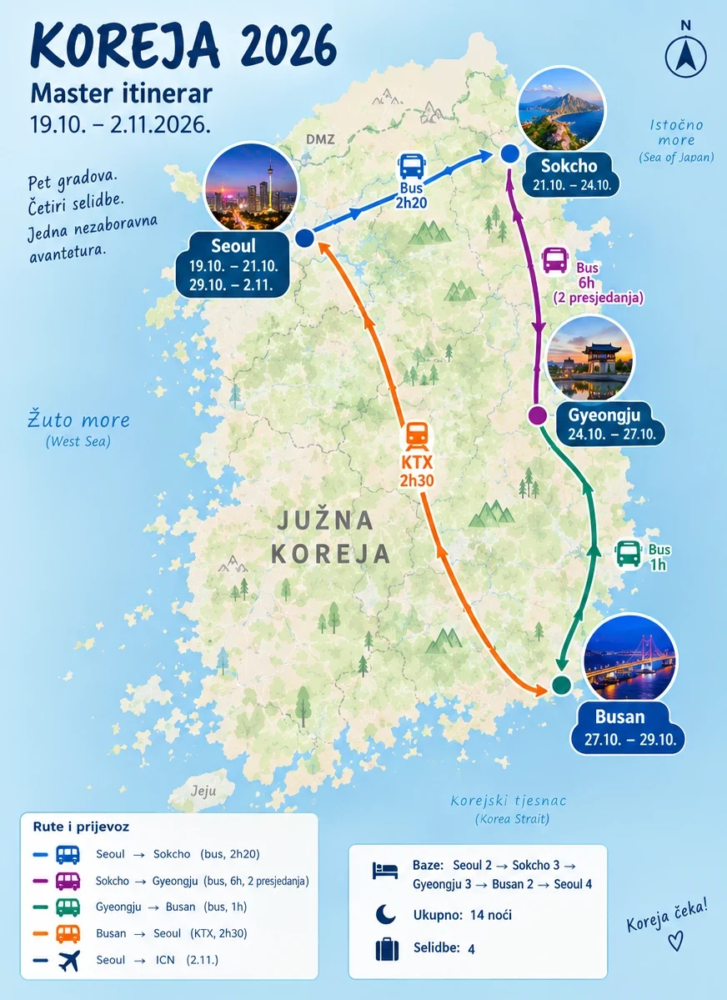

<!doctype html>
<html lang="hr">
<head>
<meta charset="utf-8">
<meta name="viewport" content="width=device-width, initial-scale=1, viewport-fit=cover">
<meta name="robots" content="noindex, nofollow">
<meta name="theme-color" content="#1f3f8f">
<meta name="description" content="Koreja 2026 — itinerar 19.10.–2.11.: Seoul, Sokcho, Gyeongju, Busan.">
<meta property="og:title" content="Koreja 2026">
<meta property="og:description" content="Itinerar 19.10.–2.11.: Seoul, Sokcho, Gyeongju, Busan.">
<meta property="og:image" content="map.webp">
<link rel="icon" href="data:image/svg+xml,%3Csvg xmlns='http://www.w3.org/2000/svg' viewBox='0 0 64 64'%3E%3Crect width='64' height='64' rx='14' fill='%231f3f8f'/%3E%3Ccircle cx='32' cy='27' r='11' fill='%23fff'/%3E%3Cpath d='M32 58 L18 36 h28 Z' fill='%23fff'/%3E%3Ccircle cx='32' cy='27' r='5' fill='%231f3f8f'/%3E%3C/svg%3E">
<title>Koreja 2026</title>
<link rel="preconnect" href="https://fonts.googleapis.com">
<link rel="preconnect" href="https://fonts.gstatic.com" crossorigin>
<link rel="stylesheet" href="https://fonts.googleapis.com/css2?family=Barlow+Condensed:wght@600;700;800&family=Caveat:wght@500;600&family=Nunito+Sans:ital,opsz,wght@0,6..12,400;0,6..12,600;0,6..12,700;1,6..12,400&display=swap">
<style>
:root { padding-top: env(safe-area-inset-top, 0px); padding-bottom: env(safe-area-inset-bottom, 0px); }
body { margin: 0; }
img { max-width: 100%; }
[hidden] { display: none !important; }
/* Layout: poster-map palette (pale sea, pale land, navy ink). Phone: day strip under a sticky bar, timeline with pins. ≥900px: navy day rail left, day card right. */
:root {
  --sea: #cfe2f1;
  --sea-deep: #b9d4ea;
  --land: #eaf2e3;
  --bg: #e9f1f7;
  --surface: #ffffff;
  --sunk: #eef4f9;
  --ink: #16284f;
  --muted: #5b6b8a;
  --line: #d4e0ec;
  --navy: #1f3f8f;
  --navy-ink: #ffffff;
  --accent: #1f3f8f;
  --accent-soft: #dde7f7;
  --plan: #7a2d8e;
  --plan-soft: #f0e2f4;
  --warn: #a35a0a;
  --warn-soft: #fbeedb;
  --hot: #c23b2b;
  --hot-soft: #fae2de;
  --ok: #17805c;
  --ok-soft: #dcf2e8;
  --hand: #3b5bb8;
  --c-seoul: #2a5bc4;
  --c-sokcho: #8a2a8f;
  --c-gyeongju: #178a66;
  --c-busan: #ea7a1f;
  --c-seoul2: #2a5bc4;
  --f-display: "Barlow Condensed", "Arial Narrow", "Helvetica Neue", sans-serif;
  --f-hand: "Caveat", "Bradley Hand", cursive;
  --f-body: "Nunito Sans", "Apple SD Gothic Neo", system-ui, -apple-system, "Segoe UI", sans-serif;
  --r: 14px;
  --shadow: 0 1px 2px rgb(22 40 79 / .06), 0 6px 18px rgb(22 40 79 / .08);
}
@media (prefers-color-scheme: dark) {
  :root:not([data-theme="light"]) {
    --sea: #13213d; --sea-deep: #0f1a30; --land: #16243a; --bg: #0d1628; --surface: #16233a; --sunk: #1c2b45; --ink: #e6edf8; --muted: #93a4c4; --line: #2a3a58;
    --navy: #3b64c9; --navy-ink: #ffffff; --accent: #8fb0f0; --accent-soft: #22335a; --plan: #d79be0; --plan-soft: #35224a;
    --warn: #f0b35c; --warn-soft: #3b2a12; --hot: #f58c7e; --hot-soft: #40201c; --ok: #6fd3a6; --ok-soft: #16342a; --hand: #9db6f3;
    --c-seoul: #7ea0ec; --c-sokcho: #d583d9; --c-gyeongju: #5fcaa3; --c-busan: #f3a05a; --c-seoul2: #7ea0ec;
    --shadow: 0 1px 2px rgb(0 0 0 / .3), 0 6px 18px rgb(0 0 0 / .3);
    color-scheme: dark;
  }
}
:root[data-theme="dark"] {
  --sea: #13213d; --sea-deep: #0f1a30; --land: #16243a; --bg: #0d1628; --surface: #16233a; --sunk: #1c2b45; --ink: #e6edf8; --muted: #93a4c4; --line: #2a3a58;
  --navy: #3b64c9; --navy-ink: #ffffff; --accent: #8fb0f0; --accent-soft: #22335a; --plan: #d79be0; --plan-soft: #35224a;
  --warn: #f0b35c; --warn-soft: #3b2a12; --hot: #f58c7e; --hot-soft: #40201c; --ok: #6fd3a6; --ok-soft: #16342a; --hand: #9db6f3;
  --c-seoul: #7ea0ec; --c-sokcho: #d583d9; --c-gyeongju: #5fcaa3; --c-busan: #f3a05a; --c-seoul2: #7ea0ec;
  --shadow: 0 1px 2px rgb(0 0 0 / .3), 0 6px 18px rgb(0 0 0 / .3);
  color-scheme: dark;
}

* { box-sizing: border-box; }
html { -webkit-text-size-adjust: 100%; }
body { background: var(--bg); color: var(--ink); font: 15.5px/1.55 var(--f-body); }
a { color: var(--accent); text-underline-offset: 2px; }
button { font: inherit; color: inherit; }
:focus-visible { outline: 2px solid var(--accent); outline-offset: 2px; border-radius: 4px; }
strong { font-weight: 700; }
.wrap { max-width: 1180px; margin: 0 auto; padding-inline: 10px; }


/* ---------- sticky bar ---------- */
.bar { position: sticky; top: env(safe-area-inset-top, 0px); z-index: 20; background: var(--bg); box-shadow: 0 1px 0 var(--line); }
.tabs { display: flex; gap: 2px; overflow-x: auto; scrollbar-width: none; padding-block: 6px 4px; }
.tabs::-webkit-scrollbar, .strip::-webkit-scrollbar, .seg::-webkit-scrollbar { display: none; }
.tab { flex: none; border: 0; background: none; padding: 6px 12px; border-radius: 999px; font: 700 .95rem var(--f-display); letter-spacing: .06em; text-transform: uppercase; color: var(--muted); cursor: pointer; }
.tab[aria-selected="true"] { background: var(--navy); color: var(--navy-ink); }
.tab .n { font-size: .72rem; margin-left: 5px; padding: 0 5px; border-radius: 999px; background: var(--hot-soft); color: var(--hot); vertical-align: 2px; }
.tab[aria-selected="true"] .n { background: rgb(255 255 255 / .22); color: var(--navy-ink); }

.strip { display: flex; gap: 6px; overflow-x: auto; scrollbar-width: none; padding-block: 4px 10px; scroll-snap-type: x proximity; }
.dpill { flex: none; scroll-snap-align: center; width: 56px; border: 0; background: var(--surface); border-radius: 10px; padding: 6px 0 5px; text-align: center; cursor: pointer; position: relative; box-shadow: 0 1px 0 var(--line); }
.dpill .w { display: block; font: 600 .66rem var(--f-display); letter-spacing: .1em; color: var(--muted); text-transform: uppercase; }
.dpill .d { display: block; font: 800 1.35rem/1.05 var(--f-display); color: var(--cc); }
.dpill .m { display: block; font: 600 .62rem var(--f-display); color: var(--muted); letter-spacing: .05em; }
.dpill[aria-current="true"] { background: var(--cc); }
.dpill[aria-current="true"] .w, .dpill[aria-current="true"] .d, .dpill[aria-current="true"] .m { color: #fff; }
.dpill.move::before { content: "→"; position: absolute; top: 3px; right: 5px; font: 700 .62rem var(--f-display); color: var(--muted); }
.dpill[aria-current="true"].move::before { color: rgb(255 255 255 / .8); }

/* ---------- layout ---------- */
.layout { display: block; padding-block: 16px 60px; }
.rail { display: none; }
main { min-width: 0; }
@media (min-width: 900px) {
  .strip { display: none; }
  .layout.days { display: grid; grid-template-columns: 260px minmax(0, 1fr); gap: 28px; align-items: start; }
  .layout.days .rail { display: block; position: sticky; top: calc(env(safe-area-inset-top, 0px) + 58px); max-height: calc(100vh - 72px); overflow-y: auto; background: var(--navy); color: #fff; border-radius: var(--r); padding: 10px 8px 14px; box-shadow: var(--shadow); }
  .rail .city { font: 700 .7rem var(--f-display); letter-spacing: .14em; text-transform: uppercase; color: rgb(255 255 255 / .6); padding: 12px 12px 4px; }
  .rail button { display: grid; grid-template-columns: 18px 1fr; gap: 10px; align-items: start; text-align: left; border: 0; background: none; padding: 6px 10px; border-radius: 9px; cursor: pointer; color: #fff; width: 100%; position: relative; }
  .rail button::before { content: ""; width: 10px; height: 10px; border-radius: 50%; background: var(--cc); border: 2px solid #fff; margin-top: 5px; box-shadow: 0 0 0 2px var(--navy); }
  .rail button::after { content: ""; position: absolute; left: 16px; top: 22px; bottom: -8px; width: 2px; background: rgb(255 255 255 / .18); }
  .rail button:last-child::after { display: none; }
  .rail button:hover { background: rgb(255 255 255 / .08); }
  .rail button[aria-current="true"] { background: #fff; color: var(--ink); }
  .rail button[aria-current="true"]::before { box-shadow: 0 0 0 2px #fff; }
  .rail .rd { font: 700 .78rem var(--f-display); letter-spacing: .06em; opacity: .75; display: block; }
  .rail .rt { font-size: .86rem; line-height: 1.25; display: block; }
}

/* ---------- day head ---------- */
.dayline { display: flex; align-items: center; gap: 8px; margin: 2px 0 8px; font: 800 1.3rem/1.1 var(--f-display); text-transform: uppercase; color: var(--navy); min-width: 0; }
.dayline .dot { flex: none; width: 10px; height: 10px; border-radius: 50%; background: var(--cc); }
.dayline .dn { flex: none; color: var(--cc); }
.dayline .dtt { min-width: 0; overflow: hidden; text-overflow: ellipsis; white-space: nowrap; }
.qlist { display: grid; gap: 4px; margin-bottom: 10px; }
.qbtn { display: grid; grid-template-columns: 24px minmax(0, 1fr) auto; align-items: center; gap: 8px; border: 0; background: var(--surface); border-radius: 10px; padding: 8px 10px; text-align: left; cursor: pointer; box-shadow: 0 1px 0 var(--line); }
.qbtn .qe { font-size: 1rem; text-align: center; }
.qbtn .qs { font-size: .86rem; color: var(--ink); white-space: nowrap; overflow: hidden; text-overflow: ellipsis; min-width: 0; }
.qbtn[aria-expanded="true"] { background: var(--navy); }
.qbtn[aria-expanded="true"] .qs, .qbtn[aria-expanded="true"] .chev { color: #fff; }
.qbtn[aria-expanded="true"] .chev { transform: rotate(90deg); }
.qpanel { background: var(--surface); border-radius: 12px; padding: 10px 12px; box-shadow: var(--shadow); }
.qpanel .md h4 { margin-top: .6em; }

/* ---------- blocks ---------- */
.stack { display: grid; gap: 10px; }
.callout { border-radius: 12px; padding: 10px 14px; background: var(--sunk); font-size: .92rem; }
.callout > :first-child { margin-top: 0; } .callout > :last-child { margin-bottom: 0; }
.callout.decide { background: var(--hot-soft); }
.callout.transfer { background: var(--sea); }
.md p { margin: .45em 0; }
.md ul, .md ol { margin: .4em 0; padding-left: 1.2em; }
.md li { margin: .2em 0; }
.md li::marker { color: var(--muted); }
.md h3, .md h4 { font: 700 1.15rem/1.2 var(--f-display); margin: 1em 0 .3em; text-transform: uppercase; letter-spacing: .04em; color: var(--navy); }
.md blockquote { margin: .5em 0; padding-left: 12px; border-left: 3px solid var(--sea-deep); color: var(--muted); font: 500 1.15rem/1.3 var(--f-hand); }
.md hr { border: 0; border-top: 1px solid var(--line); margin: 1em 0; }
.md em { color: var(--muted); }
.md p.c-warn, .md p.c-decide, .md p.c-ok, .md p.c-tip { padding: 8px 12px; border-radius: 10px; }
.md p.c-warn { background: var(--warn-soft); }
.md p.c-decide { background: var(--hot-soft); }
.md p.c-ok { background: var(--ok-soft); }
.md p.c-tip { background: var(--accent-soft); }
.wip { font: 700 .66rem var(--f-display); letter-spacing: .08em; padding: 1px 5px; border-radius: 4px; background: var(--warn-soft); color: var(--warn); white-space: nowrap; }
.map { white-space: nowrap; }

.xlist { display: grid; gap: 6px; margin: .6em 0; }
.xitem { padding: 8px 0; border-bottom: 1px solid var(--line); }
.xitem .xt { font-weight: 700; }
.xitem .xd { font-size: .86rem; color: var(--muted); }
.xitem .chips { margin-top: 3px; }
.tbl { overflow-x: auto; margin: .6em 0; }
.tbl table { border-collapse: collapse; width: 100%; font-size: .86rem; font-variant-numeric: tabular-nums; }
.tbl th, .tbl td { text-align: left; vertical-align: top; padding: 7px 10px; border-bottom: 1px solid var(--line); }
.tbl th { font: 700 .72rem var(--f-display); text-transform: uppercase; letter-spacing: .08em; color: var(--muted); }
.kv { display: grid; grid-template-columns: minmax(70px, max-content) minmax(0, 1fr); gap: 0 14px; margin: .6em 0; font-size: .88rem; }
.kv > div { padding: 6px 0; border-bottom: 1px solid var(--line); min-width: 0; }
.kv .k { font: 700 .74rem/1.7 var(--f-display); letter-spacing: .06em; text-transform: uppercase; color: var(--muted); }
@media (max-width: 640px) {
  .tbl.stackable table, .tbl.stackable tbody, .tbl.stackable tr, .tbl.stackable td { display: block; }
  .tbl.stackable thead { display: none; }
  .tbl.stackable tr { border: 1px solid var(--line); border-radius: 10px; padding: 6px 10px; margin-bottom: 8px; background: var(--surface); }
  .tbl.stackable td { border: 0; padding: 3px 0; }
  .tbl.stackable td:first-child { font-weight: 700; }
  .tbl.stackable td:not(:first-child)[data-l]::before { content: attr(data-l) "  "; font: 700 .66rem var(--f-display); text-transform: uppercase; letter-spacing: .08em; color: var(--muted); }
}

details.fold { border-radius: 12px; background: var(--surface); box-shadow: 0 1px 0 var(--line); }
details.fold > summary { list-style: none; cursor: pointer; padding: 11px 14px; display: flex; align-items: center; gap: 10px; font: 700 1.02rem var(--f-display); letter-spacing: .03em; text-transform: uppercase; color: var(--navy); }
details.fold > summary::-webkit-details-marker { display: none; }
details.fold > summary::after { content: "+"; margin-left: auto; font: 600 1.2rem var(--f-display); color: var(--muted); }
details.fold[open] > summary::after { content: "−"; }
details.fold > summary .hint { font: 600 .72rem var(--f-display); letter-spacing: .08em; color: var(--muted); }
details.fold > .md, details.fold > .inner { padding: 0 14px 12px; }

/* ---------- plan switch ---------- */
.plans { display: grid; gap: 6px; }
.seg { display: flex; gap: 4px; padding: 4px; background: var(--sunk); border-radius: 12px; overflow-x: auto; scrollbar-width: none; }
.seg button { flex: 1 0 auto; border: 0; background: none; border-radius: 9px; padding: 8px 12px; font: 700 .9rem var(--f-display); letter-spacing: .04em; text-transform: uppercase; cursor: pointer; color: var(--muted); white-space: nowrap; }
.seg button[aria-pressed="true"] { background: var(--navy); color: var(--navy-ink); }
.seg button[aria-pressed="true"].b { background: var(--plan); }

/* ---------- timeline ---------- */
.tl { list-style: none; margin: 0 -10px; padding: 0; display: grid; position: relative; background: var(--surface); box-shadow: var(--shadow); padding-block: 4px; }
@media (min-width: 900px) { .tl { margin: 0; border-radius: var(--r); } }
.tl::before { content: ""; position: absolute; left: 59px; top: 10px; bottom: 10px; width: 2px; background: var(--line); }
.tl > li { position: relative; }
.tl > li.part { padding: 10px 8px 2px 70px; font: 700 .68rem var(--f-display); letter-spacing: .14em; text-transform: uppercase; color: var(--muted); }
.tl > li.part::before { content: ""; position: absolute; left: 54px; top: 12px; width: 12px; height: 12px; border-radius: 50%; background: var(--cc); border: 2px solid var(--surface); }
.row { display: grid; grid-template-columns: 42px minmax(0, 1fr) auto; gap: 4px 6px; width: 100%; text-align: left; background: none; border: 0; padding: 9px 8px; cursor: default; align-items: start; position: relative; }
.row::before { content: ""; position: absolute; left: 56px; top: 16px; width: 8px; height: 8px; border-radius: 50%; background: var(--surface); border: 2px solid var(--cc); }
button.row { cursor: pointer; border-radius: 10px; }
button.row:hover { background: var(--sunk); }
.time { font: 700 .88rem/1.5 var(--f-display); color: var(--ink); font-variant-numeric: tabular-nums; letter-spacing: .03em; text-align: right; overflow-wrap: anywhere; }
.time.soft { color: var(--muted); font-size: .62rem; line-height: 1.2; padding-top: 4px; text-transform: uppercase; letter-spacing: .04em; }
.txt { min-width: 0; font-size: .93rem; color: var(--ink); padding-left: 14px; }
.txt p { margin: 0; }
.chev { font: 600 1rem var(--f-display); color: var(--muted); transition: transform .15s; padding-top: 1px; }
li.open .chev { transform: rotate(90deg); }
li.open > .row { background: var(--sunk); border-radius: 10px 10px 0 0; }
.chips { display: flex; flex-wrap: nowrap; gap: 4px; margin-top: 4px; overflow: hidden; }
.chips.wrap { flex-wrap: wrap; }
.chip { font: 600 .68rem/1.5 var(--f-display); letter-spacing: .05em; padding: 0 7px; border-radius: 999px; background: var(--sunk); color: var(--muted); white-space: nowrap; }
.chip.alt { background: var(--accent-soft); color: var(--accent); }
.chip.pick { background: var(--ok-soft); color: var(--ok); text-transform: none; letter-spacing: 0; font-family: var(--f-body); font-size: .74rem; overflow: hidden; text-overflow: ellipsis; min-width: 0; flex: 0 1 auto; }
.detail { margin: 0 8px 10px; padding: 12px 12px 14px 62px; display: grid; gap: 12px; background: var(--sunk); border-radius: 0 0 10px 10px; }
@media (max-width: 560px) { .detail { padding-left: 10px; } }
.detail .md { font-size: .9rem; max-width: 72ch; }
.dtitle { font: 700 1.2rem/1.2 var(--f-display); margin: 0; text-transform: uppercase; letter-spacing: .03em; color: var(--navy); }
li.gone .row { opacity: .45; }
li.gone .txt { text-decoration: line-through; text-decoration-color: var(--muted); }

li.plancard { padding: 10px 8px; }
.pcard { border-radius: 12px; background: var(--plan-soft); padding: 12px 14px; display: grid; gap: 8px; border-left: 4px solid var(--plan); }
.pcard .ph { display: flex; align-items: baseline; gap: 10px; flex-wrap: wrap; }
.pcard .ph b { font: 800 1.2rem var(--f-display); color: var(--plan); text-transform: uppercase; letter-spacing: .03em; }
.pcard .md { font-size: .9rem; }
.pcard .tbl td, .pcard .kv > div { border-color: color-mix(in srgb, var(--plan) 25%, transparent); }

/* alternatives */
.alts { display: grid; gap: 8px; }
.alts .ah { font: 700 .72rem var(--f-display); letter-spacing: .12em; text-transform: uppercase; color: var(--accent); }
.cards { display: grid; grid-auto-flow: column; grid-auto-columns: min(82%, 300px); gap: 10px; overflow-x: auto; scroll-snap-type: x mandatory; padding-bottom: 6px; scrollbar-width: thin; }
@media (min-width: 900px) { .cards { grid-auto-flow: row; grid-template-columns: repeat(auto-fill, minmax(240px, 1fr)); overflow: visible; } }
.acard { scroll-snap-align: start; border-radius: 12px; background: var(--surface); padding: 12px; display: flex; flex-direction: column; gap: 6px; min-width: 0; box-shadow: 0 1px 0 var(--line); }
.acard.sel { box-shadow: inset 0 0 0 2px var(--ok); }
.acard .at { font: 700 1.05rem/1.2 var(--f-display); letter-spacing: .02em; }
.acard .md { font-size: .84rem; color: var(--muted); flex: 1; }
.acard .md strong { color: var(--ink); }
.acard .chips { margin-top: 0; }
.pickbtn { align-self: flex-start; margin-top: 4px; border: 1px solid var(--line); background: none; border-radius: 999px; padding: 4px 11px; font-size: .78rem; cursor: pointer; color: var(--muted); }
.pickbtn.on { background: var(--ok); border-color: var(--ok); color: #fff; }
.pickbtn:disabled { opacity: .5; cursor: not-allowed; }
.nvpill { justify-self: start; display: inline-flex; align-items: center; gap: 6px; background: #03c75a; color: #fff; text-decoration: none; border-radius: 999px; padding: 6px 14px; font: 700 .82rem var(--f-display); letter-spacing: .06em; text-transform: uppercase; }
.chip.nvchip { background: #03c75a; color: #fff; text-decoration: none; }
a.nv { color: var(--accent); font: 800 .7rem var(--f-display); letter-spacing: .08em; text-decoration: underline; text-underline-offset: 2px; white-space: nowrap; }
.anote { font-size: .82rem; color: var(--muted); margin: 0; }

/* triggers */
.trig { list-style: none; margin: 0; padding: 4px 14px; display: grid; background: var(--surface); border-radius: var(--r); box-shadow: var(--shadow); }
.trig li { display: grid; grid-template-columns: minmax(0, 12em) minmax(0, 1fr); gap: 2px 12px; font-size: .88rem; padding: 9px 0; border-bottom: 1px solid var(--line); }
.trig li:last-child { border-bottom: 0; }
.trig .if { font: 700 .95rem var(--f-display); letter-spacing: .03em; color: var(--hot); }
@media (max-width: 520px) { .trig li { grid-template-columns: 1fr; } }

.sect { font: 800 1.05rem var(--f-display); letter-spacing: .12em; text-transform: uppercase; color: var(--navy); margin: 22px 0 8px; display: flex; align-items: center; gap: 10px; }
.sect::after { content: ""; flex: 1; height: 2px; background: var(--sea-deep); border-radius: 2px; }
.pager { display: flex; justify-content: space-between; gap: 10px; margin-top: 26px; }
.pager button { border: 0; background: var(--surface); border-radius: var(--r); padding: 10px 14px; cursor: pointer; text-align: left; min-width: 0; flex: 1; box-shadow: var(--shadow); }
.pager button:last-child { text-align: right; }
.pager small { display: block; font: 700 .7rem var(--f-display); color: var(--muted); text-transform: uppercase; letter-spacing: .1em; }
.pager span { font-size: .86rem; font-weight: 600; }

/* ---------- other tabs ---------- */
.page h2 { font: 800 2rem/1 var(--f-display); margin: 0 0 6px; text-transform: uppercase; color: var(--navy); }
.page .intro { color: var(--muted); max-width: 68ch; margin: 0 0 16px; }
.hero { border-radius: var(--r); overflow: hidden; box-shadow: var(--shadow); background: var(--sea); margin-bottom: 18px; }
.hero img { display: block; width: 100%; height: auto; }
@media (min-width: 900px) {
  .page.pregled { display: grid; grid-template-columns: minmax(0, 420px) minmax(0, 1fr); gap: 0 28px; align-items: start; }
  .page.pregled .hero { grid-row: 1 / span 6; position: sticky; top: calc(env(safe-area-inset-top, 0px) + 58px); margin: 0; }
}
.hand { font: 500 1.35rem/1.25 var(--f-hand); color: var(--hand); margin: 0 0 14px; }
.flash { list-style: none; padding: 0; margin: 0; display: grid; background: var(--surface); border-radius: var(--r); box-shadow: var(--shadow); position: relative; padding-block: 4px; }
.flash::before { content: ""; position: absolute; left: 25px; top: 14px; bottom: 14px; width: 2px; background: var(--line); }
.flash button { display: grid; grid-template-columns: 76px minmax(0, 1fr); gap: 12px; padding: 12px 14px 12px 46px; background: none; border: 0; text-align: left; width: 100%; cursor: pointer; position: relative; border-radius: 10px; }
.flash button:hover { background: var(--sunk); }
.flash button::before { content: ""; position: absolute; left: 19px; top: 17px; width: 10px; height: 10px; border-radius: 50%; background: var(--cc); border: 2px solid var(--surface); }
.flash .fd { font: 800 1rem/1.25 var(--f-display); color: var(--cc); letter-spacing: .03em; }
.flash .fd small { display: block; font-size: .72rem; color: var(--muted); letter-spacing: .1em; text-transform: uppercase; }
.flash .ft { font-size: .9rem; }
.list { display: grid; gap: 10px; }
.item { border-radius: 12px; background: var(--surface); padding: 12px 14px; display: grid; gap: 6px; box-shadow: 0 1px 0 var(--line); }
.item.done { background: var(--sunk); }
.item.done .iw { text-decoration: line-through; text-decoration-color: var(--muted); }
.item .top { display: flex; align-items: flex-start; gap: 10px; }
.item .iw { font-weight: 700; flex: 1; min-width: 0; }
.item .meta { font: 700 .7rem var(--f-display); letter-spacing: .1em; text-transform: uppercase; color: var(--muted); }
.item .md { font-size: .86rem; }
.check { flex: none; width: 26px; height: 26px; border-radius: 8px; border: 1.5px solid var(--line); background: var(--surface); cursor: pointer; display: grid; place-items: center; font-size: .85rem; color: transparent; }
.check.on { background: var(--ok); border-color: var(--ok); color: #fff; }
.check:disabled { cursor: not-allowed; opacity: .6; }
.who { display: flex; flex-wrap: wrap; gap: 4px; align-items: center; }
.who .lab { font: 700 .7rem var(--f-display); letter-spacing: .1em; text-transform: uppercase; color: var(--muted); margin-right: 4px; }
.who button { border: 1px solid var(--line); background: none; border-radius: 999px; padding: 2px 10px; font-size: .78rem; cursor: pointer; color: var(--muted); }
.who button.on { background: var(--navy); border-color: var(--navy); color: #fff; }
.who button:disabled { cursor: not-allowed; }
.badge { font: 700 .68rem var(--f-display); letter-spacing: .06em; padding: 2px 7px; border-radius: 5px; background: var(--sunk); color: var(--muted); white-space: nowrap; }
.badge.red { background: var(--hot-soft); color: var(--hot); }
.badge.ok { background: var(--ok-soft); color: var(--ok); }
.progress { display: flex; align-items: center; gap: 12px; margin-bottom: 14px; font: 700 .78rem var(--f-display); letter-spacing: .08em; text-transform: uppercase; color: var(--muted); }
.progress .bar2 { flex: 1; height: 8px; border-radius: 4px; background: var(--sunk); overflow: hidden; }
.progress .bar2 i { display: block; height: 100%; background: var(--ok); border-radius: 4px; }
.filters { display: flex; gap: 6px; flex-wrap: wrap; margin-bottom: 12px; }
.filters button { border: 0; background: var(--surface); border-radius: 999px; padding: 4px 12px; font: 700 .8rem var(--f-display); letter-spacing: .06em; text-transform: uppercase; cursor: pointer; box-shadow: 0 1px 0 var(--line); }
.filters button[aria-pressed="true"] { background: var(--navy); color: #fff; }
.ro { font-size: .82rem; color: var(--muted); background: var(--sunk); padding: 8px 12px; border-radius: 10px; margin-bottom: 12px; }
.linkday { border: 0; background: none; padding: 0; color: var(--accent); font: 700 .74rem var(--f-display); letter-spacing: .08em; text-transform: uppercase; cursor: pointer; text-decoration: underline; text-underline-offset: 3px; }

@media (prefers-reduced-motion: reduce) { * { transition: none !important; scroll-behavior: auto !important; } }
</style>
</head>
<body>
<div class="bar">
  <div class="wrap">
    <nav class="tabs" role="tablist" id="tabs"></nav>
    <div class="strip" id="strip"></div>
  </div>
</div>
<div class="wrap">
  <div class="layout" id="layout">
    <nav class="rail" id="rail" aria-label="Dani"></nav>
    <main id="main"></main>
  </div>
</div>

<script id="data" type="application/json">{"header": "**Manuel · Goran · Lucija · Matej** · 19.10. – 2.11.2026. · *v9, 10.10.2026.*\n--\n**Oznake:** 🔒 traži rezervaciju · 💸 splurge · ⚠️ kvaka · **WIP** neprovjereno, popis u `KorejaWIP.md` · **↔** termin ima zamjene · 🧱 dodatne opcije za grad", "days": [{"date": "19.10", "d3heading": "PON 19.10. — DOLAZAK I ROĐENDAN", "night": "Noćenje: Seoul I, Chungsin-dong (Jongno) · Dan 1 od 14", "intro": "", "stay": "", "slots": [{"timeLabel": "12:30", "key": "12:30", "title": "Slijetanje na ICN (T2)", "meta": [], "body": "Korean Air slijeće na **terminal 2**. Za kontrolu, prtljagu i eSIM treba računati **1–1,5 h**, pa smo u dolaznoj dvorani realno oko **14:00–14:15**.\n\n**K-ETA nije potreban:** izuzeće za Hrvatsku vrijedi do 31.12.2026. ⚠️ **Ponovno provjeriti tjedan prije puta.**\n\n**E-Arrival Card** ispunjava se online na službenoj stranici **e-arrivalcard.go.kr** unutar 72 h prije slijetanja, dakle **od 16.10.** Spremiti screenshot potvrde. ⚠️ Postoje lažne stranice koje naplaćuju, koristiti samo službenu.\n\n**eSIM kupiti online unaprijed i aktivirati pri slijetanju.** Za grupu je najjeftinije jedan pocket wifi (~4 400 ₩ dnevno) i uz njega jedan ili dva eSIM-a, jer ćemo se ponekad razdvajati.\n\n**T-money** kupujemo u dućanu na T2, **samo za gotovinu**, i gotovinom se nadoplaćuje. Vrijedi u cijeloj zemlji: metro, busevi, većina taksija.", "alts": [], "altNotes": [], "after": ""}, {"timeLabel": "~14:15", "key": "14:15", "title": "AREX express do Seoul Stationa", "meta": ["⏱ 51 min", "☔", "🦵 lagano"], "body": "**Od T2 do Seoul Stationa 51 min**, polasci svakih 30–40 min, ~11 500–13 000 ₩. Online vaučer na kiosku se mijenja za kartu s mjestom. Police za kofere su u svakom vagonu. All-stop je jeftiniji, ali nema mjesta za prtljagu.\n\n⚠️ AREX je na katu **B7** Seoul Stationa, pa s koferima treba **20–30 min** do ulice. Za taksi koristimo zapadni (stražnji) izlaz.\n\n⚠️ Strana beskontaktna kartica radi na mnogim autobusima, ali **ne na metrou**. T-money je dovoljan za cijeli put.", "alts": [], "altNotes": [], "after": ""}, {"timeLabel": "~15:30", "key": "15:30", "title": "Taksi do apartmana", "meta": [], "body": "**Dva taksija**, jer u prtljažnik stane samo jedan veliki kofer (korejski taksiji voze na plin, spremnik je u prtljažniku). Vožnja 15–20 min, ukupno ~15 000 ₩. Adresa za vozača: **서울 종로구 율곡로23가길 12**. Aplikacije: **k.ride** (Kakao za strance, prima stranu karticu) ili Uber.\n\n**Rezerva:** linija 4 od Seoul Stationa izravno do **Dongdaemuna**, pa ~600 m pješice s koferima.\n\n**Check-in je od 16:00**, stižemo točno na vrijeme.", "alts": [], "altNotes": [], "after": ""}, {"timeLabel": "17:30", "key": "17:30", "title": "Gwangjang tržnica", "meta": ["⏱ 1,5–2 h", "☔ natkriveno", "🦵 lagano"], "body": "Od apartmana **~1 km, 12–15 min pješice.** Jedna od najpoznatijih tradicionalnih tržnica u zemlji. Dio s hranom radi svaki dan, najživlje je od 18 do 21 sat, gasi se oko 22:30–23:00.\n\n**Kako funkcionira:** sjedne se na klupu ispred štanda i **naručuje samo s tog štanda**, ne miješa se hrana sa susjednih. Na središnjim štandovima treba **gotovina** (kartica često ne prolazi ispod 10 000 ₩), pa ponijeti 20–40 000 ₩ po osobi. Izbjegavamo generičke \"miješane plate\" (15–25 000 ₩) na neoznačenim štandovima u sredini i držimo se imenovanih.\n\n- **Sunhee-ne Bindaetteok (순희네 빈대떡)**: palačinka od mung graha 5 000 ₩, mesni okruglić 3 000 ₩, makgeolli 3–4 000 ₩. **09:00–21:00.** U zatvorenom dijelu primaju karticu. Red 10–20 min.\n- **Gohyang Kalguksu (고향칼국수, štand 70)**: ručno rezani rezanci 7 000 ₩, s manduom 8 000 ₩. 09:00–22:30. Red 15–35 min, klupa na prolazu.\n- **Mayak kimbap (원조 모녀 꼬마마약김밥)**: 3 500–4 000 ₩. **Zatvara u 20:00.**\n- ❌ **Kanggane tteokbokki ponedjeljkom je zatvoren.**\n\n⚠️ Sannakji (živa hobotnica) i yukhoe (sirova junetina) ovdje su posvuda. **Ne naručujemo**, pravilo \"bez sirovog\" vrijedi.", "alts": [], "altNotes": [], "after": ""}, {"timeLabel": "19:00", "key": "19:00", "title": "Rođendanska večer", "meta": ["⏱ 1–2 h", "☔", "🦵 lagano"], "body": "Dvije opcije, odluka do 15.10.:\n\n**A) Screen golf: Golfzon Park Myeongdong Station (골프존파크 명동역점)**, 4. kat, 115 Toegye-ro (Myeongdong, izlaz 8/9). Ponedjeljkom 09:00–02:00. ⚠️ **Cijena je po igraču, ne po sobi:** ~30 000 ₩ po osobi za 18 rupa navečer, a 18 rupa za četvero traje ~3 h, pa **tražimo 9 rupa** (~15 000 ₩ po osobi). Palice i cipele su besplatni, izbornik je na engleskom, osoblje pomaže strancima. Poslije 18:00 bolje je rezervirati.\nRezerva: Golfzon Park Euljiro Signature (B1 Pine Avenue, Euljiro 3-ga izlaz 12), navečer obavezna rezervacija, +82 2-6031-8900.\n\n**B) Screen baseball: Strikezon Jongno (스트라이크존 종로)**, kod Jonggaka (L1, izlaz 4). Ponedjeljkom 13:00–02:00. **~48–50 000 ₩ po sobi na sat** (2–6 igrača, pola igre 28 000 ₩), palice i kacige besplatne. Rano navečer obično ne treba rezervacija, poslije 18:00 nazvati. ⚠️ Izbornici su samo na korejskom, osoblje postavi igru. Glasno je.", "alts": [], "altNotes": ["glow bowling, bacanje sjekira, rage room i VR arkada sve su u **Hongdaeu**, 35–40 min od apartmana, pa bolje sjedaju u Seoul II. Popis je u 🧱 dodatnim opcijama za Seoul II. Mullae-dong je izbačen jer je ponedjeljkom većina barova zatvorena."], "after": ""}, {"timeLabel": "21:00", "key": "21:00", "title": "Nogari Alley, Euljiro", "meta": ["⏱ 1–2 h", "☀️ stolovi su na ulici", "🦵 lagano"], "body": "Od apartmana ~2 km: taksi ~10 min ili metro do Euljira 3-ga (L2, L3). Stotine ljudi na plastičnim stolcima nasred ulice.\n\n- **Eulji OB Bear (을지OB베어)**: lokal koji je 1980. pokrenuo ulicu, danas odmah iza ugla, **12 Chungmu-ro 9-gil** (izlaz 11). Točeno pivo 3 500–4 500 ₩, nogari 1 000–2 000 ₩. **Radi 12:00–23:00**, zato počinjemo u 21:00.\n- **Manseon Hof (만선호프)**: drži većinu ulice. Pivo 4 500 ₩, pileći češnjak 19 000 ₩, do 24:00.\n- Po kiši su stolovi na ulici zabranjeni, svi se sele unutra.\n\n⚠️ Korejci piju unutar svoje grupe, upoznavanje novih ljudi ovdje nije tako lako kako izgleda.", "alts": [{"title": "Krug po barovima na Euljiru", "text": ", sve unutra, bez rezervacije", "meta": ["⏱ 2 h", "☔", "🦵"]}, {"title": "Pojangmacha na Jongnu 3-ga", "text": ": šatori, plastični stolci, jela 15–20 000 ₩, soju 5 000 ₩, 18:00–03:00, ovisi o vremenu", "meta": ["⏱ 1–2 h", "🌦️", "🦵"]}, {"title": "Podrum Shinsegaea za desert, pa spavanje", "text": ", ako je ekipa gotova", "meta": ["⏱ 45 min", "☔", "🦵"]}], "altNotes": [], "after": ""}, {"timeLabel": "23:00", "key": "23:00", "title": "Ace Four Club", "meta": ["⏱ 1–2 h", "☔", "🦵 lagano"], "body": "**에이스포클럽**, 2. kat, 105 Eulji-ro (Euljiro 3-ga, izlaz 1), u sačuvanom prostoru 60 godina stare čajane Ihwa Dabang: vinili, tamjan, retro namještaj. Highball od 11 000 ₩, viski 13–24 000 ₩. Svaki dan 17:00–01:00. Bez rezervacije, malen je, a vrata nisu označena. Kući taksijem, ~10 min.", "alts": [{"title": "Jin Ok-hwa dakhanmari (진옥화할매원조닭한마리)", "text": ": cijela piletina kuhana na stolu, ~30 000 ₩ za dvoje, do 01:00 (zadnja narudžba 23:30). **Kod Dongdaemuna, 5–10 min od apartmana**", "meta": ["⏱ 1 h", "☔", "🦵"]}, {"title": "Pojangmacha na Jongnu 3-ga", "text": ", do 03:00, na putu kući", "meta": ["⏱ 1 h", "🌦️", "🦵"]}, {"title": "Noraebang", "text": ": privatna soba 15–25 000 ₩ na sat, ili coin noraebang (500 ₩ za 1–2 pjesme)", "meta": ["⏱ 1 h", "☔", "🦵"]}], "altNotes": [], "after": ""}], "info": [], "triggers": "- **Let kasni:** sve se pomiče. Gwangjang radi do ~22:30, rođendan postaje Gwangjang i Nogari (OB Bear zatvara u 23:00, onda Manseon Hof).\n- **Kiša:** Nogari se seli unutra (Manseon Hof) ili idemo ravno u Ace Four Club ili barove na Euljiru.\n- **Svi su mrtvi:** Gwangjang, dakhanmari kod Dongdaemuna, spavanje. Sve pješice od apartmana.\n- **Ekipa je svježa:** Ace Four Club, pa noraebang na putu kući.", "heading": "Pon 19.10. — Dolazak i Lucijin rođendan", "city": "seoul", "transfer": "", "flash": {"label": "Ponedjeljak, 19. 10. · Seoul — dolazak i Lucijin rođendan", "text": "Slijetanje u Seoul u 12:30. Nakon preuzimanja prtljage slijedi vožnja vlakom AREX i taksijem do apartmana u blizini Dongdaemuna, gdje je planiran check-in u 16:00. Kad se smjestimo, odlazimo pješice na **Gwangjang tržnicu**, jednu od najpoznatijih tradicionalnih tržnica u Seoulu. Idealna je za prvo upoznavanje s korejskom uličnom hranom — od hrskavih palačinki *bindaetteok* do knedli i rezanaca. Navečer slavimo **Lucijin rođendan**! Za početak možemo odabrati screen golf ili screen baseball, zabavnu korejsku verziju sporta u zatvorenom prostoru, uz simulatore i natjecateljsku atmosferu. Nakon toga slijede plastični stolci, pivo i grickalice u **Nogari Alleyju**, poznatoj uličici s jednostavnim pivskim barovima. Večer završavamo u **Ace Four Clubu**, retro baru s posebnim ugođajem."}, "rows": [{"time": "12:30", "key": "12:30", "text": "Slijetanje na ICN, **terminal 2**. E-Arrival Card je već ispunjen online. U dolaznoj dvorani kupujemo T-money (gotovina) i aktiviramo eSIM ili wifi.", "altHint": false, "slot": 0}, {"time": "~14:15", "key": "14:15", "text": "**AREX express** od T2 do Seoul Stationa, 51 min, ~11 500–13 000 ₩. U vagonima su police za kofere.", "altHint": false, "slot": 1}, {"time": "~15:30", "key": "15:30", "text": "AREX je na katu B7 Seoul Stationa, pa do ulice treba 20–30 min. Odatle **dva taksija** do apartmana, ~15–20 min.", "altHint": false, "slot": 2}, {"time": "16:00", "key": "16:00", "text": "**Check-in** u Chungsin-dongu, tuš i kratki odmor.", "altHint": false, "slot": null}, {"time": "17:30", "key": "17:30", "text": "Pješice do **Gwangjang tržnice**, 12–15 min. Bindaetteok, kalguksu i mayak kimbap; na štandovima treba gotovina.", "altHint": false, "slot": 3}, {"time": "19:00", "key": "19:00", "text": "**Rođendanska večer:** screen golf (9 rupa) ili screen baseball.", "altHint": false, "slot": 4}, {"time": "21:00", "key": "21:00", "text": "**Nogari Alley** na Euljiru 3-ga: Eulji OB Bear (zatvara u 23:00) ili Manseon Hof.", "altHint": false, "slot": 5}, {"time": "23:00", "key": "23:00", "text": "**Ace Four Club**, retro bar u staroj čajani, otvoren do 01:00.", "altHint": false, "slot": 6}], "plans": [], "leftPlans3": [], "decisions": ["d-pon-19-10-roendanska-vecer"]}, {"date": "20.10", "d3heading": "UTO 20.10. — JEDINI PUNI DAN U SEOULU I", "night": "Noćenje: Seoul I, Chungsin-dong (Jongno) · Dan 2 od 14", "intro": "⚠️ **Gyeongbokgung i Jongmyo utorkom su zatvoreni.** Fiksna točka dana je **Seoul Sky u 16:30.** Muzej (jug, Ichon) i toranj (istok, Jamsil) udaljeni su 35–40 min, pa muzej mora završiti do ~15:45.", "stay": "", "slots": [{"timeLabel": "08:30", "key": "08:30", "title": "Gradski zid na Naksanu *(fleksibilno)*", "meta": ["⏱ 45 min", "☀️", "🦵🦵 uspon i stepenice"], "body": "Stari kameni gradski zid na brdu Naksan, **odmah iza apartmana**: kratki krug s pogledom na grad, besplatno. **Ako se ujutro ne stigne, ide navečer.** Zid je osvijetljen i 5 min je od vrata.\n\n⚠️ Ima uspona i stepenica. Lucija sa štapovima ili kraći krug.", "alts": [], "altNotes": [], "after": ""}, {"timeLabel": "09:30", "key": "09:30", "title": "Jogyesa", "meta": ["⏱ 30 min", "☔", "🦵 lagano"], "body": "Metro Jonggak (L1), izlaz 2. Od Jongna 5-ga to su dvije stanice, ili taksi ~10 min. Besplatno. Najvažniji hram reda Jogye, odmah uz Insadong: lampioni iznad dvorišta, zlatni Buda unutra.\n\n🌼 **Festival krizantema** traje otprilike od početka listopada do sredine studenog. Dvorište je puno cvjetnih skulptura, a noću je osvijetljeno.", "alts": [], "altNotes": [], "after": ""}, {"timeLabel": "10:15", "key": "10:15", "title": "Bukchon Hanok Village", "meta": ["⏱ 30–45 min", "☀️", "🦵🦵 strme uličice, kaldrma"], "body": "Metro Anguk (L3), izlaz 2, ili od Jogyese ~15 min pješice. Besplatno.\n\n⚠️ **Od 1.3.2025. glavni stambeni dio (\"crvena zona\", Bukchon-ro 11-gil) zatvoren je za turiste od 17:00 do 10:00**, uz čuvare i kazne od 100 000 ₩. Zato dolazimo tek poslije 10:00, kad je već gušće.\n\nStambena četvrt hanok kuća čiji su stanovnici umorni od turista. Prošetamo tiho, pogledamo i ne zadržavamo se.", "alts": [{"title": "Preskočiti", "text": ": s Jogyese ravno na ručak, dobije se 45 min.", "meta": []}], "altNotes": [], "after": ""}, {"timeLabel": "11:15", "key": "11:15", "title": "Tongin tržnica", "meta": ["⏱ 1–1,5 h", "☔ natkriveno", "🦵 lagano"], "body": "Iz Bukchona ~20 min pješice preko područja palače, ili taksi 5–10 min. Metro Gyeongbokgung (L3), izlaz 2, pa ~10 min.\n\nMala stara susjedska tržnica zapadno od palače Gyeongbokgung. **Kako radi:** na info-pultu se kupi niz **mjedenih novčića (yeopjeon), 10 000 ₩ za 20 komada**, i prazan pladanj, pa se ide od štanda do štanda i novčići mijenjaju za male porcije (omlet, palačinke, pirjana svinjetina, japchae). Jede se u blagovaonici tržnice.\n\n⚠️ **Utorkom 11:00–16:00, novčići se prodaju do 15:00.** Zatvoreno ponedjeljkom i treće nedjelje u mjesecu.\n\n**Ne propustiti gireum tteokbokki:** rižini kolačići prženi u tavi s čilijem i soja-umakom. Ti štandovi rade neovisno o blagovaonici i otvoreni su svaki dan.", "alts": [{"title": "Plan B: Hwangsaengga Kalguksu (황생가칼국수)", "text": ", 78 Bukchon-ro 5-gil, nasuprot MMCA, na rubu Bukchona (Anguk izlaz 1, ~8 min). Debeli ručno rezani rezanci u mliječnoj juhi od goveđih kostiju **11 000 ₩**, veliki domaći mandu 11 000 ₩, slažu ih iza stakla na ulazu. Svaki dan 11:00–21:30 bez pauze. **Red 20–40 min u vrijeme ručka.** Za slučaj da smo pregladni ili umorni za šetnju do Tongina", "meta": ["⏱ 1 h", "☔", "🦵"]}, {"title": "Namdaemun tržnica", "text": ": kaos, ulična hrana i jeftine naočale", "meta": ["⏱ 1,5 h", "🌦️", "🦵"]}], "altNotes": [], "after": ""}, {"timeLabel": "13:15", "key": "13:15", "title": "Nacionalni muzej Koreje", "meta": ["⏱ 2–2,5 h", "☔", "🦵 lagano"], "body": "Metro Ichon (L4), izlaz 2, natkriveni prilaz. **Besplatno.** Otvoren svaki dan (utorkom 10:00–18:00, srijedom i subotom do 21:00), zatvoren samo za Novu godinu, Seollal i Chuseok.\n\n- **Zlatne krune kraljevstva Silla.** Vidjeti ih prije Gyeongjua daje tamošnjim humcima kontekst.\n- **\"Soba tihe kontemplacije\" (사유의 방)** na 2. katu: dva Bude u razmišljanju, nacionalno blago, u zamračenoj sobi. Besplatno, bez rezervacije.\n\nPrema Jamsilu krećemo najkasnije u **15:45** (35–40 min).", "alts": [], "altNotes": [], "after": ""}, {"timeLabel": "16:30", "key": "16:30", "title": "Seoul Sky", "meta": ["⏱ 1,5–2 h", "☀️ treba vidljivost", "🦵 lagano"], "body": "Metro Jamsil (L2, L8), izlaz 1–2, izravno u toranj. **31 000 ₩** odrasli (Fast Pass 62 000 ₩), nedjelja–četvrtak 10:30–22:00. Sa sigurnosnom kontrolom i dizalom treba računati 1,5–2 h, utorkom je red 15–25 min.\n\nZgrada od 555 m, vidikovac na katovima 117–123 (~500 m) i stakleni pod na Sky Decku, jedan od najviših vidikovaca na svijetu. ⚠️ **Zalazak 20.10. je oko 17:45–17:50**, zato **rezerviramo ulaz za 16:30–17:00**: dnevno svjetlo, zalazak i osvijetljeni grad u jednom posjetu.\n\n⚠️ Navečer staklo stvara odsjaje, a sumaglica može ubiti daleki pogled. Ako je prognoza loša, prebacujemo na nedjelju 1.11.", "alts": [{"title": "Prebaciti na nedjelju 1.11.", "text": ", rezervni termin postoji upravo za ovo.", "meta": []}, {"title": "Naksan ili Inwangsan u sumrak", "text": ": besplatni vidikovci na gradskom zidu, bez redova", "meta": ["⏱ 1–2 h", "☀️", "🦵🦵"]}, {"title": "Duga fontana Banpo", "text": ": besplatno, u 19:30, 20:00, 20:30 i 21:00 (20 min), sezona do 31.10. Ne radi po kiši i vjetru", "meta": ["⏱ 45 min", "☀️", "🦵"]}], "altNotes": [], "after": ""}, {"timeLabel": "19:15", "key": "19:15", "title": "Deoksugung i Doldam-gil", "meta": ["⏱ 45 min", "🌦️", "🦵 lagano"], "body": "Iz Jamsila linija 2 izravno do City Halla (~35 min), izlaz 2. **1 000 ₩**, otvoreno do **21:00, zadnji ulaz u 20:00**. Jedina palača otvorena navečer i osvijetljena. Smjena straže ispred vrata Daehanmun je u 11:00 i 14:00, u ovom terminu je nema.\n\nNajmanja seulska palača: tradicionalne drvene dvorane uz nekoliko kamenih zgrada u zapadnom stilu s početka 20. stoljeća. Uz zid ide **Doldam-gil, \"cesta kamenog zida\"**, drvored koji je krajem listopada jedna od najljepših jesenskih šetnji u gradu. ⚠️ Zatvoreno ponedjeljkom.\n\n💡 **Ovaj večernji termin je zamjenjiv:** ako ekipa umjesto palače poželi pravi seulski izlazak, ovdje ide nešto iz te kategorije. Još nije odlučeno što.", "alts": [{"title": "Seulski izlazak", "text": ", još treba odabrati što.", "meta": []}, {"title": "Dongdaemun noću", "text": ": veleprodaja mode 20:00–05:00 (od nedjelje navečer do petka ujutro), kolica i vreće na ulici poslije 23:00. Zanimljivo i bez kupovine", "meta": ["⏱ 1,5 h", "☔", "🦵"]}], "altNotes": [], "after": ""}, {"timeLabel": "20:15", "key": "20:15", "title": "Večera: Myeongdong Kyoja", "meta": ["⏱ 45 min", "☔", "🦵 lagano"], "body": "**명동교자**, glavni lokal, 29 Myeongdong 10-gil (Myeongdong, izlaz 8), ~10 min pješice od Deoksugunga. Kalguksu u pilećoj juhi s mljevenim mesom **11 000 ₩** (rezanci i juha dolijevaju se besplatno), 10 svinjskih mandua 12 000 ₩, kimchi s puno sirovog češnjaka. Svaki dan 10:30–21:00 bez pauze. Redovi brzo idu, 10–20 min.", "alts": [{"title": "Plan B: Dongwonjip (동원집)", "text": ", gamjatang: crveni ljuti gulaš od svinjskih kralježaka i krumpira, meso se skida s kostiju. 22 Toegye-ro 27-gil (Euljiro 3-ga izlaz 9 ili Chungmuro izlaz 5). **10–11 000 ₩** zdjela, lonac za dijeljenje 28–38 000 ₩. 10:00–22:00 (pauza 15:30–16:30), **zadnja narudžba 21:00**, nedjeljom zatvoreno. Pun lokalnih radnika, odmah uz barove", "meta": ["⏱ 1 h", "☔", "🦵"]}, {"title": "Ostale opcije u blizini", "text": "(hladni rezanci i klasika; bolje za ručak jer ranije zatvaraju):\n- **Wooraeok (우래옥)**: od 1946., pjongjanški hladni rezanci 16 000 ₩, bulgogi 37–42 000 ₩. Utorkom 11:30–21:00, **zadnja narudžba 20:40**, ponedjeljkom zatvoreno. Euljiro 4-ga, izlaz 4.\n- **Eulji Myeonok (을지면옥)**: 12 Samil-daero 30-gil (Jongno 3-ga, izlaz 5). Hladni rezanci 15 000 ₩, pauza 15:00–17:00, **zadnja narudžba 20:20**, nedjeljom zatvoreno.\n- **Pildong Myeonok (필동면옥)**: vrlo nježna juha, 14 000 ₩. 11:00–20:30, nedjeljom zatvoreno.\n- **Imun Seolnongtang (이문설농탕)**: najstariji restoran u Koreji (1904.), juha od goveđih kostiju 14–17 000 ₩. 08:00–21:00 (pauza 15:00–16:30), dobar i za doručak.", "meta": []}], "altNotes": [], "after": ""}, {"timeLabel": "21:30", "key": "21:30", "title": "Barovi na Euljiru", "meta": ["⏱ 2 h", "☔", "🦵 lagano"], "body": "Metro Euljiro 3-ga. Koktel 15–25 000 ₩. Barovi iza neoznačenih vrata u starim radioničkim zgradama. **Bez rezervacije.** Naver Map ih nalazi bolje od Googlea.\n\n- **Bar Sookhee (숙희)**: 2. kat, 14-1 Eulji-ro 12-gil (izlaz 10). Hanok stil, kokteli od sezonskog voća 20–25 000 ₩, **couvert 5–10 000 ₩ po osobi**. 18:00–02:00. Mirniji i skuplji.\n- **Jean Frigo (장프리고)**: Toegye-ro 62-gil 9-8, 1. kat (Gwanghui-dong, kod Dongdaemuna). Ulaz kroz vrata hladnjaka u voćarni, narudžba preko starih telefona. Kokteli 16–20 000 ₩, 18:00–01:30, ponedjeljkom zatvoreno.\n- **Ace Four Club**, ako nije bio u ponedjeljak.", "alts": [{"title": "Zid na Naksanu noću", "text": ", ako nije bio ujutro. Osvijetljen, 5 min od apartmana", "meta": ["⏱ 45 min", "☀️", "🦵🦵"]}, {"title": "Nogari Alley", "text": ", ako jučer nije uspio zbog kiše", "meta": ["⏱ 1–2 h", "☀️", "🦵"]}, {"title": "Noraebang", "text": "", "meta": ["⏱ 1 h", "☔", "🦵"]}], "altNotes": [], "after": ""}], "info": [], "triggers": "- **Prespavali smo:** Naksan se seli na večer, dan počinje Jogyesom.\n- **Kiša:** izbaciti Bukchon i Deoksugung, produžiti muzej, dodati Gyeongdong i Starbucks 1960.\n- **Loša vidljivost:** Seoul Sky na 1.11. Navečer Gwangjang ili Dongdaemun noću.\n- **Koljeno tišti:** izbaciti Bukchon i Naksan.\n- **Gladni prije Tongina:** Hwangsaengga kalguksu odmah uz Bukchon.\n- **Kasnimo na Deoksugung (zadnji ulaz 20:00):** ravno na večeru i u barove.", "heading": "Uto 20.10. — Puni dan", "city": "seoul", "transfer": "", "flash": {"label": "Utorak, 20. 10. · Seoul — hramovi, povijest i noćni grad", "text": "Ako se probudimo dovoljno rano, dan počinjemo kratkom šetnjom uz gradske zidine na **Naksanu**, odmah iza kuće. Slijedi **hram Jogyesa**, koji bi u ovo doba godine trebao biti posebno lijep ukrašen krizantemama. Nakon 10:00 odlazimo u **Bukchon Hanok Village**, povijesnu četvrt s tradicionalnim korejskim kućama (*hanok*). Kasniji dolazak omogućuje nam da poštujemo jutarnja ograničenja posjeta u pojedinim dijelovima četvrti. Za ručak idemo na **Tongin tržnicu**, gdje se može kupiti posudica s tradicionalnim mjedenim novčićima i njima plaćati različita jela na tržnici. Popodne je rezervirano za **Nacionalni muzej Koreje**, posebno zbog zbirke zlata iz kraljevstva Silla — dobar uvod u povijest prije nego što stignemo u Gyeongju, nekadašnje središte tog kraljevstva. Predvečer se penjemo na **Seoul Sky**, vidikovac na vrhu nebodera Lotte World Tower, kako bismo grad promatrali dok se dnevno svjetlo pretvara u noćna svjetla. Potom slijedi **palača Deoksugung**, čiji su zidovi i dvorišta posebno atmosferični nakon mraka. Za večeru biramo poznati **Myeongdong Kyoja**, restoran poznat po ručno rezanim rezancima *kalguksu* i knedlama *mandu*. Večer završavamo u Euljiro četvrti, u malim barovima skrivenima iza neoznačenih vrata i neuglednih ulaza."}, "rows": [{"time": "08:30", "key": "08:30", "text": "**Gradski zid na Naksanu**, odmah iza apartmana, ~45 min. Ako se ujutro ne stigne, ide navečer jer je osvijetljen.", "altHint": false, "slot": 0}, {"time": "09:30", "key": "09:30", "text": "**Jogyesa**, budistički hram u centru. Festival krizantema traje od početka listopada do sredine studenog.", "altHint": false, "slot": 1}, {"time": "10:15", "key": "10:15", "text": "**Bukchon**, ali tek **poslije 10:00** jer je prije toga zabranjen ulaz. Prolaz od 30–45 min.", "altHint": false, "slot": 2}, {"time": "11:15", "key": "11:15", "text": "**Tongin tržnica:** za 10 000 ₩ dobije se 20 mjedenih novčića kojima se puni pladanj po štandovima. Plan B je **Hwangsaengga kalguksu** odmah uz Bukchon.", "altHint": false, "slot": 3}, {"time": "13:15", "key": "13:15", "text": "**Nacionalni muzej Koreje**, besplatan. Zlato kraljevstva Silla vidimo *prije* Gyeongjua. Ostajemo do ~15:30.", "altHint": false, "slot": 4}, {"time": "16:30", "key": "16:30", "text": "**Seoul Sky.** Ulaz rezervirati za 16:30–17:00, zalazak je oko 17:45.", "altHint": false, "slot": 5}, {"time": "19:15", "key": "19:15", "text": "**Deoksugung i Doldam-gil** noću, zadnji ulaz u 20:00. Ovaj termin može zamijeniti i izlazak, još nije odlučeno.", "altHint": false, "slot": 6}, {"time": "20:15", "key": "20:15", "text": "**Myeongdong Kyoja:** kalguksu i mandu. Plan B je gamjatang u **Dongwonjipu**.", "altHint": false, "slot": 7}, {"time": "21:30", "key": "21:30", "text": "**Barovi na Euljiru** iza neoznačenih vrata.", "altHint": false, "slot": 8}], "plans": [], "leftPlans3": [], "decisions": ["d-uto-20-10-seoul-sky-na-zalazak"]}, {"date": "21.10", "d3heading": "SRI 21.10. — TRANSFER U SOKCHO", "night": "Noćenje: Sokcho, Hotel the Blue Terra · Dan 3 od 14", "intro": "", "stay": "", "slots": [{"timeLabel": "~08:00", "key": "08:00", "title": "Transfer Seoul → Sokcho (direktni express bus)", "meta": ["⏱ 2h10–2h20 vožnje plus ~45 min do terminala", "☔", "🦵 lagano"], "body": "**Seoul Express Bus Terminal (Gangnam) → Sokcho Express terminal**, ~40 polazaka dnevno između 06:00 i 23:30. **17 200 ₩ (obični), 22 300 ₩ (deluxe), 28 900 ₩ (premium).** Karte kupujemo na **KOBUS-u** (kobus.co.kr). Kofere sami stavljamo u prtljažnik ispod busa, besplatno.\n\nOd apartmana do terminala **dva taksija, 25–35 min** zbog jutarnje gužve. S koferima ne idemo metroom. Bus oko 08:30–09:00.\n\n⚠️ **Željeznice do Sokcha nema**, linija Chuncheon–Sokcho otvara se 2029.\n\n⚠️ KOBUS strane kartice prima tek od kolovoza 2026. **Testirati rano.** Rezerva je šalter na terminalu, gotovina i putovnica.", "alts": [{"title": "Stanka u Chuncheonu na dakgalbiju (Woomi).", "text": "Chuncheon je grad u kojem je izmišljen **dakgalbi**: piletina, kupus, rižini kolačići i čili pasta prže se u velikoj tavi na stolu, a na kraju se u ostatku umaka prži riža. **ITX-Cheongchun iz Cheongnyangnija** (tri stanice od apartmana, L1) vozi ~1 h do **Namchuncheona**, 6 900–8 300 ₩ (npr. 09:11 → 10:06). **Myeongdong Woomi Dakgalbi (명동우미닭갈비)**, Onui-dong, ~850 m od stanice, 033-257-1919: dakgalbi 16 000 ₩, riža 3 000 ₩, makguksu 9 000 ₩. 10:00–20:50, zatvoreno 2. i 4. srijede u mjesecu (21.10. je treća srijeda, otvoreno). Prostran, koferi stanu unutra. Zatim ~1 km do Chuncheon Intercity terminala i **bus u 11:30 → Sokcho ~13:30** (16 700 ₩; busevi u 09:00, 10:00, 11:30, 13:30, 15:30). ⚠️ Stiže na **Sokcho Intercity terminal na sjeveru**, 3 km od hotela, pa treba dva taksija do hotela i jedan natrag na sjever (30–40 min, 20–25 000 ₩). Pitati vozača staje li i kod Express terminala. Ukupno ~2,5 h dulje od direktnog busa", "meta": ["⏱ +2,5 h", "☔", "🦵"]}, {"title": "Stanka u Hongcheonu, petodnevna tržnica.", "text": "21.10. je dan tržnice: palačinke od heljde, kalguksu, sundae, svinjetina na žaru. Dong Seoul → Hongcheon 1 h, Hongcheon → Sokcho 11:50 → 13:26. ⚠️ S četiri kofera kroz tržnicu je mučno i dalje vozi samo jedan dobar bus. Samo ako bismo putovali lagano", "meta": ["⏱ +2 h", "🌦️", "🦵"]}], "altNotes": [], "after": ""}, {"timeLabel": "~11:15", "key": "11:15", "title": "Koferi u hotel", "meta": [], "body": "Sokcho Express terminal je **670 m od hotela** (~10 min pješice ili dva kratka taksija). Check-in je od **15:00**, ali korejski hoteli u pravilu besplatno čuvaju prtljagu i ranije. ☎️ **Potvrditi s Blue Terrom mailom.** Od hotela na sjever (luka, Abai, tržnica) taksi vozi ~10 min, 7–8 000 ₩.", "alts": [], "altNotes": [], "after": ""}, {"timeLabel": "12:00", "key": "12:00", "title": "Yeonggeumjeong i svjetionik", "meta": ["⏱ 45 min", "🌦️", "🦵🦵 stepenice"], "body": "Mali paviljon na stijenama u moru i vidikovac kod svjetionika u starom lučkom dijelu Yeongrang-donga. Pogled na more i luku, besplatno. Ubačeno kao prijedlog za termin prije check-ina.", "alts": [], "altNotes": [], "after": ""}, {"timeLabel": "12:45", "key": "12:45", "title": "Ručak: Sadonjib (mulgomtang)", "meta": ["⏱ 1 h", "☔", "🦵 lagano"], "body": "**사돈집**, Yeongrang-dong 1-1. **Mulgomtang** je gulaš od ribe eelpout: meko, želatinasto bijelo meso u blagoj juhi s rotkvom i malo čilija, lokalni specijalitet ove obale, potpuno kuhan. Imaju i pirjani ljuti iverak (gajami-jorim).\n⚠️ **Radi 08:00–15:00, četvrtkom zatvoreno**, a zatvara i ranije ako nestane ulova. **Srijeda je jedina prava prilika.**", "alts": [{"title": "Sindasin (신다신)", "text": "u Abai Villageu: **gari-gukbap** (juha od goveđih prsa s rotkvom i klicama), ojingeo-sundae, abai-sundae. 08:30–20:00 bez pauze, u podne red 30–45 min", "meta": ["⏱ 1 h", "☔", "🦵"]}], "altNotes": [], "after": ""}, {"timeLabel": "14:15", "key": "14:15", "title": "Brodogradilište Chilsung", "meta": ["⏱ 30–45 min", "☔", "🦵 lagano"], "body": "**칠성조선소**, Jungang-ro 46beon-gil 45. Brodogradilište drvenih brodova iz 1952. (radilo je do 2017.), danas kafić i mali muzej na jezeru Cheongcho. Stare tračnice za porinuće još stoje. 11:00–19:00, piće 6–8 500 ₩.", "alts": [], "altNotes": [], "after": ""}, {"timeLabel": "15:00", "key": "15:00", "title": "Abai Village i skela gaetbae", "meta": ["⏱ 1–1,5 h", "🌦️ skela radi i po kiši", "🦵 lagano"], "body": "Naselje koje su nakon rata osnovale sjevernokorejske izbjeglice, preko uskog kanala. Prelazi se **gaetbaeom**, ravnom splavi koju putnici sami vuku po čeličnom užetu (**500 ₩**, kartica ili gotovina, 3 min, radi 05:00–23:00). Šarmantno, ali malo: **1–1,5 h je dosta**, kao užina, ne ručak.\n\nŠto jesti: **ojingeo-sundae** (lignja punjena rezancima i povrćem, narezana i pržena) i **abai-sundae** (sjevernokorejska kobasica).\n- **Dancheon Sikdang (단천식당)**: 08:30–19:00, ojingeo-sundae ~15 000 ₩, juha od abai-sundaea 10 000 ₩. ⚠️ **Kombinirane plate sadrže sirovi začinjeni pollock (myeongtae-hoe)**, zato naručujemo pojedinačna jela.\n- **Sindasin**, vidi gore.", "alts": [{"title": "Sokcho City Museum", "text": ": rekonstrukcija kuća sjevernokorejskih izbjeglica na otvorenom, 2 000 ₩, 09:00–18:00, ponedjeljkom zatvoreno. Kišna opcija", "meta": ["⏱ 1,5 h", "☔", "🦵"]}, {"title": "Naksansa", "text": ", obalni hram na stijeni nad morem · *⏱ 1,5 h · 🌦️ · 🦵🦵* · ⚠️ troši hram-budžet", "meta": []}], "altNotes": [], "after": ""}, {"timeLabel": "16:30", "key": "16:30", "title": "Središnja tržnica (Sokcho Tourist & Fishery Market)", "meta": ["⏱ 1,5 h", "☔ natkriveno", "🦵 lagano"], "body": "Natkrivena tržnica u centru. **Večeras samo grickamo**, veliki obrok od rakova je u četvrtak.\n- **Sulbbang** (kruh na pari od makgeollija), štand 54, ~4 000 ₩ kriška. **Rasproda se do ~17:00**, zato prvo.\n- **Manseok Dakgangjeong (만석닭강정)**: slatko-hrskava pržena piletina u kutiji, 18–22 000 ₩, 10:00–20:00. Dobra je i hladna, pa kutija može u hotel. Alternative u istoj tržnici: Jung-ang Dakgangjeong (štand 23), Sokcho Dakgangjeong (štand 20).\n- Pogledati crvene rakove u bazenima za četvrtak.\n\n⚠️ **Radnim danom štandovi se gase oko 19:30.**", "alts": [], "altNotes": [], "after": ""}, {"timeLabel": "18:30", "key": "18:30", "title": "Večera: 88 Saengseon-gui", "meta": ["⏱ 1–1,5 h", "☔", "🦵 lagano"], "body": "**88생선구이**, Jungang-dong 468-55, 5 min od skele. Do deset vrsta ribe (skuša, saury, iverak, lignja) osoblje peče na ugljenu ugrađenom u stol, ~20 000 ₩ po osobi. 08:30–20:15, pauza 15:00–16:30, **zadnja narudžba oko 20:15**. Bez rezervacije, u špici red. ⚠️ **Jako zadimljeno**, odjeća će mirisati.", "alts": [{"title": "Dakgangjeong iz kutije i pivo u hotelu", "text": ", ako smo mrtvi od puta", "meta": ["⏱ —", "☔", "🦵"]}, {"title": "Sindasin", "text": ", gari-gukbap ako je ručak bio negdje drugdje", "meta": ["⏱ 1 h", "☔", "🦵"]}], "altNotes": [], "after": ""}, {"timeLabel": "20:00", "key": "20:00", "title": "Šatori uz more u Yeongrang-dongu", "meta": ["⏱ 1–1,5 h", "🌦️", "🦵 lagano"], "body": "Niz šatorskih barova (pojangmacha) uz samu obalu, Yeongranghaean-gil. Domaći i lučki radnici, otvoreno do ~02:00. Poznati su **Maljane** i **Danggeun Macha**. Ima kuhanog: kuhani crveni rak, ljuta svinjetina, lignja na žaru, juha od školjki. ⚠️ **Kuhana jela naručujemo izričito i odbijamo sirove priloge.** **Kratko, jedno ili dva pića, u hotelu do 22:30**, sutra polazak u 06:30.", "alts": [{"title": "Rano spavanje", "text": ", pivo u hotelu na plaži", "meta": ["⏱ —", "☔", "🦵"]}], "altNotes": [], "after": "💡 **Freezer Club / Dalbit Yajang** (noćni food court u starom hladnjaku za ribu, ples iza vrata industrijskog zamrzivača) namjerno **nije večeras**: ide u **četvrtak navečer** poslije rakova, jer u petak nema ranog ustajanja."}], "info": [], "triggers": "- **Bus kasni ili nema karata:** Dong Seoul terminal (L2 Gangbyeon), izbjegavati spore linije preko Injea. Ili varijanta s Chuncheonom.\n- **Rano stižemo i svi su gladni:** Sadonjib odmah, Yeonggeumjeong poslije.\n- **Kiša:** Abai i skela rade, Sokcho City Museum, tržnica je natkrivena.\n- **Sutra je prognoza lošija od prekosutra:** zamijeniti dan 4 i dan 5, jer Ulsanbawi treba suho vrijeme.", "heading": "Sri 21.10. — Dolazak i obala", "city": "sokcho-i-seoraksan", "transfer": "**🚌 Sri 21.10. · Seoul → Sokcho**\n**express bus 2h10–2h20 · 17 200–28 900 ₩**\n\nŽeljeznice do Sokcha nema do 2029. **Plan je direktni express bus** sa Seoul Express Bus Terminala (Gangnam, KOBUS) do Sokcho **Express** terminala, 670 m od hotela. **Alternativa je stanka u Chuncheonu na dakgalbi** (ITX iz Cheongnyangnija pa bus, ukupno 2,5 h dulje), vidi Dio 3.", "flash": {"label": "Srijeda, 21. 10. · Seoul → Sokcho — iz grada prema moru", "text": "Ujutro hvatamo izravni autobus za **Sokcho**, vožnja traje približno 2 sata i 20 minuta, ovisno o prometu. Po dolasku ostavljamo kofere u hotelu uz plažu i krećemo istraživati grad. Prvo posjećujemo paviljon smješten na stijenama uz more, a zatim ručamo **mulgomtang**, blagi gulaš od ribe eelpout, lokalni specijalitet ove obale. Popodne je rezervirano za kafić uređen u prostoru starog brodogradilišta, a zatim odlazimo u **Abai Village**, četvrt poznatu po zajednici doseljenika iz Sjeverne Koreje i njihovoj gastronomskoj tradiciji. Ondje ćemo isprobati i neobičnu ručno pokretanu skelu *gaetbae*, koju putnici povlače užetom preko vode. Slijedi obilazak tržnice, gdje ćemo zastati na nekoliko zalogaja umjesto na velikom obroku. Navečer sjedamo u restoran s ribom koja se peče na stolu, a nakon večere možemo popiti nekoliko pića u jednostavnim šatorima uz more."}, "rows": [{"time": "~08:00", "key": "08:00", "text": "Dva taksija do Seoul Express Bus Terminala (Gangnam). Bus oko 08:30–09:00, vožnja 2h10–2h20, karte rezervirati na KOBUS-u.", "altHint": false, "slot": 0}, {"time": "~11:15", "key": "11:15", "text": "Od Sokcho Express terminala 10 min pješice do hotela. **Ostavljamo kofere**, check-in je tek u 15:00.", "altHint": false, "slot": 1}, {"time": "12:00", "key": "12:00", "text": "**Yeonggeumjeong i svjetionik**, paviljon na stijenama i vidikovac nad lukom.", "altHint": false, "slot": 2}, {"time": "12:45", "key": "12:45", "text": "Ručak u **Sadonjibu**: mulgomtang, blagi gulaš od ribe eelpout. Radi samo do 15:00, četvrtkom zatvoreno.", "altHint": false, "slot": 3}, {"time": "14:15", "key": "14:15", "text": "**Brodogradilište Chilsung**, kafić u brodogradilištu iz 1952.", "altHint": false, "slot": 4}, {"time": "15:00", "key": "15:00", "text": "**Abai Village**, ručno vučena skela i ojingeo-sundae kao užina.", "altHint": false, "slot": 5}, {"time": "16:30", "key": "16:30", "text": "**Središnja tržnica:** sulbbang i dakgangjeong u kutiji. Štandovi se gase oko 19:30.", "altHint": false, "slot": 6}, {"time": "18:30", "key": "18:30", "text": "**88 Saengseon-gui**, miješana riba na žaru za stolom.", "altHint": false, "slot": 7}, {"time": "20:00", "key": "20:00", "text": "**Šatori uz more u Yeongrang-dongu**, jedno ili dva pića. U hotel do 22:30, sutra ustajemo u 06:30.", "altHint": false, "slot": 8}], "plans": [], "leftPlans3": [], "decisions": ["d-sri-21-10-put-u-sokcho", "d-sri-21-10-prtljaga-prije-check-ina"]}, {"date": "22.10", "d3heading": "ČET 22.10. — ULSANBAWI", "night": "Noćenje: Sokcho, Hotel the Blue Terra · Dan 4 od 14 · Najteži dan putovanja", "intro": "", "stay": "", "slots": [{"timeLabel": "Večer prije", "key": "večer prije", "title": "hrana", "meta": [], "body": "U **7-Elevenu u zgradi hotela** kupujemo doručak **i hranu za planinu**: trokutasti kimbap, sendviče, banane, vodu, tople napitke. U 06:30 ništa nije otvoreno, a jest će se na stazi. Tako poslije planine možemo ravno u bazen.", "alts": [], "altNotes": [], "after": ""}, {"timeLabel": "06:30", "key": "06:30", "title": "Rani polazak", "meta": [], "body": "Bus **7 ili 7-1** s **postaje preko ceste od hotela**, vozi od ~05:36 svakih 20–35 min, zadnja stanica je **Sogongwon** (ulaz u park). Taksi iz centra 13–16 000 ₩. Poslije 08:30 cesta u park se zakrči.\n\n⚠️ **U zoru je na ulazu u park oko nule.** Slojevi: termo majica, flis ili lagana pernata jakna, vjetrovka.", "alts": [], "altNotes": [], "after": ""}, {"timeLabel": "07:15", "key": "07:15", "title": "Karte za žičaru (prvo!)", "meta": [], "body": "⚠️ **Problem žičare Gwongeumseong:** karte se prodaju **samo na dan i samo na šalteru**, online rezervacije nema. Krajem listopada radnim danom red je **60–90 min**, vikendom više od 2 h, a karte se **često rasprodaju do ranog popodneva**. Po jakom vjetru staje, neiskorištene karte se vraćaju. Radi ~08:30–17:00/17:30, raspored se objavljuje dan ranije.\n\n**Pravilo:** **karte kupujemo odmah po dolasku**, idemo na Ulsanbawi i vozimo se u terminu s karte. **Ako je rasprodano ili puše, preskačemo**, vrh Ulsanbawija ionako daje veliki pogled.\n\n**16 000 ₩ povratno.** Gore su ruševine tvrđave iz 13. stoljeća i panorama granitnih grebena, Ulsanbawija, Sokcha i mora. Pet minuta vožnje zamjenjuje otprilike sat strmog penjanja, što je korisno i ako netko ne može hodati, jer ekipa ostaje zajedno.", "alts": [], "altNotes": [], "after": ""}, {"timeLabel": "07:30", "key": "07:30", "title": "Sinheungsa", "meta": ["⏱ 30 min", "🌦️", "🦵 lagano"], "body": "Radni budistički hram na ulazu u park, u blizini je ogroman brončani Buda (Tongil Daebul). **Ulaznica je ukinuta, besplatno.** Rano ujutro, u magli i bez ljudi, ima posebnu atmosferu.", "alts": [], "altNotes": [], "after": ""}, {"timeLabel": "08:00", "key": "08:00", "title": "Ulsanbawi", "meta": ["⏱ 3,5–5 h", "☀️", "🦵🦵🦵 čelične stepenice, spust"], "body": "Sogongwon, Sinheungsa, Gyejoam, pa zadnji kilometar po čeličnim stepenicama pričvršćenim za stijenu. **7,6–8,8 km povratno, ~620 m uspona, 3,5–5 h.** Stepenica ima 808 ili 888, ovisno o izvoru.\n\nPrve dvije trećine su blage zemljane i kamene staze dolinom, zadnji dio je strm. Bez penjanja rukama, izvedivo za rekreativca koji vježba tjedno. Ide cijela ekipa, polako.\n\n⚠️ **Štapovi za Luciju nisu opcija nego oprema.** Koljeno strada na silasku niz stepenice, ne na usponu, pa duge pauze.\n⚠️ **Ulaz u park zabranjen je od zalaska sunca do dva sata prije izlaska.** Po kiši je granit sklizak i Ulsanbawi tada ide u petak.\n\nRučak iz ruksaka na vrhu ili pri silasku.", "alts": [{"title": "Zamijeniti s petkom", "text": ", ako je petak vedriji.", "meta": []}, {"title": "Biseondae", "text": ", dolinom potoka Cheonbuldong: **6 km povratno, 2–2,5 h, gotovo ravno** (šljunak i kamen), pogled na litice", "meta": ["⏱ 2,5 h", "🌦️", "🦵"]}, {"title": "Dolina Jujeongol", "text": "(strana Osaek): **ravne drvene staze**, 6,4 km, 2,5–3 h, **boja se drži najdulje**. Sat vožnje, s druge strane parka", "meta": ["⏱ 3 h", "🌦️", "🦵"]}, {"title": "Daecheongbong preko Osaeka", "text": ": 9,5 km, 1 320 m · *⏱ 5–6 h · ☀️ · 🦵🦵🦵🦵* · samo uz razdvajanje na pola dana", "meta": []}], "altNotes": [], "after": ""}, {"timeLabel": "~13:00", "key": "13:00", "title": "Žičara (ako ima karata)", "meta": [], "body": "U terminu s karte. Ako je rasprodano ili puše, preskačemo bez žaljenja.", "alts": [], "altNotes": [], "after": ""}, {"timeLabel": "~13:30", "key": "13:30", "title": "Montbeer: ručak ili pivo", "meta": ["⏱ 1–1,5 h", "☔", "🦵 lagano"], "body": "**몽트비어 (MontBeer)**, Nohak-dong, Haksapyeong-gil 7-1. Lokalna craft pivovara na cesti iz parka, **veliki prozori gledaju ravno u Ulsanbawi**. Otvara u **13:30**. Uz pivo ima i pravu hranu: **pizza, kobasice, pržena piletina**, 10–40 000 ₩. Ovisno o tome kad završimo, **ručak** ili **samo jedno pivo** prije bazena.", "alts": [{"title": "Haksapyeong, selo mekog tofua:", "text": "niz restorana sundubua uz cestu iz parka prema gradu i Waterpiji, obrok od tofua ili morskih plodova **10–19 000 ₩**. Npr. **Gim Yeong-ae Halmeoni Sundubu** (07:00–14:00, utorkom zatvoreno)", "meta": ["⏱ 1 h", "☔", "🦵"]}, {"title": "Sokcho Haenyeo Maeul (속초해녀마을 / 바람꽃해녀마을)", "text": ", Nohak-dong, na cesti iz parka: **lonac od plodova mora s abalonom**, sundubu s abalonom, **seopguk** (ljuti gulaš od divljih dagnji). Od 08:00, 10–30 000 ₩, **srijedom zatvoreno**. Najbolji pravi sjedeći obrok uz planinu", "meta": ["⏱ 1 h", "☔", "🦵"]}, {"title": "Food court u Waterpiji:", "text": "burgeri, udon. Praktično, ništa posebno", "meta": ["⏱ 45 min", "☔", "🦵"]}], "altNotes": [], "after": ""}, {"timeLabel": "~14:30", "key": "14:30", "title": "Seorak Waterpia Spa Valley", "meta": ["⏱ 2–3 h", "☔", "🦵 odmor za noge"], "body": "**설악워터피아**, Hanwha Resort, Nohak-dong, ~10 min taksijem od ulaza u park, na istoj strani grada. **Spa Valley: 18 vanjskih termalnih bazena** s alkalnom mineralnom vodom. **Kupaći i kapa su obavezni**, sve dobi zajedno, bez golotinje. **~42 000 ₩ online, 74 500 ₩ na blagajni**, pa kupujemo online. 10:00–21:30. Najbolji tretman za noge poslije Ulsanbawija.\n\n⚠️ Riječ je o obiteljskom vodenom parku, Spa Valley je mirniji vanjski dio. Ako bazen odradimo danas, **Delpino u petak postaje opcionalan**.", "alts": [{"title": "Odmor u hotelu", "text": ", tuš i spavanje prije večere, ako su svi gotovi", "meta": ["⏱ 2–3 h", "☔", "🦵"]}], "altNotes": [], "after": ""}, {"timeLabel": "19:00", "key": "19:00", "title": "💸 Gozba od crvenih rakova", "meta": ["⏱ 1,5–2 h", "☔", "🦵 lagano"], "body": "⚠️ **Korejski snow crab (daege) u listopadu je pod zabranom izlova (1.6.–30.11.).** Ono što se prodaje kao \"snow crab\" uvoz je iz Rusije po turističkim cijenama, a restorani u lukama Daepo i Dongmyeong (200–320 000 ₩ za četvero) uz to nude hrpu **sirovih priloga**. Zato **crveni rak (hongge)**: lokalan, u sezoni, kuhan na pari pred nama, plus pržena riža od rakova u oklopu.\n\nHongge je **manji od snow craba, tanjih nogu, slađeg i mekšeg mesa**, uz više posla s otvaranjem. To je \"svakodnevni\" rak ove obale.\n\n**Yes Su-san**, unutar središnje tržnice: sjedeći **setovi od crvenog raka ~26–36 000 ₩ po osobi**, kuhani snow crab ~76 000 ₩. **10:30–20:00, utorkom zatvoreno**, pa **dolazimo najkasnije oko 19:00.** Toplo, za stolom, 5 min hoda do Freezer Cluba. Ne treba zvati dan ranije.", "alts": [{"title": "Rakovi za van: Gessadagu (게싸다구) / Sokcho Bulgeun Daege Susan (속초붉은대게수산)", "text": ", susjedni štandovi na tržnici. Biraju se živi rakovi iz bazena, kuhaju se na pari 10–45 min i režu oklop. **Hongge ~10 000 ₩ po komadu**, ruski daege 44–60 000 ₩ po kilogramu, pržena riža u oklopu 2 000 ₩. Za četvero 4–6 rakova, ukupno **60–100 000 ₩**. Gessadagu 10:00–21:00. Uglavnom za van, jede se stojeći ili se nosi; neuredno je, dobro je imati umivaonik", "meta": ["⏱ 1,5 h", "☔", "🦵"]}], "altNotes": [], "after": ""}, {"timeLabel": "21:00", "key": "21:00", "title": "Freezer Club / Dalbit Yajang", "meta": ["⏱ 1–2 h", "☔", "🦵 lagano"], "body": "**속초 달빛야장 / 동원냉동**, Jungang-dong, kod stare luke. Bivše skladište hladnjače za ribu pretvoreno u noćni food court: topli zalogaji, krumpir-palačinke, pivo pod limenim krovom. U sredini je **Freezer Club (냉동클럽)**: ulazi se kroz teška industrijska vrata zamrzivača, a unutra je nezagrijana plesna soba s retro svjetlima i glazbom. Besplatan ulaz, 18:00–24:00, **pretežno srijeda–nedjelja**. Radi li četvrtkom krajem listopada, provjeriti na licu mjesta ili na Naveru. Ovdje je jer **u petak nema ranog ustajanja**.", "alts": [], "altNotes": [], "after": ""}], "info": [], "triggers": "- **Žičara rasprodana ili vjetar:** preskačemo, vrh Ulsanbawija je dovoljan.\n- **Lucija stane na pola:** odmorište prije zadnjeg stepeništa, ostali gore i natrag. Sat razdvajanja, ne dan.\n- **Kiša ili magla:** Ulsanbawi u petak, danas Biseondae ili Cheonbuldong.\n- **Boja je na visini prošla:** Jujeongol.\n- **Brzo smo gotovi:** Montbeer za ručak, pa Waterpia. **Sporo:** samo pivo u Montbeeru ili ravno u bazen.\n- **Svi su mrtvi:** hotel, rakovi, spavanje. Freezer Club se seli na petak.", "heading": "Čet 22.10. — Planinski dan", "city": "sokcho-i-seoraksan", "transfer": "", "flash": {"label": "Četvrtak, 22. 10. · Sokcho — Seoraksan i planinski vrhovi", "text": "U 06:30 krećemo prema **Nacionalnom parku Seoraksan**, jednom od najljepših planinskih područja u Južnoj Koreji. Po dolasku prvo provjeravamo i kupujemo karte za žičaru, kako bismo osigurali tu opciju prije nego što se stvore gužve. Zatim posjećujemo hram **Sinheungsa**, smješten među planinama, koji u jutarnjoj magli ima posebno mirnu atmosferu. Glavni izazov dana je **Ulsanbawi** — impresivna granitna stijena do čijeg se vrha dolazi dugim nizom metalnih stepenica. Uspon je fizički zahtjevan, pa idemo polako, uz stanke i prema mogućnostima svakog člana ekipe. Nije nužno da svi dođu do samog vrha. Nakon planinarenja slijedi zasluženi odmor u **Montbeeru**, uz ručak ili barem pivo i pogled na planinske stijene. Poslijepodne odlazimo u **Waterpie**, kompleks termalnih bazena i vodenih atrakcija u kojem možemo opustiti umorne mišiće. Navečer se pripremamo za pravi gastronomski vrhunac Sokcha: 💸 **gozbu od crvenih rakova**. Dan završavamo plesom u neobičnom prostoru starog hladnjaka za ribu."}, "rows": [{"time": "večer prije", "key": "večer prije", "text": "U 7-Elevenu u hotelu kupujemo doručak **i hranu za planinu**: kimbap, sendviče, voće i piće.", "altHint": false, "slot": 0}, {"time": "06:30", "key": "06:30", "text": "Bus **7 / 7-1** s postaje preko ceste do Sogongwona, ili taksi za 13–16 000 ₩.", "altHint": false, "slot": 1}, {"time": "07:15", "key": "07:15", "text": "⚠️ **Prvo karte za žičaru.** Prodaju se samo na dan, na šalteru, i rasprodaju se.", "altHint": false, "slot": 2}, {"time": "07:30", "key": "07:30", "text": "**Sinheungsa**, hram na ulazu u park, besplatno.", "altHint": false, "slot": 3}, {"time": "08:00", "key": "08:00", "text": "**Ulsanbawi:** 7,6–8,8 km, **3,5–5 h**, čelične stepenice na vrhu. Štapovi za Luciju.", "altHint": false, "slot": 4}, {"time": "~13:00", "key": "13:00", "text": "**Žičara na Gwongeumseong** u terminu s karte. Ako je rasprodano ili puše, preskačemo.", "altHint": false, "slot": 5}, {"time": "~13:30", "key": "13:30", "text": "**Montbeer:** ručak (pizza, kobasice, piletina) ili samo pivo s pogledom na Ulsanbawi, ovisno o vremenu.", "altHint": false, "slot": 6}, {"time": "~14:30", "key": "14:30", "text": "**Seorak Waterpia, Spa Valley**, 18 vanjskih termalnih bazena, treba kupaći. **Ili** odmor u hotelu.", "altHint": false, "slot": 7}, {"time": "19:00", "key": "19:00", "text": "💸 **Gozba od crvenih rakova** u Yes Su-sanu na središnjoj tržnici, sjedeći.", "altHint": false, "slot": 8}, {"time": "21:00", "key": "21:00", "text": "**Freezer Club / Dalbit Yajang**, noćni food court u starom hladnjaku za ribu.", "altHint": false, "slot": 9}], "plans": [], "leftPlans3": [], "decisions": ["d-cet-22-10-popodne-poslije-planine"]}, {"date": "23.10", "d3heading": "PET 23.10. — BLAŽI DAN, GRAD I OBALA", "night": "Noćenje: Sokcho, Hotel the Blue Terra · Dan 5 od 14 · Dan oporavka nakon Ulsanbawija", "intro": "Logika dana: **jutro u parku na ravnom, popodne grad i obala na ravnom.** Ako je Waterpia bila u četvrtak, dva dana zaredom u termalnoj vodi su previše, pa je **Delpino plan B**. Ako Waterpije u četvrtak nije bilo (umor, vrijeme), Delpino ulazi umjesto muzeja i jezera. Odlučujemo na licu mjesta.", "stay": "", "slots": [{"timeLabel": "08:00", "key": "08:00", "title": "Jutro u parku: Biseondae (i Biryong)", "meta": ["⏱ 2,5–5 h", "🌦️", "🦵 Biseondae / 🦵🦵 Biryong"], "body": "Do parka isto kao u četvrtak: **bus 7 / 7-1** preko ceste od hotela ili taksi 13–16 000 ₩. Nema žurbe ni karata za žičaru. Odlučujemo ujutro, prema nogama.\n\n**Opcija 1: obje šetnje (~11 km, 4–5 h)**\n- **Biseondae (비선대):** Sogongwon, Sinheungsa, pa uz potok Cheonbuldong do Biseondaea. **6 km povratno, 2–2,5 h, gotovo ravno** (šljunak, kamene ploče, nekoliko mostova). Na kraju su granitne ploče u potoku i okomite litice Jangguneoka. Najljepša lagana šetnja u parku, krajem listopada puna boje. ⚠️ Dalje od Biseondaea (prema Geumganggulu, 600+ stepenica) ne idemo.\n- **Biryong slapovi (비룡폭포):** polazište uz cestu **malo prije Sogongwona** (stanica busa 7/7-1 Seorak-dong). **4,8 km povratno, 2–2,5 h, ~180 m uspona**: drvene staze, **viseći mostovi**, slapovi Yukdam i na kraju Biryong (\"slap letećeg zmaja\") u kamenom amfiteatru. Umjereno, sa štapovima u redu.\n- ❌ **Vidikovac Towangseong** iznad Biryonga: još 0,8 km i **900+ strmih stepenica**. Nije za Lucijino koljeno, a dan poslije Ulsanbawija nije ni za koga.\n\n**Opcija 2: polagani doručak, pa samo Biseondae (~3,5 h ukupno)**\n- **08:00–09:00 doručak u hotelu ili kafiću.** Za ljubitelje tofua: **Gim Yeong-ae Halmeoni Sundubu (김영애할머니순두부)**, Haksapyeong, selo tofua na cesti prema parku. Tofu se zgrušava **morskom vodom**: mekan, topao sundubu u kamenoj zdjeli, uz kongbiji (gulaš od mljevene soje) i banchan. **07:00–14:00, utorkom zatvoreno.** 10–15 000 ₩ po osobi.\n- Taksijem 5 min do Sogongwona, pa **samo Biseondae**. Biryong je dodatak ako noge kažu da.\n\n**Opcija 3 (rezerva): dulje spavanje, samo Biryong.** Fotogeničniji od Biseondaea (slap, mostovi), kraći i bez gužve na glavnom ulazu, ali ima nešto silaska, pa je lošiji za koljeno.", "alts": [{"title": "Zamjena s četvrtkom:", "text": "ako je četvrtak bio kišan, danas je Ulsanbawi (vidi Dan 4), a muzej i jezero sele u četvrtak", "meta": ["⏱ 3,5–5 h", "☀️", "🦵🦵🦵"]}, {"title": "Dolina Jujeongol", "text": "(strana Osaek): **ravne drvene staze**, 6,4 km, 2,5–3 h, **boja se drži najdulje**. Sat taksijem s druge strane parka, pa pada dio popodneva", "meta": ["⏱ 3 h + 2 h vožnje", "🌦️", "🦵"]}, {"title": "Žičara Gwongeumseong", "text": ", ako je propala u četvrtak. Isti problem: **karte samo na dan, na šalteru**, redovi 60–90 min, pa doći na otvaranje (~08:30)", "meta": ["⏱ 1,5–2,5 h", "☀️", "🦵"]}, {"title": "Dalje uz Cheonbuldong:", "text": "nastavak iza Biseondaea dolinom do slapova, ~12 km. Po mokrom lijepo, ali puno kamena i stepenica", "meta": ["⏱ 3–5 h", "🌦️", "🦵🦵"]}], "altNotes": [], "after": ""}, {"timeLabel": "~13:00", "key": "13:00", "title": "Ručak na strani parka", "meta": ["⏱ 1 h", "☔", "🦵 lagano"], "body": "**Baramkkot Haenyeo Maeul (바람꽃해녀마을 / 속초해녀마을)**, Nohak-dong, na cesti iz parka prema gradu. \"Selo ronilica\" je kuhinja u stilu haenyeo, žena koje rone po plodove mora. Naručujemo kuhano:\n- **seopguk (섭국):** ljuti, gusti gulaš od **divljih dagnji** s povrćem i jajem, specijalitet ove obale;\n- **lonac od plodova mora s abalonom** (za dijeljenje) ili **sundubu s abalonom**.\n\n08:00/08:30–20:00, **srijedom zatvoreno**, 10–30 000 ₩. Broj se uzima na kiosku. ⚠️ Sirovo (hoe) preskačemo.", "alts": [{"title": "Selo tofua Haksapyeong", "text": ", ako je doručak bio negdje drugdje: niz restorana sundubua na istoj cesti, 10–19 000 ₩", "meta": ["⏱ 1 h", "☔", "🦵"]}, {"title": "Montbeer (몽트비어)", "text": ", Haksapyeong-gil 7-1, ako se u četvrtak nije stiglo: pizza, kobasice, piletina, craft pivo s pogledom na Ulsanbawi, od 13:30", "meta": ["⏱ 1–1,5 h", "☔", "🦵"]}, {"title": "Sadonjib (사돈집)", "text": ", Yeongrang-dong, u gradu: **mulgomtang**, ako se nije stiglo u srijedu. **08:00–15:00, četvrtkom zatvoreno**, zatvara ranije kad nestane, pa doći do 13:30", "meta": ["⏱ 1 h", "☔", "🦵"]}], "altNotes": [], "after": ""}, {"timeLabel": "14:00", "key": "14:00", "title": "Nacionalni planinarski muzej (국립산악박물관)", "meta": ["⏱ 1–1,5 h", "☔", "🦵 lagano"], "body": "Misiryeong-ro, Nohak-dong, na istoj strani grada kao park i ručak, 5–10 min taksijem. **Besplatno**, 09:00–18:00, ponedjeljkom zatvoreno.\n\nKorejska i himalajska planinarska povijest: oprema s osvajanja Everesta, šatori, kisik. Najzanimljivija je **soba koja simulira veliku visinu**: smanjena razina kisika, osjeti se kako bi bilo na 3–4 000 m. Ima i **stijena za penjanje** te 4D/VR planinarenje. Lagano i zabavno dan poslije Ulsanbawija.", "alts": [], "altNotes": [], "after": ""}, {"timeLabel": "15:30", "key": "15:30", "title": "Jezero Cheongcho i krizanteme", "meta": ["⏱ 45 min–1 h", "🌦️", "🦵 lagano"], "body": "**청초호** je laguna usred grada, između centra i Abaija; jučerašnja skela gaetbae je na njezinu ulazu. Ravna šetnica oko vode, pogled na ribarske brodove i Seoraksan iza grada.\n- **Izložba krizantema** u parku Expo uz jezero: besplatna, do početka studenog, **navečer osvijetljena**, pa može i kao večernja šetnja.\n- **Expo toranj (엑스포타워):** vidikovac nad jezerom i morem.", "alts": [], "altNotes": [], "after": ""}, {"timeLabel": "16:30", "key": "16:30", "title": "Plaža Sokcho i staza Oeongchi uz more", "meta": ["⏱ 1–1,5 h", "☀️", "🦵 lagano"], "body": "- **Plaža Sokcho (속초해수욕장):** duga gradska plaža, 10 min taksijem od jezera. Na njoj je **Sokcho Eye**, panoramski kotač uz more (~12 000 ₩), lijep u sumrak.\n- **Oeongchi Bada Hyanggi-ro (외옹치 바다향기로):** **drvena staza od ~1,7 km** od južnog kraja plaže uz stijene do malog ribarskog sela Oeongchi. Ravno, uz valove, s nekoliko kratkih stepenica. Do 2018. taj dio obale bio je zatvorena vojna zona.\n\n💡 **Na istočnoj obali sunce zalazi iza Seoraksana**, ne u more. Oko 17:45 more i stijene dobivaju zlatno svjetlo, a planine iza grada postaju silueta.", "alts": [], "altNotes": [], "after": ""}, {"timeLabel": "18:00", "key": "18:00", "title": "Craftroot (ili Montbeer)", "meta": ["⏱ 1 h", "☔", "🦵 lagano"], "body": "**Craftroot (크래프트루트)**, craft taproom u staroj zgradi od cigle, lokalno pivo, opušteno. Ako Montbeer nije bio u četvrtak, idemo tamo, ali on je na strani parka pa ga je lakše uklopiti uz ručak.", "alts": [], "altNotes": [], "after": ""}, {"timeLabel": "19:30", "key": "19:30", "title": "Večer: Dalbit Yajang i Freezer Club", "meta": ["⏱ 1,5–2 h", "☔", "🦵 lagano"], "body": "**속초 달빛야장 / 동원냉동**, Jungang-dong, kod stare luke, 5 min od središnje tržnice. Bivša hladnjača za ribu pretvorena u **noćni food court**: štandovi s ražnjićima, prženim zalogajima, palačinkama i pivom pod limenim krovom. Iza teških vrata zamrzivača je **Freezer Club (냉동클럽)**, nezagrijana plesna soba s retro svjetlima. Besplatan ulaz, **18:00–24:00, srijeda–nedjelja**, pa je **petak siguran dan**.\n\n**Ako je Freezer Club bio u četvrtak**, biramo između donjih opcija.\n\n⏰ **U hotel do ~22:00**, u subotu rani polazak (vidi Dan 6).\n\n**Plan B: 🍗 piknik s dakgangjeongom.** Sokcho **dakgangjeong (닭강정)** su komadi pržene piletine u ljepljivoj slatko-ljutoj glazuri s kikirikijem, **dobri i hladni**. **Manseok Dakgangjeong (만석닭강정)** u središnjoj tržnici, **10:00–20:00, ~18–22 000 ₩ kutija** (jedna velika dovoljna je za dvoje kao večera). ⚠️ Štandovi zatvaraju oko 19:30–20:00, pa **kupiti do 19:30**. Uz to pivo iz trgovine, pa na plažu Sokcho (sumrak, Sokcho Eye) ili u hotel. Najmirnija i najjeftinija varijanta, rano u krevet.\n\n**Plan C: 🥩 korejski roštilj.** Klasična korejska večera koju u Sokchu još nismo imali: **samgyeopsal** (svinjska potrbušina) ili **dwaeji galbi** (marinirana svinjska rebra) peku se na roštilju u stolu, uz zelenu salatu za zamatanje, češnjak, umake i doenjang-jjigae na kraju. 15–20 000 ₩ po porciji, obično najmanje dvije porcije. Lokal nije odabran: na Naveru tražiti 삼겹살 ili 돼지갈비 blizu hotela, s ocjenom 4,3+ i puno recenzija.", "alts": [], "altNotes": [], "after": ""}], "info": [], "triggers": "- **Waterpije nije bilo u četvrtak:** popodne Delpino (plan B), muzej i jezero otpadaju, obala i pivo ostaju.\n- **Delpino zatvoren zbog vjetra:** Lotte Resort infinity bazen ili natrag na plan A (grad i obala).\n- **Kiša:** Biseondae podnosi laganu kišu. Popodne muzej i **Sokcho City Museum** (2 000 ₩, rekonstrukcija kuća sjevernokorejskih izbjeglica iz Abaija, ponedjeljkom zatvoreno). Staza Oeongchi otpada.\n- **Četvrtak je bio kišan:** danas Ulsanbawi (vidi Dan 4), a ovaj dan seli u četvrtak.\n- **Koljeno:** opcija 2 (polagani doručak i samo Biseondae), ili samo doručak i muzej.\n- **Freezer Club je bio u četvrtak:** piknik s dakgangjeongom ili roštilj.", "heading": "Pet 23.10. — Blaži dan, grad i obala", "city": "sokcho-i-seoraksan", "transfer": "", "flash": {"label": "Petak, 23. 10. · Sokcho — slapovi, obala i lokalni život", "text": "Danas nas čekaju dvije umjerenije šetnje u Nacionalnom parku Seoraksan. Prva je staza do **Biseondaea**, slikovitog mjesta uz potok, okruženog golemim granitnim gromadama. Druga vodi prema **Biryong slapovima**, kroz šumu i preko visećih mostova. Ove dvije rute nude odličan doživljaj prirode bez ponavljanja zahtjevnog uspona prethodnog dana. Popodne se vraćamo u grad i posjećujemo **planinarski muzej**, uključujući sobu koja simulira uvjete velike nadmorske visine. Zatim slijedi šetnja uz jezero **Cheongcho**, gdje ćemo potražiti jesenske krizanteme, i drvenom obalnom stazom do područja **Oeongchi**, poznatog po pogledima na more i stjenovitu obalu. Navečer istražujemo lokalni noćni život: prvo **Dalbit Yajang**, a zatim **Freezer Club**. Budući da nas sutra čeka rano putovanje, ne ostajemo predugo."}, "rows": [{"time": "08:00", "key": "08:00", "text": "**Biseondae i Biryong slapovi**, dvije lagane šetnje u parku, ukupno ~11 km, 4–5 h. **Ili** polagani doručak (u hotelu ili kafiću, tofu u Haksapyeongu za one koji žele), pa **samo Biseondae**: 6 km gotovo ravno, 2–2,5 h.", "altHint": false, "slot": 0}, {"time": "~13:00", "key": "13:00", "text": "Ručak u **Baramkkot Haenyeo Maeulu:** seopguk (ljuti gulaš od divljih dagnji) ili lonac s abalonom.", "altHint": false, "slot": 1}, {"time": "14:00", "key": "14:00", "text": "**Nacionalni planinarski muzej**, besplatan. Soba koja simulira veliku visinu i stijena za penjanje.", "altHint": false, "slot": 2}, {"time": "15:30", "key": "15:30", "text": "**Jezero Cheongcho:** besplatna izložba krizantema i Expo toranj.", "altHint": false, "slot": 3}, {"time": "16:30", "key": "16:30", "text": "**Plaža Sokcho i staza Oeongchi**, drvena staza uz stijene i more, 1,7 km. Na plaži je panoramski kotač Sokcho Eye.", "altHint": false, "slot": 4}, {"time": "18:00", "key": "18:00", "text": "**Craftroot**, craft pivo. Ili Montbeer, ako u četvrtak nije uspio.", "altHint": false, "slot": 5}, {"time": "19:30", "key": "19:30", "text": "**Dalbit Yajang i Freezer Club**, noćni food court u staroj ribljoj hladnjači. **Ili** 🍗 piknik s dakgangjeongom na plaži ili u hotelu. **Ili** 🥩 korejski roštilj (samgyeopsal, dwaeji galbi).", "altHint": false, "slot": 6}, {"time": "22:00", "key": "22:00", "text": "U hotel. **U subotu rano ustajemo.**", "altHint": false, "slot": null}], "plans": [{"label": "Plan B · Delpino", "replaces": ["14:00", "15:30"], "summary": "**Plan B za popodne: 💸 Sono Calm Delpino**, termalni bazen na 11. katu s pogledom na Ulsanbawi. Samo za odrasle, treba kupaći i kapa, ~40–50 000 ₩, petkom do 19:00. Ide ako u četvrtak nije bilo Waterpije ili ako ekipa ipak želi bazen.", "detail": {"title": "Plan B za popodne — 💸 Sono Calm Delpino, krovni termalni bazen", "meta": ["⏱ 2–3 h", "☔ ali vjetar ga zatvara", "🦵 lagano"], "md": "Ide ako **Waterpije nije bilo u četvrtak** ili ako ekipa ipak želi bazen, umjesto muzeja i jezera, otprilike 14:00–17:00, pa obala i pivo kako je planirano. Goseong, ~15–20 min taksijem od ulaza u Seoraksan ili iz grada.\n\nPrirodna termalna voda (~34–38 °C) u vanjskom **bazenu na 11. katu zgrade C, s pogledom ravno u Ulsanbawi**. Samo za odrasle (19+), treba **kupaći i kapa za plivanje**. Dnevne karte za negoste na blagajni Ocean Playa u podrumu, **~40–50 000 ₩**, petkom do 19:00. Telefon **+82-33-639-3426**. ⚠️ **Jak vjetar zatvara krov bez najave**, pa nazvati prije polaska. Ponijeti ogrtač ili veliki ručnik, izlazak na krov na 10–15 °C je hladan. Za razliku od Waterpije, ovo je jedan miran bazen samo za odrasle s pogledom.", "alts": [{"title": "Lotte Resort Sokcho, infinity bazen", "text": ", Daepo-dong, južno od grada. Grijani infinity bazen **s pogledom na more**, dnevna karta na blagajni vodenog parka **~35–45 000 ₩**, 10:00–19:00/20:00; danju obitelji, navečer samo odrasli. Rezerva kad vjetar zatvori Delpino", "meta": ["⏱ 2 h", "☔", "🦵"]}], "after": ""}, "rows": null}], "leftPlans3": [], "decisions": ["d-pet-23-10-popodne"]}, {"date": "24.10", "d3heading": "SUB 24.10. — VLAKOM UZ OBALU U GYEONGJU", "night": "Noćenje: Gyeongju, Airbnb (Noseo-dong) · Dan 6 od 14", "intro": "", "stay": "", "slots": [{"timeLabel": "06:35", "key": "06:35", "title": "Pješice do terminala", "meta": ["⏱ 10 min", "☔", "🦵 lagano"], "body": "Isti **Sokcho Express Bus terminal** na koji smo stigli u srijedu, **670 m** od hotela, s koferima ~10 min po ravnom. Doručka u hotelu u to vrijeme nema, pa kava i nešto sitno iz 7-Elevena u zgradi.\n\n**Busevi Sokcho → Gangneung** (10 800 ₩, 1h00–1h37): **06:55**, 07:47, 08:00, 09:31. Karte na šalteru ili automatu. ⚠️ **Samo onaj u 06:55 siguran je za vlak u 09:36.** Bus u 07:47 može stići tek oko 09:24, bez rezerve za taksi do stanice. Satnica je za radni dan, subotnju provjeriti na terminalu u srijedu po dolasku.\n\n**Rezerva ako je 06:35 prerano: taksi ravno do stanice Gangneung.** Polazak iz hotela **oko 08:15**, ~65 km autocestom, ~1 h, od vrata do perona s koferima, isti vlak u 09:36. Dobiva se ~1,5 h sna. Cijena **60–80 000 ₩ po taksiju, za dva 120–160 000 ₩**, naspram ~43 000 ₩ za četiri karte busa. Recepcija može naručiti taksi ili kombi za četvero s koferima, pitati u petak.", "alts": [], "altNotes": [], "after": ""}, {"timeLabel": "~08:00", "key": "08:00", "title": "Gangneung: taksi do stanice, doručak", "meta": ["⏱ 1,5 h", "☔", "🦵 lagano"], "body": "Bus stiže na Gangneung Express/Intercity terminal, odakle **dva taksija, ~10 min** do **KTX stanice Gangneung**. Na stanici su kafići i trgovina: kimbap, sendviči, kava, voće za vlak. Ormarići postoje (tri grupe, S–XL, kod izlaza 2), ali nisu potrebni, koferi idu s nama u vlak.", "alts": [], "altNotes": [], "after": ""}, {"timeLabel": "09:36", "key": "09:36", "title": "🚄 KTX-Eum 752 → Gyeongju 12:30", "meta": ["⏱ 2 h 54 min", "☔", "🦵"], "body": "**Novi direktni vlak istočnom obalom**, vozi od 30.12.2025., bez presjedanja u Seoulu. **34 300 ₩ po osobi.** Dio pruge ide uz more, pa **sjedimo s lijeve strane u smjeru vožnje** (vlak ide na jug, more je istočno).\n\nDrugi vlakovi istog dana: **754: 14:56 → 17:44** i 756: 18:35 → 21:22 (satnica radnog dana).\n\nPrtljaga: veliki koferi idu na police na kraju vagona ili iza zadnjih sjedala, pa ulazimo među prvima.\n\n⚠️ **Rezervacija Tajnog vrta NIJE danas.** Termini za 1.11. otvaraju se **u ponedjeljak 26.10. u 10:00**, šest dana prije posjeta (vidi Dan 8).", "alts": [], "altNotes": [], "after": ""}, {"timeLabel": "12:30", "key": "12:30", "title": "Stanica Gyeongju → Airbnb", "meta": ["⏱ 20–30 min", "☔", "🦵"], "body": "⚠️ **Stanica Gyeongju je ~12 km izvan grada** (Geoncheon-eup; do prosinca 2023. zvala se Singyeongju, stariji izvori koriste stari naziv). Bus 700 vozi ~4 puta dnevno, linije 60/61 svakih ~70 min, pa **s četvero ljudi i koferima idemo kombijem ili taksijem.**\n\n- **GJS Limousine call van (경주콜밴 GJS)**: **010-2657-2846 / 010-2879-2846**, fiksno **~35–45 000 ₩** za transfer sa stanice, stanu sva četiri kofera. Dogovoriti unaprijed (KakaoTalk ili SMS).\n- **Dva taksija** iz reda ispred stanice: ~15–17 000 ₩ po autu, 18–22 min, jedan veliki kofer u prtljažnik i jedan na prednje sjedalo ili u krilo.\n- Lokalni dispečer: 054-744-4569 (보문단지&신경주역 콜).\n\nAirbnb ima **besplatan parking, pa taksi vozi do vrata**, i **besplatno spremanje prtljage**. Kofere ostavljamo odmah, check-in je od 16:00.", "alts": [], "altNotes": [], "after": ""}, {"timeLabel": "13:30", "key": "13:30", "title": "Ručak: Sukyoung Sikdang", "meta": ["⏱ 1 h", "☔", "🦵 lagano"], "body": "**숙영식당**, kod Daereungwona, 5–10 min pješice. **Bibimbap s ječmom (boribap)**: kuhani ječam i riža s nekoliko vrsta sezonskog povrća, miješa se s ljutom pastom, uz pečenu ribu i doenjang-jjigae. Domaće, jednostavno, jeftino. Zna zatvoriti ranije.", "alts": [{"title": "Tteokgalbi", "text": ", pečene pljeskavice od mljevenih rebara, slatko marinirane. Više restorana oko Hwangnidan-gila", "meta": ["⏱ 1 h", "☔", "🦵"]}, {"title": "Byeolchaeban Gyodong Ssambap (별채반 교동쌈밥)", "text": ", 77 Cheomseong-ro, ako je prva opcija zatvorena: bulgogi od hanwoo govedine s listovima za zamatanje (~18–20 000 ₩) i dvadesetak priloga. 10:00–21:00 svaki dan. Inače je planiran za nedjelju", "meta": ["⏱ 1 h", "☔", "🦵"]}], "altNotes": [], "after": ""}, {"timeLabel": "14:30", "key": "14:30", "title": "Daereungwon, Cheonmachong, Gyochon i kuća Choi", "meta": ["⏱ 2,5 h", "🌦️", "🦵 sve ravno"], "body": "**Daereungwon (대릉원)** je park usred grada s **23 kraljevska grobna humka Sille**, travnatim brežuljcima visokim do dvadesetak metara, između borova. **Besplatno** od 2023., 09:00–22:00. Ravne staze, najlakši dio Gyeongjua za koljeno.\n\n**Cheonmachong (천마총)** je jedini humak u koji se ulazi (**3 000 ₩**): blagom rampom unutra, presjek groba, replika **zlatne krune** i slika \"Nebeskog konja\" na sedlu po kojoj je dobio ime. 20 min.\n\nPješice 10–15 min na jug, pored zvjezdarnice Cheomseongdae, do **Gyochona (교촌마을)**: obnovljeno tradicionalno selo, hanok kuće, obrtničke radionice, kafići. Pomalo uređeno za turiste, ali ugodno. Besplatno.\n\n**Kuća obitelji Choi (최부자댁)** je kuća \"bogatih Choijeva\", klana koji je dvanaest generacija (~300 godina) bio najbogatiji u kraju, a poznat je po pravilima \"nikad ne posjeduj više od 10 000 vreća riže\" i \"nitko u krugu od 100 lija ne smije biti gladan\". **09:30–17:30, besplatno.** ⚠️ **Zatvorena zadnji ponedjeljak u mjesecu, dakle 26.10.** Danas ili nikad.\n\n💡 Na izlazu iz Gyochona je **Gyodong Beopju (교동법주)**, 300 godina staro rižino vino obitelji Choi (nematerijalna baština). Kupuje se na kućnim vratima, ~35–40 000 ₩ za 900 ml. **Nepasterizirano je, pa u hladnjak**, za večer u Airbnbu.", "alts": [{"title": "Hwangnidan-gil (황리단길)", "text": ", hipsterska ulica uz humke: kafići, pekare s **Hwangnam-ppangom** (kolačići s crvenim grahom, od 1939.), makgeolli i pajeon. Kao šetnja između humaka i Gyochona ili umjesto odmora u 17:00", "meta": ["⏱ 1 h", "🌦️", "🦵"]}], "altNotes": [], "after": ""}, {"timeLabel": "17:00", "key": "17:00", "title": "Odmor", "meta": [], "body": "Check-in od 16:00, tuš, pauza. Dan je počeo u 06:35.", "alts": [], "altNotes": [], "after": ""}, {"timeLabel": "18:15", "key": "18:15", "title": "Anapji, Cheomseongdae, Woljeonggyo", "meta": ["⏱ 2 h", "🌦️", "🦵 lagano"], "body": "**Anapji, odnosno Donggung i Wolji (동궁과 월지)**: ostaci vrta i palače kraljevstva Silla iz **674. godine**, rekonstruirani paviljoni oko mirnog jezera, osvijetljeni nakon mraka. **3 000 ₩**, 09:00–22:00, karte do 21:30. Zalazak je oko 17:45, pa dolazimo u sumrak (18:15–19:00), kad se svjetla pale, a nebo je još plavo. **Subotom je gužva na blagajni, pa kiosk ili Naver Smart Order QR na ulazu.** Danju ne vrijedi.\n\nPješice ~10 min pored **Cheomseongdaea** (zvjezdarnica iz 7. stoljeća, najstarija sačuvana u istočnoj Aziji, noću osvijetljena, besplatno) do **mosta Woljeonggyo (월정교)**: rekonstruirani natkriveni drveni most kraljevstva Silla preko potoka, **besplatno, osvijetljen do 23:00**, bez ograda i redova. Fotografija s kamenih stepenica (징검다리) nizvodno.\n\n⚠️ Ružičasta trava (pink muhly) kod Cheomseongdaea krajem listopada već je prošla vrhunac, ne planirati vrijeme oko nje.", "alts": [], "altNotes": [], "after": ""}, {"timeLabel": "20:00", "key": "20:00", "title": "Večera: noćna tržnica Jungang (vjerojatnije)", "meta": ["⏱ 1,5 h", "☔ pod krovom", "🦵 lagano"], "body": "**Jungang Sijang Yasijang (중앙시장 야시장)**, Seonggeon-dong, ~10 min pješice od Airbnba. **Srijeda–nedjelja, ~18:00/19:00–23:00.** Kupi se **pladanj s četiri pregrade** (bon 10–12 000 ₩) i puni na štandovima: pečena svinjska potrbušina, smotani omlet, tteokgalbi, prženi rezanci, tteokbokki. Jede se za stolovima pod krovom tržnice. Subota je najživlja večer.\n\n**Plan B: Dosol Maeul (도솔마을).** Tradicionalni restoran u starim kućama blizu Daereungwona: **set od ~15 kuhanih jela oko riže** (jeongsik), 13–15 000 ₩ po osobi. 11:00–21:00, pauza 15:00–17:00, **utorkom i srijedom zatvoreno**. ⚠️ **Zadnja narudžba 19:30 ili 20:00, rezervirati i potvrditi.** Ako idemo ovamo, **večera je u 17:30**, Anapji i most poslije (do 21:30), a tržnica eventualno samo za desert.", "alts": [{"title": "Byeolchaeban ssambap", "text": ", ako je sve puno. Inače je planiran za nedjelju", "meta": ["⏱ 1 h", "☔", "🦵"]}, {"title": "Ulica haejangguka Palujeong", "text": ": juhe 24 h (haejangguk sa želeom od žira), jeftino, lokalno", "meta": ["⏱ 45 min", "☔", "🦵"]}], "altNotes": [], "after": ""}, {"timeLabel": "22:00", "key": "22:00", "title": "Bar Boon ili Hwangnam Geobuk", "meta": ["⏱ 1–2 h", "☔", "🦵 lagano"], "body": "- **Bar Boon (바 분)**, Poseok-ro (Hwangnidan-gil): kokteli s korejskim žestokim pićima (soju, makgeolli, omija) u obnovljenom hanoku.\n- **Hwangnam Geobuk (황남거북)**: korejsko craft pivo u dvorištu oko **vatre na otvorenom**.", "alts": [], "altNotes": [], "after": ""}], "info": [], "triggers": "- **Prerano za 06:35:** taksi oko 08:15 ravno do stanice Gangneung (120–160 000 ₩ za dva).\n- **Propušten bus u 06:55:** odmah taksi s terminala do Gangneunga. Ako ni to ne ide, plan C (754).\n- **Propušten vlak 752:** Korail šalter, prebaciti na 754. Gangneung po planu C.\n- **Kiša:** Daereungwon i Gyochon podnose kišu. Cheonmachong i Nacionalni muzej Gyeongju (subotom do 21:00, besplatno) su pod krovom.\n- **Dosol Maeul nema mjesta:** noćna tržnica ili Byeolchaeban.\n- **Ekipa je mrtva:** večera, Anapji, spavanje. Barovi idu u nedjelju.", "heading": "Sub 24.10. — Vlakom uz obalu, stari grad i noćna tržnica", "city": "gyeongju", "transfer": "**🚌🚄 Sub 24.10. · Sokcho → Gyeongju · bus ~1 h + direktni KTX-Eum 2h54 · ~45 000 ₩ po osobi**\n**⏰ Vlak KTX-Eum 752 (Gangneung 09:36 → Gyeongju 12:30) rezervirati ODMAH.** Ima ~380 mjesta, a vozi subotom.", "flash": {"label": "Subota, 24. 10. · Sokcho → Gyeongju — dolazak u kraljevstvo Silla", "text": "U 06:55 krećemo autobusom prema **Gangneungu**, gdje se ukrcavamo na novi izravni vlak uz obalu do Gyeongjua. Nakon dolaska i odlaska do smještaja počinje istraživanje starog grada, okvirno od 12:30. Prvo ručamo, a zatim obilazimo **Daereungwon**, kompleks kraljevskih grobnica iz razdoblja Silla. Njegovi veliki travnati humci izgledaju poput brežuljaka usred grada, a zapravo skrivaju drevna grobna mjesta. Nastavljamo prema **selu Gyochon**, povijesnoj četvrti s tradicionalnim kućama, i posjećujemo kuću obitelji **Choi**, jedne od najpoznatijih imućnih obitelji Gyeongjua, povezane s dugom tradicijom lokalnog ugleda, učenja i filantropije. U sumrak odlazimo do **Donggung Palacea i ribnjaka Wolji**, poznatog i pod starim nazivom Anapji. Osvijetljeni paviljoni i njihovi odrazi u vodi jedan su od najljepših prizora u gradu. Nakon toga prelazimo drveni most **Woljeonggyo**, čija se tradicionalna arhitektura posebno ističe noću. Večer završavamo na **noćnoj tržnici**, uz pladanj različitih lokalnih zalogaja i pivo pokraj vatre."}, "rows": [{"time": "06:35", "key": "06:35", "text": "Pješice s koferima 670 m do Sokcho Express terminala. Rezerva je taksi ravno do stanice Gangneung oko 08:15, vidi Dio 3.", "altHint": false, "slot": 0}, {"time": "06:55", "key": "06:55", "text": "Bus Sokcho → Gangneung, ~1 h, 10 800 ₩.", "altHint": false, "slot": null}, {"time": "~08:00", "key": "08:00", "text": "Dva taksija do KTX stanice Gangneung. Doručak na stanici, u kafiću ili trgovini.", "altHint": false, "slot": 1}, {"time": "09:36", "key": "09:36", "text": "🚄 **KTX-Eum 752 → Gyeongju 12:30**, 34 300 ₩.", "altHint": false, "slot": 2}, {"time": "12:30", "key": "12:30", "text": "**GJS kombi** ili dva taksija do Airbnba, ~20 min. Kofere ostavljamo, check-in je od 16:00.", "altHint": false, "slot": 3}, {"time": "13:30", "key": "13:30", "text": "Ručak u **Sukyoung Sikdangu:** bibimbap s ječmom, riba, doenjang-jjigae.", "altHint": false, "slot": 4}, {"time": "14:30", "key": "14:30", "text": "**Daereungwon** (besplatno) i ulaz u humak **Cheonmachong** (3 000 ₩), zatim **Gyochon** i **kuća obitelji Choi**. Kuća je otvorena *samo danas*, u ponedjeljak je zatvorena.", "altHint": false, "slot": 5}, {"time": "17:00", "key": "17:00", "text": "Odmor u Airbnbu.", "altHint": false, "slot": 6}, {"time": "18:15", "key": "18:15", "text": "**Anapji** u sumrak (3 000 ₩, QR karta), pa osvijetljeni **Cheomseongdae** i **most Woljeonggyo**, koji svijetli do 23:00.", "altHint": false, "slot": 7}, {"time": "20:00", "key": "20:00", "text": "🍢 **Noćna tržnica Jungang:** pladanj s četiri pregrade, štandovi i stolovi pod krovom. **Ili** **Dosol Maeul**, set od ~15 kuhanih jela uz rezervaciju; u tom slučaju večera je u 17:30, a Anapji poslije.", "altHint": false, "slot": 8}, {"time": "22:00", "key": "22:00", "text": "**Bar Boon**, kokteli s korejskim žestokim pićima u hanoku, **ili** **Hwangnam Geobuk**, craft pivo oko vatre.", "altHint": false, "slot": 9}], "plans": [{"label": "Plan C · Gangneung", "replaces": ["06:35", "06:55", "08:00", "09:36", "12:30", "13:30", "14:30", "17:00"], "summary": "", "detail": {"title": "Plan C (malo vjerojatan) — pola dana u Gangneungu, vlak 754", "meta": [], "md": "Ako ekipa ne želi ustajati rano ni plaćati taksi: bus u 09:31, pola dana u Gangneungu i **vlak 754 (14:56 → 17:44)**, pa Anapji i noćna tržnica. Gubi se cijelo popodne u Gyeongjuu, a kuća Choi tada otpada jer je u ponedjeljak zatvorena. Detalji u Dodatku C.", "alts": [], "after": ""}, "rows": null}], "leftPlans3": [], "decisions": ["d-sub-24-10-vlak", "d-sub-24-10-polazak-iz-sokcha", "d-sub-24-10-vecera", "d-sub-24-10-transfer-sa-stanice"]}, {"date": "25.10", "d3heading": "NED 25.10. — SELO, BICIKLI I ZLATNE KRUNE", "night": "Noćenje: Gyeongju, Airbnb (Noseo-dong) · Dan 7 od 14", "intro": "⚠️ **Najgužviji vikend korejske jeseni.** Jutro u Yangdongu je bijeg od centra, a popodne ide na istočnu stranu grada, gdje je prazno.\n\n⚠️ **Ako subota nije uspjela** (propušten bus u 06:55 ili vlak 752, pa dolazak tek navečer), nedjelja preuzima dio ili cijelu subotu. **Prioritet je kuća obitelji Choi** (u ponedjeljak zatvorena), pa Daereungwon s Cheonmachongom i Gyochon (2,5 h, sve pješice od Airbnba). Najlakše je skratiti **popodnevni krug biciklom** (muzej i Hwangnyongsa mogu i u ponedjeljak navečer ili otpasti), Yangdong ostaje ujutro. Ponedjeljak ostaje kako je planiran.", "stay": "", "slots": [{"timeLabel": "07:45", "key": "07:45", "title": "Doručak: bife-uličica tržnice Seongdong", "meta": ["⏱ 45 min", "☔", "🦵 lagano"], "body": "**성동시장 한식뷔페 골목**, tržnica Seongdong, ~10 min pješice od Airbnba, preko puta stare željezničke stanice. Niz malih zalogajnica: uzme se tanjur i bira među **više od 30 kuhanih domaćih jela** (variva, pržena svinjetina, palačinke, tofu, kimchi, povrće), uz **neograničenu rižu i juhu**. **8–9 000 ₩.** Radi otprilike 07:30–20:00, **ujutro je najbolje** jer je sve svježe. Tako Korejci zapravo doručkuju, turista nema. ⚠️ Nedjeljom dio zalogajnica možda ne radi, uzimamo onu koja radi.", "alts": [], "altNotes": [], "after": ""}, {"timeLabel": "08:30", "key": "08:30", "title": "Taksi do Yangdonga", "meta": ["⏱ 20–25 min"], "body": "**Dva taksija, 22–28 000 ₩ po autu**, 16 km sjeverno. **Rezerva je bus 203**, staje kod Intercity terminala (250 m od Airbnba), ali vozi samo svakih 70–90 min, a vožnja traje 45–55 min.", "alts": [], "altNotes": [], "after": ""}, {"timeLabel": "09:00", "key": "09:00", "title": "Yangdong Folk Village (양동마을)", "meta": ["⏱ 3 h", "🌦️", "🦵🦵 strme rampe gore"], "body": "**4 000 ₩ · 09:00–18:00.** Selo dvaju plemićkih klanova, **Son i Yi (Yeogang)**, koji ondje žive više od 500 godina. Isti UNESCO upis kao poznatiji Hahoe (Povijesna sela Koreje, 2010.), ali s više obitelji koje stvarno žive ondje, manje turističke infrastrukture i gotovo bez grupa. Na 150 hektara ljudi se raspu i jesenskim vikendom.\n\n⚠️ **Kuće su privatne, gleda se samo dvorište, u kuće se ne ulazi.** Poštujemo znakove i zatvorena vrata.\n\n**Kako:** prvo **ravni donji dio doline** (slamnate kuće pučana, rižina polja), pa gore do plemićkih kuća na brežuljcima po **kratkim strmim betonskim rampama**. **Štapovi za Luciju**, posebno pri silasku. Vrijedi vidjeti **Seobaekdang** (glavna kuća klana Son, 15. st.), **Mucheomdang** (glavna kuća klana Yi), **Hyangdan** (neobična plemićka kuća iz 16. st.) i paviljon **Gwangajeong** s pogledom na dolinu. Mali izložbeni centar na ulazu daje kontekst, 15 min.", "alts": [{"title": "Oksan Seowon i Dokrakdang (옥산서원 / 독락당)", "text": ": konfucijanska akademija i paviljon nad potokom u seoskoj dolini, 35 min sjeverno, bez trgovina i ljudi. Ako je Yangdong pregužvan", "meta": ["⏱ 2,5 h", "🌦️", "🦵"]}, {"title": "Nacionalni muzej Gyeongju", "text": "ujutro, ako kiši. Yangdong se tada seli na ponedjeljak umjesto Namsana", "meta": ["⏱ 2 h", "☔", "🦵"]}, {"title": "Namsan, donja dolina Samneung", "text": ", ako treba šuma umjesto sela. Inače je u ponedjeljak", "meta": ["⏱ 1,5 h", "🌦️", "🦵🦵"]}], "altNotes": [], "after": ""}, {"timeLabel": "12:00", "key": "12:00", "title": "Ručak u selu", "meta": ["⏱ 1 h", "☔", "🦵 lagano"], "body": "**Yangdong Sikdang** i druge seoske kuhinje kod ulaza: **kalguksu** (rezanci rezani nožem, u juhi), **gamjajeon** (palačinka od krumpira), **sanchae bibimbap** (riža s divljim planinskim biljem). Sve kuhano, jeftino.\n\n**Natrag:** taksi se u selu teško nađe preko Kakao T, pa **zamoliti restoran da pozove taksi** ili uhvatiti bus 203. Polazak oko 12:45–13:00.", "alts": [], "altNotes": [], "after": ""}, {"timeLabel": "13:30", "key": "13:30", "title": "🚲 Biciklom po istočnoj strani i Nacionalni muzej", "meta": ["⏱ 4 h", "☀️", "🦵🦵 ravno, ali dugo"], "body": "Iznajmljivači su na **Poseok-ro / Taejong-ro**, kod Daereungwona: **5–6 000 ₩ na sat**, e-bicikl **10–15 000 ₩ na sat**. Teren je ravan: poljski putovi i biciklističke staze. ⚠️ **U Daereungwonu i Gyerimu se ne vozi**, bicikle zaključavamo na rubu. Oko Cheomseongdaea nedjeljom je gužva, pa bicikl guramo; istočno prema Hwangnyongsi je prazno.\n\n**Krug (~10 km):**\n1. **Gyerim (계림)**: mala drevna šuma s ogromnim starim stablima, mjesto legende o rođenju osnivača klana Kim, zlatne i crvene krošnje. Ravne zemljane staze, 15 min.\n2. **Woljeonggyo danju**, usput, drukčiji od subotnje noći.\n3. **Nacionalni muzej Gyeongju (국립경주박물관)**: **besplatno, nedjeljom 10:00–19:00.** Prave **zlatne krune** iz humaka koje smo vidjeli u subotu i **zvono kralja Seongdeoka (Emille)** iz 771., 19 tona bronce, jedno od najljepših zvona na svijetu, uz legendu o djetetu bačenom u talinu (otud ime Emille, \"mama\"). 1–1,5 h. Kruna i zvono su obavezni, ostalo po volji.\n4. **Polje Hwangnyongsa (황룡사지)**: temelji nekad **najvećeg hrama u Koreji**, s drvenom pagodom od devet katova (~80 m) koju su Mongoli spalili 1238. Ostale su samo kamene baze u ogromnom praznom polju. **Povijesna dvorana Hwangnyongsa** uz polje ima **maketu pagode u mjerilu 1:10** i film. Ne računa se u hram-budžet, jer hrama nema, samo polje.\n5. **Bunhwangsa (분황사)**, odmah do polja: **pagoda od kamenih blokova isklesanih kao cigle, iz 634.**, najstarija datirana pagoda Sille. Pogled od 10 min, ne posjet hramu. Ulaz besplatan.\n6. Natrag prema gradu. Usput **Hwangnam-ppang (황남빵)**, kolačići s crvenim grahom po receptu iz 1939., ili **chalboribbang**, palačinke od ječma s grahom.", "alts": [{"title": "Pješice i taksijem", "text": ", ako netko ne vozi ili kiši: taksi do muzeja, taksi do Hwangnyongse, natrag. Po kiši samo **muzej** (2 h)", "meta": ["⏱ 2–3 h", "☔", "🦵"]}], "altNotes": [], "after": ""}, {"timeLabel": "17:30", "key": "17:30", "title": "Odmor", "meta": [], "body": "Bicikli natrag, tuš, pauza.", "alts": [], "altNotes": [], "after": ""}, {"timeLabel": "19:00", "key": "19:00", "title": "Večera: Byeolchaeban ssambap", "meta": ["⏱ 1,5 h", "☔", "🦵 lagano"], "body": "**별채반 교동쌈밥**, 77 Cheomseong-ro, kod Gyochona. **Ssambap**: riža i meso umotani u listove salate, perile i kupusa, s dvadesetak malih priloga. Naručujemo **bulgogi od hanwoo govedine (~18–20 000 ₩)** ili svinjetinu (~15–16 000 ₩). **10:00–21:00 svaki dan, zadnja narudžba 20:15.** Veliko i pouzdano, stolovi se brzo izmjenjuju, **bez rezervacije** (nedjeljom možda kratko čekanje).", "alts": [{"title": "Dosol Maeul", "text": ": set od ~15 kuhanih jela u staroj kući, 13–15 000 ₩. **Rezervacija**, zadnja narudžba 19:30/20:00, pa doći u 18:30", "meta": ["⏱ 1,5 h", "☔", "🦵"]}, {"title": "Noćna tržnica Jungang", "text": ", **ako je subota bila Dosol Maeul**: pladanj s četiri pregrade, nedjeljom radi", "meta": ["⏱ 1,5 h", "☔", "🦵"]}, {"title": "Hwangnam Ssambap", "text": ", druga ssambap kuća: 11:00–20:30, pauza 15:30–17:00, 14–16 000 ₩", "meta": ["⏱ 1,5 h", "☔", "🦵"]}], "altNotes": [], "after": ""}, {"timeLabel": "20:30", "key": "20:30", "title": "Bonghwangdae", "meta": ["⏱ 20 min", "🌦️", "🦵 lagano"], "body": "**봉황대**, ~5 min od Airbnba: jedan **humak visok 22 m sa starim drvećem na vrhu**, noću osvijetljen, besplatan, **bez ograde**. Tiho, gotovo bez ljudi, humci noću bez gužve Daereungwona.", "alts": [], "altNotes": [], "after": ""}, {"timeLabel": "21:00", "key": "21:00", "title": "Bar ili Beopju u Airbnbu", "meta": ["⏱ 1–2 h", "☔", "🦵"], "body": "- **Bar Boon** (kokteli s korejskim žestokim pićima u hanoku) ili **Hwangnam Geobuk** (pivo oko vatre), ako nije bilo u subotu.\n- **Ili** boca **Gyodong Beopjua** kupljena u subotu u Gyochonu, u Airbnbu. Zadnja mirna večer prije rane Bulgukse.", "alts": [], "altNotes": [], "after": ""}], "info": [], "triggers": "- **Subota nije uspjela:** kuća Choi, Daereungwon i Gyochon popodne, bicikli skraćeni ili otpadaju (vidi gore).\n- **Kiša:** Yangdong podnosi laganu kišu. Popodne samo muzej i povijesna dvorana Hwangnyongsa, taksijem.\n- **Jaka kiša cijeli dan:** muzej ujutro, Yangdong u ponedjeljak umjesto Namsana.\n- **Yangdong pregužvan:** Oksan Seowon i Dokrakdang.\n- **Umor:** Yangdong pa samo muzej, bicikli otpadaju.\n- **Red u Byeolchaebanu:** Hwangnam Ssambap ili noćna tržnica.", "heading": "Ned 25.10. — Selo, bicikli i zlatne krune", "city": "gyeongju", "transfer": "", "flash": {"label": "Nedjelja, 25. 10. · Gyeongju — selo koje živi i blaga Silla", "text": "Dan počinjemo doručkom u **uličici s bifeima na tržnici Seongdong**, gdje se za oko 8.000 ₩ bira među tridesetak domaćih jela. To je prilika za pravi korejski doručak, s mnogo malih priloga i nekoliko različitih okusa. Ujutro odlazimo u **Yangdong**, UNESCO-ovo selo u kojem se i danas živi. Tradicionalne kuće, dvorišta i položaj naselja na brežuljcima pružaju dojam kako je izgledao život u korejskom plemićkom selu prije nekoliko stoljeća. Poslijepodne unajmljujemo bicikle i istražujemo mirniju, istočnu stranu Gyeongjua. Ondje tražimo ostatke mjesta na kojem je nekoć stajala pagoda visoka oko 80 metara te kamenu pagodu od kamenih opeka iz 634. godine. Nastavljamo do **Nacionalnog muzeja Gyeongjua**, gdje su izloženi izvanredni arheološki nalazi kraljevstva Silla, uključujući poznate zlatne krune. One pokazuju koliko je bogato i umjetnički razvijeno bilo kraljevstvo prije više od tisuću godina. Navečer kušamo **ssambap** s bulgogijem, obrok u kojem se meso i prilozi zamataju u listove salate ili drugog povrća. Nakon večere slijedi pogled na osvijetljeni humak **Bonghwangdae** i kušanje rižina vina povezanog s obitelji Choi."}, "rows": [{"time": "07:45", "key": "07:45", "text": "Doručak u **bife-uličici tržnice Seongdong:** više od 30 kuhanih domaćih jela, neograničena riža, ~8–9 000 ₩.", "altHint": false, "slot": 0}, {"time": "08:30", "key": "08:30", "text": "Dva taksija do Yangdonga, ~20–25 min i 22–28 000 ₩ po autu. Rezerva je bus 203.", "altHint": false, "slot": 1}, {"time": "09:00", "key": "09:00", "text": "**Yangdong Folk Village**, UNESCO-ovo selo dvaju klanova u kojem ljudi stvarno žive, 4 000 ₩. Štapovi za rampe.", "altHint": false, "slot": 2}, {"time": "12:00", "key": "12:00", "text": "Ručak u selu, **Yangdong Sikdang:** kalguksu, gamjajeon, bibimbap od divljeg bilja.", "altHint": false, "slot": 3}, {"time": "13:30", "key": "13:30", "text": "🚲 **Bicikli po istočnoj strani:** Gyerim, danju Woljeonggyo, **Nacionalni muzej** (zlatne krune, zvono Emille, nedjeljom do 19:00), **polje Hwangnyongsa** s maketama pagode i **Bunhwangsa**. Po kiši samo muzej.", "altHint": false, "slot": 4}, {"time": "17:30", "key": "17:30", "text": "Bicikli natrag, odmor.", "altHint": false, "slot": 5}, {"time": "19:00", "key": "19:00", "text": "**Byeolchaeban**, ssambap: bulgogi i riža u listovima salate, ~20 priloga. **Ili** **Dosol Maeul** uz rezervaciju. Ako je Dosol bio u subotu, onda noćna tržnica.", "altHint": false, "slot": 6}, {"time": "20:30", "key": "20:30", "text": "**Bonghwangdae**, osvijetljeni humak s drvećem na vrhu, 5 min od Airbnba.", "altHint": false, "slot": 7}, {"time": "21:00", "key": "21:00", "text": "**Bar Boon / Hwangnam Geobuk**, ako nije bilo u subotu. **Ili** Gyodong Beopju u Airbnbu.", "altHint": false, "slot": 8}], "plans": [], "leftPlans3": [], "decisions": []}, {"date": "26.10", "d3heading": "PON 26.10. — BULGUKSA, SEOKGURAM, NAMSAN", "night": "Noćenje: Gyeongju, Airbnb (Noseo-dong) · Dan 8 od 14", "intro": "Bulguksa i Seokguram vikendom su krcati, ponedjeljak je puno mirniji. ⚠️ **Ponedjeljkom mnogi obiteljski restorani ne rade**, sva mjesta za jelo u ovom danu otvorena su ponedjeljkom. Kuća obitelji Choi danas je zatvorena (zadnji ponedjeljak u mjesecu), zato je bila u subotu.", "stay": "", "slots": [{"timeLabel": "08:15", "key": "08:15", "title": "Do Bulgukse", "meta": [], "body": "**Taksi ~20 min** (~13 km, 15–18 000 ₩ po autu). Rezerva: **bus 10 ili 11** s postaje preko puta Intercity terminala, 30–40 min.", "alts": [], "altNotes": [], "after": ""}, {"timeLabel": "09:00", "key": "09:00", "title": "Bulguksa (불국사)", "meta": ["⏱ 1,5–2 h", "🌦️", "🦵🦵 stepenice, ali kratke"], "body": "**Besplatno** od svibnja 2023. · ponedjeljkom **09:00–18:00**, zadnji ulaz 17:30 · UNESCO.\n\nSagrađen **528. godine**, današnji oblik iz 751., obnavljan kroz stoljeća (Japanci su ga spalili 1593.). Po budističkoj ideji \"zemlja Bude\" na zemlji: kameni temelji i mostovi-stepenice (Cheongungyo i Baegungyo) originalni su iz 8. stoljeća. Dvije pagode u dvorištu glavne dvorane, **Seokgatap** (jednostavna, savršenih proporcija) i **Dabotap** (kitnjasta, kao isklesana čipka), remek-djela su klesarstva Sille; Dabotap je na kovanici od 10 wona.\n\n⚠️ **Javorova prilazna cesta dio je doživljaja**, lokalni vrhunac boja je ~22.10.–3.11., dakle točno sada. **Hodamo od parkirališta, ne taksiramo do vrata.**\n⏰ **Dolazimo na otvaranje**, turistički autobusi stižu oko 10:30.", "alts": [], "altNotes": [], "after": ""}, {"timeLabel": "⏰ 10:00 KST", "key": "10:00", "title": "REZERVACIJA TAJNOG VRTA (za nedjelju 1.11.)", "meta": [], "body": "**Usred Bulgukse: stati, telefon, alarm.** Treba mobilni internet.\n\nOnline termini za Changdeokgung **Huwon (Tajni vrt)** otvaraju se **točno u 10:00 KST, šest dana prije posjeta**, pa je za nedjelju 1.11. to **danas, ponedjeljak 26.10.** U jesen nestanu u minutama. Stranica je **ticket.cdg.go.kr**, korejsko sučelje, engleski tek na podstranici, e-mail verifikacija umjesto korejskog broja. **Dvoje pokušava paralelno.** 5 000 ₩ vrt plus 3 000 ₩ palača. Rezerviramo **engleski termin** (10:30 / 11:30 / 14:30 / 15:30) ili korejski s audio-vodičem.\n\n**Rezerva:** online ide samo dio kapaciteta, **otprilike pola karata prodaje se na licu mjesta istog dana od 09:00**. Ako online ne uspije, 1.11. na blagajni oko 08:30.", "alts": [], "altNotes": [], "after": ""}, {"timeLabel": "10:40", "key": "10:40", "title": "Seokguram (석굴암)", "meta": ["⏱ 1 h gore", "🌦️", "🦵 od parkirališta ~600 m blagom stazom"], "body": "**Besplatno** · 09:00–17:30 · UNESCO, zajedno s Bulguksom.\n\nGranitni **Buda iz 8. stoljeća** u umjetnoj špilji-kupoli od granitnih blokova, okrenut prema Istočnom moru, jedno od najvećih umjetničkih dostignuća Azije. ⚠️ Iza stakla je, **bez fotografiranja unutra**, posjet je kratak (10–15 min), vrijednost je u samoj figuri i šumi oko nje. Od parkirališta do špilje ~600 m šumskom stazom.\n\n**Gore:** **bus 12** s autobusnog platoa Bulgukse: **08:40, 09:40, 10:40, 11:40, 12:50, 13:40, 14:40, 15:40, 16:40** (15–20 min vožnje), ili **taksi 10–12 000 ₩**.\n\n**Dolje, ⚠️ odluka na vrhu, prema Lucijinu koljenu:**\n- **Šumska staza do Bulgukse: 2,2 km, ~300 m spusta**, kamene stepenice, korijenje, drvene stepenice, **45–55 min**. Lijepa jesenska šuma, ali **spust je točno ono što koljeno ne voli.** Samo sa štapovima i ako koljeno nakon Ulsanbawija dobro stoji.\n- **Bus 12 dolje: 11:00, 12:00, 13:05**, ili **taksi** (Kakao T s parkirališta).\n- **Ne razdvajamo se**: ili svi stazom, ili svi busom.", "alts": [{"title": "Preskočiti Seokguram", "text": ", ako je hramova dosta. Bulguksa ostaje, dobije se ~1,5 h za Namsan ili odmor.", "meta": []}], "altNotes": [], "after": ""}, {"timeLabel": "12:45", "key": "12:45", "title": "Ručak: Busan Sikdang", "meta": ["⏱ 1 h", "☔", "🦵 lagano"], "body": "**부산식당 경주불국사본점**, Jinhyeon-dong, **~400 m ispod autobusnog platoa Bulgukse**. **07:30/08:00–18:00, otvoreno ponedjeljkom.** Set za **~15 000 ₩**: **doenjang-jjigae s goveđim prsima** (varivo od fermentirane soje), **tteokgalbi** (pečena pljeskavica od mljevenih rebara) i pečena riba, uz priloge. Ime je \"Busan\", ali je gyeongjuski klasik.", "alts": [{"title": "Neulbom (늘봄)", "text": ", na cesti Bulguksa–Bomun, 09:00–21:00, otvoreno ponedjeljkom: riža u kamenoj posudi (dolsotbap), bulgogi od hanwooa, galbijjim (pirjana rebra)", "meta": ["⏱ 1 h", "☔", "🦵"]}], "altNotes": [], "after": ""}, {"timeLabel": "14:15", "key": "14:15", "title": "Niži Namsan: dolina Samneung", "meta": ["⏱ 2 h s taksijem", "🌦️ zemlja, ne kamen", "🦵🦵 blagi uspon, isti put natrag"], "body": "**Besplatno, otvoreno ponedjeljkom.** **Taksi s Bulgukse 16–19 000 ₩, 18–22 min** do posjetiteljskog centra **Seonamsan (Bae-dong)**.\n\nNamsan je planina južno od grada prekrivena isklesanim kamenim Budama, pagodama i ostacima isposnica iz doba Sille, \"muzej bez krova\". **Na vrh se ne ide.** Ruta za koljeno:\n1. **Borova šuma Samneung**: iskrivljeni crveni borovi i **tri kraljevske grobnice** (삼릉, \"tri humka\"), jedno od najfotografiranijih mjesta Gyeongjua, posebno u jutarnjem ili popodnevnom svjetlu.\n2. Mali most, pa blagih **400 m** do **Bude bez glave** (sjedeći kameni Buda kojem je glava odlomljena, tijelo i halja prekrasno su sačuvani).\n3. Još **300 m** do platforme sa **šest Buda uklesanih u stijenu (선각육존불)**, likovi su urezani u lice stijene kao crtež.\n4. **Natrag istim putem.**\n\n**2,4 km, 60–75 min**, utabana zemlja. ❌ **Više rute (Geumobong, Chilburam) penjanje su po stijenama**, ne idemo.", "alts": [{"title": "Nacionalni muzej Gyeongju", "text": ", kišna zamjena ako nije bio u nedjelju (ponedjeljkom otvoren, 10:00–18:00)", "meta": ["⏱ 2 h", "☔", "🦵"]}, {"title": "Yangdong", "text": ", ako je pomaknut s nedjelje", "meta": ["⏱ 3 h", "🌦️", "🦵🦵"]}], "altNotes": [], "after": ""}, {"timeLabel": "16:00", "key": "16:00", "title": "Opcija: Seochulji (서출지)", "meta": ["⏱ 30–45 min", "🌦️", "🦵 lagano"], "body": "Jezerce s lotosima i vrbama, **paviljon Igyojeong iz 17. stoljeća** nad vodom, voćnjaci okolo, u selu Namsan, **12 min** od Hwangnidan-gila i blizu Samneunga. Mirno, nitko ne dolazi. Veže se uz legendu o kralju i gavranu iz 5. stoljeća. Ako ima energije poslije Namsana, inače ravno u Airbnb.", "alts": [], "altNotes": [], "after": ""}, {"timeLabel": "19:00", "key": "19:00", "title": "💸 Yosukgung 1779 (요석궁 1779)", "meta": ["⏱ 2 h", "☔", "🦵 lagano, ⚠️ moguće sjedenje na podu"], "body": "**Gyo-dong (Gyochon)**, u povijesnom imanju **klana Choi**, iste obitelji čiju smo kuću vidjeli u subotu. Kuhinja po **receptima plemićkih obitelji**: dugo kuhane juhe, fino rezano povrće, jela koja se nose u slijedu (hanjeongsik u plemićkom stilu). **70–120 000+ ₩ po osobi**, **rezervacija obavezna** (telefon ili CatchTable), **otvoreno ponedjeljkom**. Zadnja večer u staroj prijestolnici i treći splurge putovanja.\n\n⚠️ Pri rezervaciji pitati **sjedi li se na podu ili za stolom** (Lucijino koljeno) i što sve dolazi u setu. Izbjeći sirovo: \"no raw fish or meat\".", "alts": [{"title": "Jeongsugaseong (정수가성)", "text": ", Hadong, **10:00–21:00 svaki dan, otvoreno ponedjeljkom**. Set-meniji **25–45 000 ₩**: **gulbi** (soljeni, sušeni žuti grabljivac sušen na ječmu, slavna korejska delicija, peče se), **galbijjim** (pirjana kratka rebra), **riža kuhana u listu lotosa**. Isti stil, upola cijene", "meta": ["⏱ 1,5–2 h", "☔", "🦵"]}], "altNotes": [], "after": ""}, {"timeLabel": "21:00", "key": "21:00", "title": "Woljeonggyo noću ili Bar Boon", "meta": ["⏱ 1 h", "🌦️", "🦵 lagano"], "body": "Yosukgung je u Gyochonu, a **most Woljeonggyo je 5 min pješice**, osvijetljen do 23:00. Ili zadnje piće u **Bar Boonu** ili ostatak **Gyodong Beopjua** u Airbnbu. **Pakiramo kofere**, sutra check-out u 11:00 i Busan.", "alts": [], "altNotes": [], "after": ""}], "info": [], "triggers": "- **Propušten alarm u 10:00 ili sve rasprodano:** 1.11. na blagajni oko 08:30 (karte na licu mjesta od 09:00), ili palača bez vrta i Changgyeonggung.\n- **Koljeno:** Seokguram busom gore i dolje. Namsan samo do Bude bez glave (800 m) ili otpada.\n- **Dosta hramova:** izbaciti Seokguram, dulje na Namsanu ili Seochulji.\n- **Kiša:** Bulguksa i Seokguram podnose kišu. Umjesto Namsana Nacionalni muzej.\n- **Yangdong pomaknut s nedjelje:** ide umjesto Namsana.\n- **Yosukgung nema mjesta:** Jeongsugaseong.\n- **Dosta Gyeongjua:** sutra raniji polazak u Busan.", "heading": "Pon 26.10. — Hramovi, Namsan i plemićka večera", "city": "gyeongju", "transfer": "", "flash": {"label": "Ponedjeljak, 26. 10. · Gyeongju — hramovi i budistička umjetnost", "text": "Ujutro odlazimo u **hram Bulguksa**, s ciljem dolaska na otvaranje u 09:00. Posebno se veselimo stazama kroz crvene javorove, koji krajem listopada mogu biti u prekrasnim jesenskim bojama. ⏰ **Točno u 10:00 otvaraju se online rezervacije za Tajni vrt (Changdeokgung, Seoul) za nedjelju 1. 11.** — termini se otvaraju 6 dana unaprijed i u jesen nestanu u minutama. Alarm na mobitelu, dvoje pokušava paralelno na ticket.cdg.go.kr, iz Bulgukse. *(Rezerva: blagajna 1. 11. od 09:00.)* Nakon Bulgukse nastavljamo prema **Seokguramu**, špiljskom svetištu s monumentalnim granitnim Budom iz 8. stoljeća. Povratak planiramo šumskom stazom, ako stanje koljena i umor to dopuste. Popodne istražujemo niže dijelove planine **Namsan**, područja poznatog po ostacima budističkih hramova, kamenim kipovima i reljefima. Šetnja kroz borovu šumu vodi nas do kraljevskih grobnica i mjesta sa **šest Buda uklesanih u stijenu**. Za posljednju večer u Gyeongjuu rezerviramo poseban doživljaj: 💸 🔒 **Yosukgung 1779**, tradicionalni obrok u povijesnom imanju obitelji Choi. Ovo je gastronomski vrhunac boravka u gradu, pa vrijedi unaprijed provjeriti rezervaciju, jelovnik i trajanje večere."}, "rows": [{"time": "08:15", "key": "08:15", "text": "Taksi do Bulgukse, ~20 min. Ili bus 10/11 s postaje preko puta terminala.", "altHint": false, "slot": 0}, {"time": "09:00", "key": "09:00", "text": "**Bulguksa** na otvaranju, **besplatno:** javorova prilazna cesta, pagode Dabotap i Seokgatap, prije turističkih autobusa (~10:30). ⏰ **U 10:00 otvara se rezervacija Tajnog vrta za 1.11.**", "altHint": false, "slot": 1}, {"time": "10:00 KST", "key": "10:00", "text": "**REZERVACIJA TAJNOG VRTA (za nedjelju 1.11.)**", "altHint": false, "slot": 2, "d3only": true}, {"time": "10:40", "key": "10:40", "text": "**Bus 12** (ili taksi, 10–12 000 ₩) gore do **Seokgurama**, granitnog Bude iz 8. st., besplatno.", "altHint": false, "slot": 3}, {"time": "~11:45", "key": "11:45", "text": "**Dolje šumskom stazom:** 2,2 km, 45–55 min, ~300 m spusta po kamenim stepenicama, ako koljeno može. **Ili** bus 12 / taksi. Odlučujemo gore.", "altHint": false, "slot": null}, {"time": "12:45", "key": "12:45", "text": "Ručak u **Busan Sikdangu** ispod Bulgukse: set s varivom od soje i prsa, tteokgalbi, pečena riba, ~15 000 ₩.", "altHint": false, "slot": 4}, {"time": "14:15", "key": "14:15", "text": "Taksi (~20 min) do **Samneunga**, pa **niži Namsan:** borova šuma, tri kraljevske grobnice, Buda bez glave, **šest Buda uklesanih u stijenu**, i natrag. 2,4 km, 60–75 min.", "altHint": false, "slot": 5}, {"time": "16:00", "key": "16:00", "text": "*Opcija:* **Seochulji**, jezerce s lotosima i paviljonom iz 17. st., 12 min.", "altHint": false, "slot": 6}, {"time": "19:00", "key": "19:00", "text": "💸 **Yosukgung 1779**, plemićka kuhinja u imanju obitelji Choi, ~70–120 000 ₩ po osobi, **rezervacija**. Plan B je Jeongsugaseong, 25–45 000 ₩.", "altHint": false, "slot": 7}, {"time": "21:00", "key": "21:00", "text": "Most Woljeonggyo noću, 5 min od Yosukgunga, ili Bar Boon. Pakiranje za Busan.", "altHint": false, "slot": 8}], "plans": [], "leftPlans3": [], "decisions": ["d-pon-26-10-zadnja-vecer-u-gyeongjuu", "d-pon-26-10-u-10-00-tajni-vrt-za-1-11"]}, {"date": "27.10", "d3heading": "UTO 27.10. — TRANSFER, SKYWALK I GWANGALLI", "night": "Noćenje: Busan, BrownSuites Busan Station · Dan 9 od 14", "intro": "", "stay": "", "slots": [{"timeLabel": "11:45", "key": "11:45", "title": "Ručak: Hapcheon Gukbapjip", "meta": ["⏱ 1 h", "☔", "🦵 lagano"], "body": "**합천국밥집**, kod ulaza u Oryukdo i južnog kraja Igidaea. **Michelin Bib Gourmand.** Taksi s Busan Stationa 25–30 min, 12–16 000 ₩.\n\n**Dwaeji gukbap** je busanska juha od svinjskih kostiju preko riže, jelo izbjeglica iz Korejskog rata. Ovdje je **juha bistra**, lakša od mliječne. Servira se s tanjurom sirovog češnjaka, vlasca, ljute paste i škampove soli (saeujeot), svatko začinjava sam. **~13 000 ₩**, 09:30–20:00. ⚠️ Red 11:00–13:00, doći prije 12:00.\n⚠️ Jelo koje dijeli ljude: nekima je bljutavo ili im smeta miris. Tko ne voli, naručuje suyuk, kuhanu svinjetinu na tanjuru.", "alts": [], "altNotes": [], "after": ""}, {"timeLabel": "13:00", "key": "13:00", "title": "Oryukdo Skywalk", "meta": ["⏱ 30–45 min", "☀️ zatvara se po kiši i vjetru", "🦵 lagano"], "body": "**오륙도 스카이워크**, potkova od stakla na rubu litice, **37 m iznad mora**, s pogledom na otočiće Oryukdo (\"pet ili šest otoka\", ovisno o plimi). **Besplatno, 09:00–18:00**, **zatvara se po kiši, snijegu ili jakom vjetru**. Ravan pristup s gornjeg platoa, navlake za cipele na ulazu. Obalni Busan je vjetrovit, pratimo prognozu.", "alts": [], "altNotes": [], "after": ""}, {"timeLabel": "13:45", "key": "13:45", "title": "Igidae, sjeverni kraj (Dongsaengmal)", "meta": ["⏱ 1–1,5 h", "☀️", "🦵 do 🦵🦵"], "body": "⚠️ **Zašto ne cijela staza:** obalna staza Igidae ima 4,7 km uz litice i **više od 70 strmih drvenih stepeništa** stalno gore-dolje. Ukupni uspon nije velik, ali stepenice su točno ono što koljeno ne voli. Najstrmiji dio je odmah kod Oryukdoa, a **na cijeloj dužini nema izlaza na cestu**. A ovo je tri dana poslije Ulsanbawija i dan poslije Seokgurama.\n\n**Plan:** sa Skywalka **taksi (~10 min) do Dongsaengmala (동생말)**, pa **0,8–1,2 km drvene staze** prema Eoulmadangu: blagi nagib, mali viseći most, pogled na **most Gwangan i nebodere Marine Cityja** preko vode. Natrag istim putem ili taksijem.\n\n**Opcija, cijela staza (samo ako je koljeno super):** **4,7 km, 2,5–3 h**, hodamo **od Dongsaengmala prema Oryukdou** (sjever prema jugu), tako da je najstrmiji dio na kraju i većinom uzbrdo. Viseći mostovi, morske špilje, stijena Nongbawi. Ručak tada prije, u gradu, a Skywalk na kraju, **prije 18:00**. Odluka na licu mjesta.", "alts": [{"title": "Haeundae Blueline Park (해운대 블루라인파크), staza:", "text": "stara pruga uz more pretvorena u **potpuno ravnu drvenu stazu**, bez stepenica. Mipo, Cheongsapo, Songjeong, hodati 2,4–4,8 km, natrag obalnim vlakićem ili taksijem. Za dan kad koljeno ne može", "meta": ["⏱ 1,5–2 h", "☀️", "🦵"]}, {"title": "Taejongdae", "text": ", litice i svjetionik na jugu Yeongdoa. Samo **vlakićem Danubi**, inače strmi asfalt", "meta": ["⏱ 2 h", "☀️", "🦵"]}, {"title": "Spa Land, Centum City", "text": ", kišni plan: 13 sauna na obučenom katu, ~17 000 ₩ radnim danom za 4 h", "meta": ["⏱ 3–4 h", "☔", "🦵"]}], "altNotes": [], "after": ""}, {"timeLabel": "15:30", "key": "15:30", "title": "Hotel, check-in", "meta": [], "body": "Taksi natrag (~25 min), koferi iz ormarića, check-in od 16:00, tuš, pauza.", "alts": [], "altNotes": [], "after": ""}, {"timeLabel": "17:00", "key": "17:00", "title": "Gwangalli: zalazak i most", "meta": ["⏱ 1 h", "🌦️", "🦵 lagano"], "body": "Taksi s Busan Stationa ~25 min, 13–16 000 ₩. **Plaža Gwangalli** je 1,4 km pijeska okrenutog prema **mostu Gwangan (Diamond Bridge)**, visećem mostu dugom 7,4 km koji se noću osvjetljava u bojama. Zalazak oko 17:35 je iza leđa, na zapadu, pa je ljepši trenutak **plavi sat i paljenje svjetala** oko 18:00. Bez karte i bez reda.\n\n⚠️ **Millak Waterside Park** (stepenice uz more, nekad poznato \"pivo na stepenicama\") od 1.7.2023. je **zona bez alkohola**, kazna 50 000 ₩. ⚠️ Drone show na Gwangalliju ide samo subotom.", "alts": [], "altNotes": [], "after": ""}, {"timeLabel": "18:30", "key": "18:30", "title": "Večera i Galmegi Brewing", "meta": ["⏱ 2–3 h", "☔", "🦵 lagano"], "body": "Uz plažu je zid restorana i barova okrenutih mostu. Lokal za večeru nije odabran, biramo na Naveru s ocjenom 4,3+: **jogae-gui** (školjke pečene na roštilju na stolu, busanska klasika, sve kuhano), korejski BBQ ili pizza u Galmegiju. ⚠️ Gwangalli je pun **hoe** restorana sa sirovom ribom, tražimo kuhano.\n\n**Galmegi Brewing (갈매기브루잉)**, Gwangnam-ro, **prva craft pivovara Busana**: IPA, stout, sezonska piva i **pizza iz krušne peći**.", "alts": [{"title": "Rooftop lounge s pogledom na most", "text": "(npr. u zgradi Hotel 1 na plaži), utorkom bez rezervacije", "meta": ["⏱ 1–2 h", "☔", "🦵"]}, {"title": "Kišni plan: uličice Nampa s pićem", "text": ", bliže hotelu (tri stanice metroom)", "meta": ["⏱ 2 h", "☔", "🦵"]}], "altNotes": [], "after": ""}, {"timeLabel": "22:30", "key": "22:30", "title": "Subyeon Choego Dwaeji Gukbap", "meta": ["⏱ 45 min", "☔", "🦵 lagano"], "body": "**수변최고돼지국밥 민락본점**, **otvoreno gotovo 24 h**, dwaeji gukbap s **hangjeongsalom** (svinjski vrat, mekan i mastan) ~13 000 ₩. Klasičan busanski kraj večeri. Vikendom red od sat i više, utorkom navečer ide brzo. Ako je ručak bio gukbap, a netko ga ne voli, preskačemo. Taksi natrag ~25 min.", "alts": [], "altNotes": [], "after": ""}], "info": [{"title": "Transfer Gyeongju → Busan, KTX", "md": "**Taksi do stanice Gyeongju (~20 min, 15–17 000 ₩ po autu, ili GJS kombi), KTX ~30 min do Busan Stationa, pa 5 min pješice do hotela.** KTX vozi svakih 20–40 min, **11 000–21 000 ₩**. Vlak oko 10:00 rezerviramo par dana ranije na Korailu.\n\nZašto ne bus: busevi iz Gyeongjua stižu na **Nopo** (sjeverni rub Busana, 45–50 min metroom s koferima) ili u Haeundae, ne u centar. KTX-om je od vrata do vrata ~1 h 15 min, busom 2–2,5 h.\n\n⚠️ **Prtljaga:** check-in je u 16:00, kod na vratima. 📧 **Pitati hosta** mogu li se koferi ostaviti ranije. Ako ne, **ormarići na Busan Stationu** (šest grupa, ima velikih) ili **Zimcarry pult, 09:00–22:00**.", "top": false}], "triggers": "- **Kiša ili vjetar:** Skywalk zatvoren, Igidae otpada. Spa Land, navečer Nampo.\n- **Koljeno:** samo Skywalk i Blueline Park (ravno), ili samo Skywalk.\n- **Koljeno je super i vrijeme lijepo:** cijela staza Igidae od Dongsaengmala prema Oryukdou.\n- **Host ne prima kofere ranije:** ormarići ili Zimcarry na Busan Stationu.\n- **Umor:** Gwangalli samo zalazak i Galmegi, rano natrag.", "heading": "Uto 27.10. — Skywalk, Igidae i Gwangalli noću", "city": "busan", "transfer": "**🚄 Uto 27.10. · Gyeongju → Busan · KTX ~30 min · 11 000–21 000 ₩**\nTaksi do stanice Gyeongju traje ~20 min, a KTX vozi do **Busan Stationa, odakle je hotel 5 min pješice**. Bus iz Gyeongjua stiže na rub Busana (Nopo), pa je ukupno sporiji.", "flash": {"label": "Utorak, 27. 10. · Gyeongju → Busan — more, vidikovci i most", "text": "Ujutro putujemo KTX-om prema **Busanu**, vožnja traje oko pola sata. Nakon dolaska ostavljamo kofere u hotelu blizu kolodvora i krećemo u istraživanje grada. Za prvi obrok biramo **dwaeji gukbap**, tradicionalnu juhu od svinjetine i riže, jedno od zaštitnih jela Busana. Na popisu je i lokal koji se preporučuje u Michelinovu vodiču, pa je dobro unaprijed provjeriti točnu lokaciju i radno vrijeme. Potom odlazimo na **Oryukdo Skywalk**, staklenu platformu 37 metara iznad mora s pogledom na stijene i valove, a zatim na blaži, sjeverni dio obalne staze **Igidae**. Šetnja nudi pogled na dramatičnu obalu bez potrebe za dugim planinarenjem. Navečer je na redu **Gwangalli Beach**. Promatramo zalazak sunca, a potom i osvijetljeni most Gwangan, koji se proteže preko zaljeva i dominira noćnom panoramom. Za piće svraćamo u **Galmegi Brewing**, poznatu lokalnu craft pivovaru. Ako ogladnimo kasnije, dan završavamo još jednom zdjelom tople svinjske juhe."}, "rows": [{"time": "09:15", "key": "09:15", "text": "Check-out, dva taksija do stanice Gyeongju, ~20 min.", "altHint": false, "slot": null}, {"time": "~10:00", "key": "10:00", "text": "**KTX do Busan Stationa**, ~30 min. Kofere u ormariće na stanici ili kod hosta, check-in je u 16:00.", "altHint": false, "slot": null}, {"time": "11:45", "key": "11:45", "text": "Taksi do Oryukdoa, pa ručak u **Hapcheon Gukbapjipu:** dwaeji gukbap, Michelin Bib Gourmand, ~13 000 ₩.", "altHint": false, "slot": 0}, {"time": "13:00", "key": "13:00", "text": "**Oryukdo Skywalk**, stakleni pod 37 m nad morem, besplatno. Zatvara se po kiši i vjetru.", "altHint": false, "slot": 1}, {"time": "13:45", "key": "13:45", "text": "Taksi do **Dongsaengmala**, pa **sjeverni kraj Igidaea:** ~1 km drvene staze, mali viseći most, pogled na most Gwangan. Ako je koljeno super, cijela staza od 4,7 km.", "altHint": false, "slot": 2}, {"time": "15:30", "key": "15:30", "text": "Natrag u hotel, check-in od 16:00, odmor.", "altHint": false, "slot": 3}, {"time": "17:00", "key": "17:00", "text": "Taksi do **Gwangallija**, ~25 min. Zalazak je oko 17:35, tada se pale i svjetla na mostu.", "altHint": false, "slot": 4}, {"time": "18:30", "key": "18:30", "text": "Večera uz plažu (kuhano: školjke na roštilju, BBQ), pa **Galmegi Brewing**.", "altHint": false, "slot": 5}, {"time": "22:30", "key": "22:30", "text": "**Subyeon Choego gukbap** u Millaku, radi gotovo 24 h, pa taksi natrag.", "altHint": false, "slot": 6}], "plans": [{"label": "Plan B · Eonyang", "replaces": ["10:00"], "summary": "", "detail": {"title": "Plan B (malo vjerojatan) — tržnica Eonyang i bulgogi", "meta": [], "md": "**27. je dan tržnice u Eonyangu**, seoske tržnice koja radi svakih pet dana (datumi koji završavaju na 2 i 7). Eonyang je **usput**: KTX iz Gyeongjua staje na **stanici Ulsan KTX (~10 min)**, koja je u Eonyangu. Tržnica i restoran su ~10 min taksijem, pa dalje vlakom 20–30 min do Busana.\n- **Gongwon Bulgogi (공원불고기)**, od 1984.: **Eonyang bulgogi**, tanke kriške lokalne govedine pečene na žičanom roštilju nad ugljenom. ~21 000 ₩ za 180 g, 10:00–21:00. Tražiti **stol, ne pod**. ⚠️ Na meniju je i yukhoe (sirova govedina), ne naručujemo. Giwajip preskačemo zbog sjedenja na podu.\n- ⚠️ **Nije riješena prtljaga:** ormarići na stanici Ulsan KTX su mali, četiri velika kofera vjerojatno ne stanu. Plan bi bio dva taksija s koferima do Gongwona, koferi ostaju u restoranu, tržnica u dvije smjene po dvoje ili bez tržnice, pa taksiji natrag na stanicu. Dolazak u Busan oko 13:30, Igidae se skraćuje.", "alts": [], "after": ""}, "rows": null}], "leftPlans3": [], "decisions": ["d-uto-27-10-transfer-u-busan"]}, {"date": "28.10", "d3heading": "SRI 28.10. — TRŽNICE, SELO NA LITICI I BUSANSKA HRANA", "night": "Noćenje: Busan, BrownSuites Busan Station · Dan 10 od 14", "intro": "⚠️ **Srijeda:** most Yeongdo diže se **samo subotom (14:00–14:15)**, pa ne danas. Sutra je rani KTX za Seoul, večer ne razvlačimo.", "stay": "", "slots": [{"timeLabel": "08:30", "key": "08:30", "title": "Jagalchi: doručak u uličici pečene ribe", "meta": ["⏱ 1,5 h", "☔", "🦵 lagano"], "body": "**Metro linija 1, od Busan Stationa do Jagalchija tri stanice** (izlaz 10 ili 6). **Najveća ribarnica u Koreji**, pola u velikoj zgradi, pola uz more na otvorenom.\n\n**Doručak u uličici pečene ribe (생선구이 골목)** kod izlaza 6, niz malih zalogajnica: **skuša (godeungeo), hairtail (galchi), iverak** pečeni na ploči, uz rižu, juhu od siraegija (sušeni listovi rotkve) i priloge. **10–15 000 ₩ po osobi**, od ranog jutra. Potpuno kuhano, bez cjenkanja.\n\nPoslije šetnja kroz **glavnu dvoranu** (prizemlje: bazeni sa živom ribom, rakovima, hobotnicama, plaštenjacima). ⚠️ Glavna zgrada zatvorena je **prvi i treći utorak**, srijeda je u redu.", "alts": [{"title": "💸 Izabrati živu ribu dolje, kuhaju je gore (chojangjip)", "text": ", za veliku gozbu: stol **5–6 000 ₩ po osobi** plus kuhanje **5–10 000 ₩ po načinu**, plus cijena ribe. ⚠️ **Busanski default je sirovo**, pa na štandu i u kuhinji kažemo **\"jjim\" (na pari) ili \"gui\" (pečeno)** i \"no raw\". **Cijenu dogovoriti PRIJE nego se riba usmrti.** Računati još 20–30 000 ₩ za stol, kuhanje i piće", "meta": ["⏱ 1,5 h", "☔", "🦵"]}, {"title": "Uličica pečenog hagfisha (곰장어 골목):", "text": "hagfish (riba nalik jegulji) pečen sa soli ili ljutim umakom, busanska posebnost, praktična verzija slamnatog roštilja iz Gijanga", "meta": ["⏱ 1 h", "☔", "🦵"]}], "altNotes": [], "after": ""}, {"timeLabel": "10:00", "key": "10:00", "title": "BIFF trg i tržnica Gukje", "meta": ["⏱ 1,5 h", "🌦️", "🦵 lagano"], "body": "**BIFF trg** (Busanski filmski festival, otisci ruku redatelja u pločniku), 5 min od Jagalchija. Ovdje je izmišljen **ssiat hotteok** (씨앗호떡): pržena palačinka punjena smeđim šećerom i **sjemenkama suncokreta i bundeve**, razrezana i napunjena, ~2 000 ₩. Štandovi (npr. Seunggi Wonjo) otvaraju oko 09:30–10:00.\n\n**Tržnica Gukje (국제시장)** je ogromna tradicionalna tržnica iz doba izbjeglica (film \"Ode to My Father\"): uličice po temama, sve od posuđa do vojnih viškova. Šetnja bez cilja. U Nampu su i jeftine **naočale** po mjeri, ako netko treba. Odmah do nje je **tržnica Bupyeong (Kkangtong)**.", "alts": [], "altNotes": [], "after": ""}, {"timeLabel": "11:30", "key": "11:30", "title": "Ručak: nakgopsae ili yubu jeongol", "meta": ["⏱ 1 h", "☔", "🦵 lagano"], "body": "Dvije ravnopravne opcije, obje busanske i obje kuhane:\n\n- **Gaemijip, glavna podružnica (개미집 본점)**, tržnica Gukje: **nakgopsae** (낙곱새), **nakji** (mala hobotnica), **gopchang** (goveđe tanko crijevo) i **saeu** (škampi) u ljutom crvenom umaku, kuha se u tavi na stolu i jede preko riže. Busanski izum. **11:00–21:00 (zadnja narudžba 20:30), bez neradnog dana.** ⚠️ Ljuto je, tražimo blaže (\"deol maepge\"). Tko ne voli crijeva, uzima **naksae**, samo hobotnicu i škampe.\n- **Kkangtong Golmok Halmae Yubu Jeongol (깡통골목할매유부전골)**, uličica Kkangtong: **yubu jeongol**, vrećice od prženog tofua punjene staklenim rezancima i povrćem, u blagoj vrućoj juhi od ribe i rotkve. Lagano, toplo, jedinstveno. **10:00–18:00 (zadnja narudžba 17:50), utorkom zatvoreno.** Samo za ručak, nikad za večeru.", "alts": [], "altNotes": [], "after": ""}, {"timeLabel": "13:00", "key": "13:00", "title": "Huinnyeoul Culture Village (흰여울문화마을)", "meta": ["⏱ 1,5–2 h s putom", "☀️", "🦵 gornja staza / 🦵🦵🦵 stepenice dolje"], "body": "**Otok Yeongdo.** **Bus 7, 71 ili 508** (također 6, 9, 82, 85) iz Nampa preko mosta Yeongdo do stanice **흰여울문화마을** (15–20 min, ~1 500 ₩), ili taksi 6–9 000 ₩. Besplatno, otvoreno uvijek, info centar 10:00–18:00.\n\nSelo iz ratnog doba na litici iznad **sidrišta brodova** u Korejskom tjesnacu: uske kućice obojene bijelo i plavo, mali kafići s pogledom na desetke usidrenih teretnjaka. Ista atmosfera kao poznatiji **Gamcheon**, ali tiše i s pravim pogledom na more.\n\n⚠️ **Samo gornja staza.** Selo ima dvije razine povezane strmim stepeništima (\"Piano\" i \"Rainbow\", nejednake stepenice). **Gornja staza uz rub litice je ravna**, hodamo nju i pijemo kavu s pogledom. Do obalne staze i tunela dolje, ako netko želi, ide se **blažom sjevernom padinom kod info centra**.", "alts": [{"title": "Igidae i Skywalk", "text": ", ako su jučer propali zbog vjetra", "meta": ["⏱ 2 h", "☀️", "🦵🦵"]}, {"title": "Spa Land, Centum City", "text": ", po kiši: obučena jjimjilbang zona (majica i kratke hlače), golo kupalište odvojeno i opcionalno. 17 000 do 25 000 ₩ za 4 h", "meta": ["⏱ 3–4 h", "☔", "🦵"]}], "altNotes": [], "after": ""}, {"timeLabel": "15:30", "key": "15:30", "title": "Odmor (ili Pomorski muzej)", "meta": [], "body": "Bus natrag u Nampo i hotel. Opcija na Yeongdou: **Nacionalni pomorski muzej**, besplatno, utorak–nedjelja 10:00–18:00, akvarijski tunel, brodovi. Dobar kišni blok.", "alts": [], "altNotes": [], "after": ""}, {"timeLabel": "17:00", "key": "17:00", "title": "168 stepenica i besplatno dizalo", "meta": ["⏱ 45 min", "🌦️", "🦵 dizalo"], "body": "**초량 168계단**, Choryang, **~10 min pješice od hotela.** Strmo stubište iz doba izbjeglica, kojim su ljudi nosili vodu s lučkog bunara. Staru monorail je zamijenilo **besplatno koso dizalo \"168계단 하늘길\"** (12 osoba, nagib ~40°) s tri stanice, a u sredini je **vidikovac Kim Min-bu** s panoramom luke Busan. Zalazak oko 17:30, lučke dizalice i most Busan u sumrak.", "alts": [], "altNotes": [], "after": ""}, {"timeLabel": "19:00", "key": "19:00", "title": "Večera: dvije ravnopravne opcije", "meta": ["⏱ 2–3 h", "☔", "🦵 lagano"], "body": "**A) Naengchae jokbal, pa noćna tržnica Kkangtong**\n- **Uličica jokbala Bupyeong (부평족발골목)**, Nampo: **naengchae jokbal** (냉채족발), busanski izum. **Kuhane svinjske nogice narezane na hladno**, s **trakama meduze**, krastavcem i **oštrim senf-umakom**. Zvuči čudno, a osvježavajuće je i jako dobro. Npr. **Wonjo Busan Jokbal (원조부산족발)**, bez neradnog dana, **35 000 (mali) do 60 000 ₩ (XL)** po tanjuru za dijeljenje; za četvero srednji ili veliki, uz doenjang-jjigae i dolsotbap. Ili Hanyang Jokbal.\n- **Noćna tržnica Kkangtong (부평깡통야시장)**, odmah do: kolica s hranom **svaku večer 19:30–23:30** (pojedini štandovi znaju ne raditi). Zalogaji iz cijelog svijeta i korejski: tteokbokki, eomuk, pečeni sir, mandu. Za desert i pivo.\n\n**B) Dongnae Halmae Pajeon (동래할매파전)**\n- **Metro linija 1** do Dongnaea ili Sajika, ~30 min. Stara kuća koja radi **Dongnae pajeon**: palačinka s mladim lukom, ali **debela, mekana, gotovo kremasta**, s dagnjama, kamenicama, lignjama i govedinom, peče se pod poklopcem i **nije hrskava**. Lokalna verzija koja ne postoji drugdje. Uz makgeolli.\n- **11:30–21:30, pauza 15:00–17:00, ponedjeljkom zatvoreno.** **Doći do ~19:30.** Natrag u Nampo na Kkangtong ako ima energije.", "alts": [], "altNotes": ["🟡 **Gijang, hagfish pečen na gorućoj slami (짚불곰장어):** hagfish se peče cijeli na vatri od slame, koža se guli za stolom, stvarno postoji samo ovdje. Npr. Wonjo Jipbul Gomjangeo Gijang Oegajib (Sirang-ri): utorkom zatvoreno, srijedom 10:30–21:00. **45–55 min taksijem, 28–35 000 ₩ u smjeru.** Samo ako ekipa jako želi · *⏱ 3–4 h · ☔ · 🦵*"], "after": ""}, {"timeLabel": "22:00", "key": "22:00", "title": "Piće ili spavanje", "meta": [], "body": "Nampo ima šatorske barove i pivnice oko Kkangtonga. **Sutra je KTX ujutro**, kofere pakiramo večeras.", "alts": [], "altNotes": [], "after": ""}], "info": [], "triggers": "- **Kiša:** Huinnyeoul otpada. Spa Land ili Pomorski muzej, tržnice su većinom pod krovom.\n- **Igidae jučer propao zbog vjetra:** danas umjesto Huinnyeoula.\n- **Yubu jeongol zatvoren:** Gaemijip, i obrnuto.\n- **Pajeon zatvoren ili predaleko:** opcija A.\n- **Umor:** jokbal i Kkangtong, rano u krevet.", "heading": "Sri 28.10. — Tržnice, selo na litici i busanska hrana", "city": "busan", "transfer": "", "flash": {"label": "Srijeda, 28. 10. · Busan — tržnice, šareno selo i otočni ugođaj", "text": "Jutro počinjemo u **uličici pečene ribe na Jagalchi tržnici**, gdje se svježa riba priprema na licu mjesta. Nakon toga slijedi *ssiat hotteok*, slatka palačinka punjena sjemenkama i orašastim plodovima, na **BIFF trgu**, a zatim obilazak **tržnice Gukje**, poznate po hrani, odjeći i raznovrsnoj robi. Za ručak biramo između dva lokalna specijaliteta: **nakgopsae**, pikantnog gulaša s hobotnicom, govedinom i škampima, ili **yubu jeongola**, vrućeg lonca s tofuom od soje i različitim nadjevima. Poslijepodne odlazimo u **Huinnyeoul Culture Village**, slikovito naselje na litici iznad mora, s uskim uličicama, malim kafićima i pogledom na brodove koji prolaze kroz luku. Pred zalazak posjećujemo područje **168 stepenica**, poznato po strmom stubištu i pogledu na starije gradske četvrti. Za uspon i silazak na raspolaganju je besplatno dizalo, pa ne moramo svladavati sve stepenice pješice. Navečer biramo između **hladnih svinjskih nogica s meduzom**, zanimljive lokalne kombinacije tekstura i okusa, uz obilazak noćne tržnice **Kkangtong**, ili večere s jelom **Dongnae pajeon**, bogatom slanom palačinkom s mladim lukom i morskim plodovima."}, "rows": [{"time": "08:30", "key": "08:30", "text": "Metro L1 do Jagalchija, tri stanice. **Jagalchi:** doručak u **uličici pečene ribe** (skuša, hairtail, iverak s rižom, ~10–15 000 ₩), pa šetnja dvoranom.", "altHint": false, "slot": 0}, {"time": "10:00", "key": "10:00", "text": "**BIFF trg:** ssiat hotteok, palačinka sa sjemenkama izmišljena ovdje. Zatim **tržnica Gukje**.", "altHint": false, "slot": 1}, {"time": "11:30", "key": "11:30", "text": "Ručak: **Gaemijip nakgopsae** (hobotnica, goveđa crijeva i škampi, kuha se na stolu) **ili** **Halmae yubu jeongol** (tofu-vrećice s rezancima u juhi, radi 10–18 h).", "altHint": false, "slot": 2}, {"time": "13:00", "key": "13:00", "text": "Bus **7 / 71 / 508** do **Huinnyeoula:** gornja staza uz liticu, kafići, pogled na brodove. Strme stepenice prema dolje preskačemo.", "altHint": false, "slot": 3}, {"time": "15:30", "key": "15:30", "text": "Hotel i odmor. Ili Pomorski muzej, besplatan.", "altHint": false, "slot": 4}, {"time": "17:00", "key": "17:00", "text": "**168 stepenica:** besplatno koso dizalo do vidikovca nad lukom, zalazak oko 17:30. Deset minuta od hotela.", "altHint": false, "slot": 5}, {"time": "19:00", "key": "19:00", "text": "**Naengchae jokbal** (hladne svinjske nogice s meduzom i senfom) u uličici Bupyeong, pa **noćna tržnica Kkangtong** (19:30–23:30). **Ili** **Dongnae Halmae Pajeon**, gusti meki pajeon s plodovima mora; metroom ~30 min, doći do 19:30.", "altHint": false, "slot": 6}, {"time": "22:00", "key": "22:00", "text": "Piće u Nampu ili rano spavanje, sutra ujutro KTX.", "altHint": false, "slot": 7}], "plans": [], "leftPlans3": [], "decisions": []}, {"date": "29.10", "d3heading": "ČET 29.10. — SUNGSIMDANG, PALAČA, SEOCHON, ESCAPE ROOM", "night": "Noćenje: Seoul II, Yeonnam-dong (Mapo) · Dan 11 od 14", "intro": "", "stay": "", "slots": [{"timeLabel": "07:30", "key": "07:30", "title": "Doručak: Samjin Eomuk", "meta": ["⏱ 20 min", "☔", "🦵 lagano"], "body": "**삼진어묵**, Busan Station, 1. kat, najstariji korejski brend ribljih kolača (od 1953.). Riblji kolači i \"eomuk kroketi\" punjeni sirom, kozicama ili povrćem, 2 000–4 500 ₩ komad. Trgovina u stanici radi od oko 07:00. Kava i nešto za vlak iz trgovine.", "alts": [], "altNotes": [], "after": ""}, {"timeLabel": "~08:00", "key": "08:00", "title": "KTX Busan → Daejeon (opcionalna stanka)", "meta": ["⏱ ~1h40 vožnje, 40 min stanke, pa ~1 h"], "body": "⚠️ **Opcionalno.** Ako smo umorni, nismo gladni ili kasnimo, **direktni KTX Busan → Seoul** (~2h30) i stanka otpada bez žaljenja.\n\n**Sungsimdang (성심당), stanica Daejeon, 2. kat** (između izlaza 4 i 5), otprilike 07:00–22:30. Vjerojatno najpoznatija pekara u Koreji, u Daejeonu od 1956., **bez podružnice u Seoulu**, pa su redovi legendarni. Što uzeti:\n- **twigim soboro (튀김소보로):** pržena lepinja s hrskavom mrvicom i crvenim grahom, ~1 700 ₩, **ima zaseban brzi red**;\n- **buchu (부추빵):** lepinja s porilukom, i sezonski kolači ako ima reda.\n\n**Prtljaga:** ormarići u Daejeonu uglavnom su puni torbi s kruhom, pa **dvoje stoji u redu, dvoje čuva kofere** (radnim danom 10–15 min). **Dvije KTX karte** (Busan → Daejeon, Daejeon → Seoul), **najmanje 50 min između vlakova**. Ukupno otprilike ista cijena kao direktno, dolazak u Seoul samo ~10 min kasnije.\n\nKTX savjeti: rezervirati **zadnji red vagona** (iza sjedala ima mjesta za kofere); veliki koferi idu na police između vagona, tko prvi uđe.", "alts": [], "altNotes": [], "after": ""}, {"timeLabel": "~11:40", "key": "11:40", "title": "Seoul Station → Yeonnam-dong", "meta": [], "body": "**AREX all-stop** (일반열차) od Seoul Stationa do **Hongik Univ., ~15 min**, pa ~550 m pješice s koferima (izlaz 3). Ili **dva taksija, 20–25 min**, s četiri kofera lakše. Kofere ostavljamo kod hosta ako dopusti (📧 pitati), inače ormarići na Hongik Univ. ili Seoul Stationu. Ručak usput, nešto brzo u Yeonnam-dongu.", "alts": [], "altNotes": [], "after": ""}, {"timeLabel": "13:30", "key": "13:30", "title": "Gyeongbokgung", "meta": ["⏱ ~1 h", "🌦️", "🦵 ravno kamenje"], "body": "**3 000 ₩ · 09:00–18:00 (zadnji ulaz 17:00) · utorkom zatvoreno.** Taksi iz Yeonnam-donga ~25 min, ili metro do Gyeongbokgunga (L3).\n\nGlavna palača dinastije Joseon. **Smjena straže u 14:00** ispred vrata Gwanghwamun (besplatno, 20 min, izvan blagajne). Unutra **Geunjeongjeon** (prijestolna dvorana) i **Gyeonghoeru** (paviljon za gozbe na kamenim stupovima nad jezerom). **Ograničavamo se na ~1 h**, Tajni vrt 1.11. je ljepši i intimniji. ⚠️ **Folklorni muzej preskačemo**, 800 m na drugom kraju.\n\n**Izlaz na zapadna vrata Yeongchumun**, ravno u Seochon.", "alts": [], "altNotes": [], "after": ""}, {"timeLabel": "15:00", "key": "15:00", "title": "Seochon", "meta": ["⏱ 1,5–2 h", "🌦️", "🦵 blago uzbrdo"], "body": "Niske uličice zapadno od palače: stari Seoul s hanok kućama i kućama iz 1930-ih, nezavisni kafići i galerije. Ruta:\n1. **Knjižara Daeoh (대오서점)**, najstarija knjižara u Seoulu (1951.), danas mala čajana u hanoku s dvorištem.\n2. **Tongin tržnica:** **gireum tteokbokki** (rižini kolačići prženi na ulju sa sojinim ili ljutim umakom) na štandu. Kafić s novčićima bio je u utorak.\n3. **Ogin-dong i Nuha-dong:** uličice, pekare, keramičarske radionice.\n⚠️ **Dolina Suseong-dong** početak je nedjeljne šetnje, danas ne.", "alts": [{"title": "Jogyesa i krizanteme", "text": ", ako se nije stiglo 20.10. (festival traje do sredine studenog), 10 min taksijem", "meta": ["⏱ 30 min", "☔", "🦵"]}], "altNotes": [], "after": ""}, {"timeLabel": "17:15", "key": "17:15", "title": "Natrag, check-in", "meta": [], "body": "Taksi ~25 min. Check-in od 16:00, koferi unutra, odmor.", "alts": [], "altNotes": [], "after": ""}, {"timeLabel": "18:00", "key": "18:00", "title": "Yukmong (육몽)", "meta": ["⏱ 1,5 h", "☔", "🦵 lagano"], "body": "**마포구 양화로16길 19**, 1. kat, između Hongdaea i Hapjeonga, ~10 min pješice. Korejski BBQ od svinjetine (samgyeopsal, moksal, hangjeongsal), **osoblje peče**, barem prvo pečenje. **Mješoviti set 550 g 69 900 ₩**, pojedinačni komadi 150 g 18 000 ₩. **Rezervacija preko Navera ili CatchTablea** (tel. 02-338-1142), četvrtkom bez rezervacije čekanje 20–40 min. Uz soju ili pivo.", "alts": [], "altNotes": [], "after": ""}, {"timeLabel": "20:00", "key": "20:00", "title": "🔒 ESCAPE ROOM: Deepthinker \"Ongyi's Dream\"", "meta": ["⏱ 65 min plus 15 min uputa", "☔", "🦵 lagano"], "body": "**딥띵커, 옹이의 꿈**, 4. kat, **23 Jandari-ro, Mapo** (između Hongdaea i Hapjeonga), **10–15 min pješice** od Yukmonga i od kuće. **Sve na engleskom** (tekstovi, audio, hintovi, **engleski najaviti 24 h ranije**), 2–5 igrača, **23–26 000 ₩ po osobi**, 10:00–23:30. Lagana pustolovna priča, **bez horora i jump scareova**, tridesetak zagonetki, srednja težina.\n\n#### ⚠️ Pravila rezervacije\n- **Termini se otvaraju dva tjedna ranije, pa rezerviramo oko 15.10.** na deepthinker.co.kr/en, još od kuće.\n- **Engleski najaviti najmanje 24 h ranije.**\n- **Potvrditi SMS ili mail, inače otkazuju.**\n- **Kazna 26 000 ₩ za otkaz manje od 2 h prije.** Doći 10–15 min ranije.\n- Provjeriti ima li lift do 4. kata (Lucija).\n\n#### Ostali kandidati\n| Soba | Tvrtka | Ocjena |\n|---|---|---|\n| **Gumiho / Arbeit** | Real Escape Challenge, 와우산로27길 21, 4. kat | 🟡 rezerva: dvojezično, ali stari rekviziti; Arbeit je 5/5 strah |\n| **Bæd Time** | Oasis Museum | ❌ skučeno za četvero, živi glumac, korejski audio |\n| **Lost City of Amazon** | Seoul Escape Room Hongdae 2 | ❌ renoviranje i otkazivanja 2025., nepouzdano |", "alts": [{"title": "Absolute Seoul Pub Crawl", "text": ", **četvrtkom u Hongdaeu:** sastanak u Dokkaebi Party Houseu 20:00–21:30, četiri bara ili kluba do ~00:10, ~21 USD, treba osobna isprava. Može i **poslije** escape rooma", "meta": ["⏱ 3–4 h", "☔", "🦵"]}, {"title": "RetroGameBar:", "text": "konzole, beer pong, igre su besplatne, plaća se piće. Četvrtkom od 19:00", "meta": ["⏱ 2 h", "☔", "🦵"]}, {"title": "Coin noraebang i Hongdae:", "text": "karaoke kabine, ~1 000 ₩ za 2–3 pjesme", "meta": ["⏱ 1 h", "☔", "🦵"]}], "altNotes": [], "after": ""}, {"timeLabel": "21:30", "key": "21:30", "title": "Hongdae noću", "meta": [], "body": "Pub crawl (pridružiti se do 21:30), coin noraebang ili barovi oko Hongdaea, **5–10 min do kreveta**. ❌ LG Twins na Jamsilu: utakmica postoji samo ako LG prođe, a sudara se s escape roomom.", "alts": [], "altNotes": [], "after": ""}], "info": [], "triggers": "- **Umorni smo ili nismo gladni:** direktni KTX, Daejeon otpada.\n- **KTX kasni:** palača otpada (zadnji ulaz 17:00), samo Seochon ili odmor. Escape room ostaje.\n- **Escape room nije rezerviran:** Real Escape Challenge (Gumiho) ili pub crawl.\n- **Kiša:** palača podnosi kišu. Seochon kraće, kafić u knjižari Daeoh.\n- **Yukmong pun:** bilo koji samgyeopsal s redom domaćih oko Hongdaea.", "heading": "Čet 29.10. — Kultna pekara, palača, Seochon i escape room", "city": "seoul-ii-yeonnam-dong-mapo-hongdae", "transfer": "**🚄 Čet 29.10. · Busan → Seoul · KTX ~2h30 (ili sa stankom u Daejeonu) · ~60 000 ₩**\n**KTX do Seoul Stationa, ne SRT do Susea.** Od Seoul Stationa AREX all-stop do Hongik Univ. traje ~15 min, ili dva taksija do Yeonnam-donga.", "flash": {"label": "Četvrtak, 29. 10. · Busan → Seoul — povratak u glavni grad", "text": "Prije odlaska iz Busana doručkujemo riblje kolače u **Samjin Eomuku**, jednoj od najpoznatijih lokalnih adresa za korejski *eomuk*. Zatim putujemo KTX-om prema Seoulu, uz opcionalnu stanku u **Daejeonu** radi posjeta legendarnoj pekarnici **Sungsimdang**. Ako se odlučimo za stanku, potrebno je provjeriti mogućnost ostavljanja prtljage, vrijeme potrebno za izlazak s kolodvora i sljedeći vlak, jer se to može odraziti na ostatak dana. Po dolasku u Seoul ostavljamo kofere u smještaju u **Yeonnam-dongu**. Poslijepodne posvećujemo jednom satu u palači **Gyeongbokgung**, a zatim laganoj šetnji kroz **Seochon**, mirniju četvrt s tradicionalnim kućama, galerijama i malim kafićima. Navečer nas čeka korejski roštilj u restoranu **Yukmong**. Nakon večere slijedi unaprijed rezervirana 🔒 **escape room avantura na engleskom jeziku**, otprilike deset minuta od kuće. Dan završavamo u Hongdaeu, poznatom po mladenačkoj atmosferi, glazbi i noćnom životu."}, "rows": [{"time": "07:30", "key": "07:30", "text": "Doručak u **Samjin Eomuku** na Busan Stationu, riblji kolači od 1953.", "altHint": false, "slot": 0}, {"time": "~08:00", "key": "08:00", "text": "KTX do **Daejeona**, ~1h40. Stanka je opcionalna: ako smo umorni ili nismo gladni, direktni KTX u Seoul.", "altHint": false, "slot": 1}, {"time": "~09:40", "key": "09:40", "text": "**Sungsimdang** na stanici Daejeon, 2. kat: **twigim soboro**, pržena lepinja s mrvicama i crvenim grahom. Dvoje stoji u redu, dvoje čuva kofere.", "altHint": false, "slot": null}, {"time": "~10:40", "key": "10:40", "text": "KTX do **Seoul Stationa, dolazak ~11:40**, pa AREX ili dva taksija do Yeonnam-donga. Kofere ostavljamo, check-in je u 16:00.", "altHint": false, "slot": null}, {"time": "~11:40", "key": "11:40", "text": "**Seoul Station → Yeonnam-dong**", "altHint": false, "slot": 2, "d3only": true}, {"time": "13:30", "key": "13:30", "text": "Taksi (~25 min) do **Gyeongbokgunga**, ~1 h: smjena straže u 14:00, prijestolna dvorana, paviljon na jezeru. 3 000 ₩.", "altHint": false, "slot": 3}, {"time": "15:00", "key": "15:00", "text": "Izlaz na zapadna vrata u **Seochon:** knjižara Daeoh (hanok iz 1951.), gireum tteokbokki na Tonginu, uličice Ogin-donga.", "altHint": false, "slot": 4}, {"time": "17:15", "key": "17:15", "text": "Taksi natrag, check-in, odmor.", "altHint": false, "slot": 5}, {"time": "18:00", "key": "18:00", "text": "**Yukmong**, korejski BBQ koji peče osoblje. Set od 550 g svinjetine 69 900 ₩, rezervacija.", "altHint": false, "slot": 6}, {"time": "20:00", "key": "20:00", "text": "🔒 **Escape room Deepthinker \"Ongyi's Dream\"**, na engleskom, bez horora, 10–15 min pješice.", "altHint": false, "slot": 7}, {"time": "21:30", "key": "21:30", "text": "**Absolute pub crawl** (četvrtkom u Hongdaeu), coin noraebang ili barovi u Hongdaeu, 5 min do kreveta.", "altHint": false, "slot": 8}], "plans": [], "leftPlans3": [], "decisions": ["d-cet-29-10-escape-room", "d-cet-29-10-ktx-u-seoul"]}, {"date": "30.10", "d3heading": "PET 30.10. — SUWON HWASEONG", "night": "Noćenje: Seoul II, Yeonnam-dong (Mapo) · Dan 12 od 14", "intro": "UNESCO-ova tvrđava iz **1796.** Kralj Jeongjo sagradio ju je oko novog grada kako bi premjestio grob svog oca, princa Sadoa, kojeg je djed dao zatvoriti u škrinju za rižu, gdje je i umro. **5,7 km zidina** s 48 građevina: vrata, stražarnice, kule za strijelce, paviljoni. Zidine su **besplatne i otvorene 24 h**, plaća se samo palača.\n\nPlan 1 je večer u Suwonu (galbi, osvijetljeni zidovi, balon), plan 2 je povratak u 15:30 i fontana Banpo. Konačno se može odlučiti i na dan, oko 15:00, prema umoru i vjetru.", "stay": "", "slots": [{"timeLabel": "08:45", "key": "08:45", "title": "Do Suwona", "meta": ["⏱ ~1 h od vrata do vrata"], "body": "**Gyeongui ili AREX all-stop** s Hongik Univ. do **Seoul Stationa (~10 min)**, pa **ITX-Saemaeul ili ITX-Maum, 31–35 min, 4 800 ₩** (ili Mugunghwa ~35 min, 2 700 ₩; KTX 7 500 ₩) do stanice Suwon, pa **taksi 10–15 min** do Haenggunga. Karte na dan, na automatu ili u Korail aplikaciji.\n\nRezerva: **linija 2 do Sindorima, pa linija 1 express** do Suwona, 55–65 min, stoji se. ❌ Bus 7770 iz Sadanga i 1007 iz Jamsila kreću s krive strane grada za Mapo.", "alts": [], "altNotes": [], "after": ""}, {"timeLabel": "10:15", "key": "10:15", "title": "Hwaseong Haenggung", "meta": ["⏱ 45 min", "🌦️", "🦵 lagano"], "body": "**2 000 ₩, 09:00–18:00** (od 1.11. do 17:00), zadnji ulaz 17:30. Najveća privremena kraljevska palača dinastije Joseon: kralj je ovdje boravio pri posjetima očevu grobu, a ovdje je proslavio i 60. rođendan svoje majke. Rekonstruirana, s lutkama u scenama dvorskog života. U hanboku je ulaz besplatan.", "alts": [], "altNotes": [], "after": ""}, {"timeLabel": "11:00", "key": "11:00", "title": "Muye 24-gi, borilački nastup", "meta": ["⏱ 30 min", "☀️ otkazuje se po kiši", "🦵 lagano"], "body": "**Besplatno**, na trgu ispred palače, **radnim danom u 11:00** (vikendom i u 14:00). Vojnici u odorama Joseona izvode 24 vještine iz vojnog priručnika iz 1790.: mačevi, koplja, akrobacije, borba s konja.", "alts": [], "altNotes": [], "after": ""}, {"timeLabel": "12:00", "key": "12:00", "title": "Ručak: uličica pržene piletine (Suwon Tongdak Geori)", "meta": ["⏱ 1 h", "☔", "🦵 lagano"], "body": "**수원 통닭거리**, kod južnih vrata Paldalmun, ~10 min pješice od palače. Cijela piletina pržena u **velikim željeznim kotlovima** na stari način, uz **besplatne pržene želuce**, **~19 000 ₩ po piletini** (jedna na dvoje). Najpoznatiji su **Jinmi Tongdak (진미통닭)** i **Yongseong Tongdak (용성통닭)**. Uz pivo.", "alts": [{"title": "Yeonpo Galbi, galbitang za ručak", "text": "(juha od goveđih rebara, ~15 000 ₩), ako je galbi navečer otpao (plan 2)", "meta": ["⏱ 1 h", "☔", "🦵"]}], "altNotes": [], "after": ""}, {"timeLabel": "13:00", "key": "13:00", "title": "Zidovi: sjever i istok (ravno)", "meta": ["⏱ 2,5 h", "☀️", "🦵 do 🦵🦵"], "body": "⚠️ **Zapadni dio preko brda Paldalsan** (vidikovac Seojangdae, 128 m) ima **strme, neravne granitne stepenice bez ograde, a silazak prema Paldalmunu je točno ono što koljeno ne voli. ❌ Za Luciju ne.** Tko želi, napravi to kao zasebnu petlju od 45 min dok se ostali voze vlakićem.\n\n**Ravna ruta (sjever i istok):**\n1. **Hwahongmun (화홍문):** vrata izgrađena **preko potoka sa sedam lukova**, voda teče kroz njih. Najljepša točka zidina.\n2. **Banghwasuryujeong (방화수류정):** paviljon na stijeni iznad lotosova jezera **Yongyeon**, klasična fotografija Suwona.\n3. **Yeonmudae (연무대)**, vježbalište: **tradicionalno streličarstvo**, **2 000 ₩ za 10 strijela**, svakih 30 min od 09:30, zadnje u 17:30, **pauza 12–13**, ne po kiši. Kratka uputa, korejski luk, mete na ~15 m, zabavnih 15 minuta.\n4. **Vlakić Hwaseong Eocha (화성어차):** **6 000 ₩**, kružna ruta Yeonmudae, Hwahongmun, **Janganmun** (sjeverna vrata, najveća), Hwaseomun i natrag. **Utorak–nedjelja 09:40–17:00**, otprilike svakih 20–30 min, **ne po kiši**. Karte kupiti rano, u gužvi se rasprodaju.", "alts": [{"title": "Samo sjeverni dio:", "text": "Hwahongmun, jezero i palača", "meta": ["⏱ 1,5 h", "☀️", "🦵"]}, {"title": "Kiša: War Memorial of Korea", "text": "(Yongsan, besplatno, 09:30–18:00), ogroman muzej korejske vojne povijesti, avioni i tenkovi vani. Ili **DDP i Dongdaemun**", "meta": ["⏱ 2 h", "☔", "🦵"]}, {"title": "Kiša: Seoul Museum of History", "text": "(besplatno, 09:00–18:00) ili **Seodaemun Prison**", "meta": ["⏱ 1,5 h", "☔", "🦵"]}], "altNotes": [], "after": ""}, {"timeLabel": "15:30", "key": "15:30", "title": "Kafić u Haenggung-dongu", "meta": ["⏱ 1 h", "☔", "🦵 lagano"], "body": "Uličice s niskim kućama i muralima unutar zidina (**Haenggung-gil**, \"Haenglidan-gil\"): kafići, pekare, male radionice. Odmor za noge prije večeri. **Ovdje odlučujemo plan 1 ili plan 2** (umor, vjetar za balon).", "alts": [], "altNotes": [], "after": ""}, {"timeLabel": "18:00", "key": "18:00", "title": "Suwon galbi (plan 1)", "meta": ["⏱ 1,5 h", "☔", "🦵 lagano"], "body": "**Suwon galbi** su **veliki komadi goveđih kratkih rebara**, marinirani u blagom umaku od soli (suwonski stil, svjetliji od seulskog sojinog), pečeni na roštilju na stolu. Grad je od 1940-ih bio najveće tržište stoke u Koreji, pa je **jelo nastalo ovdje**.\n\n- **Yeonpo Galbi (연포갈비)**, 정조로906번길 56-1, **uz Hwahongmun**, 5 min pješice od zidina. **11:20–21:00, zadnja narudžba 20:00**, bez neradnog dana. Marinirani galbi **~42 000 ₩** porcija. Plan A, ostajemo uz zidine.\n- 💸 **Gabojung (가보정)**, veliki banketni restoran galbija u Ingye-dongu, **15 min taksijem**. Radnim danom 11:30–21:30. **Marinirani galbi, američki 71 000 ₩ ili hanwoo 79 000 ₩** po porciji, set za ručak 43–47 000 ₩. **Rezervacija telefonom 1600-3883.** Bolji komadi i veći izbor priloga, ali skuplje i dalje od zidina.", "alts": [], "altNotes": [], "after": ""}, {"timeLabel": "19:15", "key": "19:15", "title": "🎈 Flying Suwon i osvijetljeni zidovi", "meta": ["⏱ 20 min plus 30–45 min", "☀️ vjetar ga prizemljuje", "🦵 lagano"], "body": "**플라잉수원** je **jedan** balon s helijem na sajli ispred istočnih vrata (Changnyongmun), ide samo gore-dolje. **Do 100–150 m**, ukupno **15–20 min** (oko 7 min lebdi gore). **20 000 ₩**, radnim danom **13:00–22:00**, zadnji let 30 min prije zatvaranja. **Rezervacija ne treba**, petkom se kupi na blagajni (online je 5 % popusta, ali ne za isti dan). Ukrcaj po redu kupnje.\n\n⚠️ **Ne leti po jačem vjetru**, nazvati ili pogledati na licu mjesta. **Noću je ljepše nego u zalazak** (osvijetljene zidine i promet ispod). Rukavice, gore je hladno. Bonus, ne razlog da se ostane.\n\nPa pješice uz **osvijetljeni Hwahongmun i paviljon nad jezerom** (30–45 min, ravno). Ako balon ne leti, samo šetnja.", "alts": [], "altNotes": [], "after": ""}, {"timeLabel": "~20:30", "key": "20:30", "title": "Natrag u Seoul", "meta": [], "body": "Taksi do stanice Suwon, **ITX ili Mugunghwa** do Seoul Stationa, Gyeongui ili AREX, doma oko 21:30.", "alts": [], "altNotes": [], "after": ""}], "info": [], "triggers": "- **Kiša:** Suwon otpada. War Memorial, Seoul Museum of History ili DDP. Večer: Banpo također otpada, Hongdae.\n- **Koljeno ili umor:** samo sjeverni dio i vlakić, pa **plan 2**.\n- **Vjetar:** balon ne leti. Plan 1 bez balona ili plan 2.\n- **Ekipa hoće Banpo:** plan 2 ili srednji put.\n- **Netko hoće ostati u gradu:** jedini dan kad razdvajanje na pola dana ništa ne razbija.", "heading": "Pet 30.10. — Suwon Hwaseong", "city": "seoul-ii-yeonnam-dong-mapo-hongdae", "transfer": "", "flash": {"label": "Petak, 30. 10. · Suwon — tvrđava, kraljevska povijest i piletina", "text": "Ujutro vlakom ITX putujemo do **Suwona**, udaljenog otprilike pola sata, ovisno o polaznoj stanici i vezi. Glavni cilj je **tvrđava Hwaseong**, impresivan kompleks zidina, vrata, tornjeva i obrambenih građevina iz 18. stoljeća, danas pod zaštitom UNESCO-a. Obilazak počinjemo kod kraljevske palače **Hwaseong Haenggung**, gdje je planiran borilački nastup u 11:00. Nakon toga slijedi ručak uz poznatu suwonšku prženu piletinu, tradicionalno pripremljenu u velikim kotlovima. Poslijepodne istražujemo ravnije sjeverne i istočne dijelove zidina. Ondje možemo isprobati **tradicionalno korejsko streličarstvo** i koristiti turistički vlakić za lakše kretanje između pojedinih dijelova tvrđave. Navečer kušamo **Suwon galbi**, goveđa rebarca po kojima je grad poznat, na mjestu gdje je jelo i nastalo. Zatim promatramo osvijetljene zidine, a ako vremenski uvjeti dopuštaju, penjemo se balonom **Flying Suwon** na približno 150 metara visine za panoramski pogled na tvrđavu. **Plan B:** ako vrijeme bude loše ili nam se ne bude ostajalo do kasno, vraćamo se u Seoul oko 17:30 i odlazimo do fontane **Banpo** na večernju šetnju. Prije polaska provjeravamo raspored rada fontane i eventualnog svjetlosnog programa."}, "rows": [{"time": "08:45", "key": "08:45", "text": "Gyeongui ili AREX do Seoul Stationa (~10 min), pa **ITX do Suwona** (31–35 min, 4 800 ₩) i taksi do palače.", "altHint": false, "slot": 0}, {"time": "10:15", "key": "10:15", "text": "**Hwaseong Haenggung**, kraljeva privremena palača, 2 000 ₩.", "altHint": false, "slot": 1}, {"time": "11:00", "key": "11:00", "text": "**Muye 24-gi**, besplatni borilački nastup ispred palače.", "altHint": false, "slot": 2}, {"time": "12:00", "key": "12:00", "text": "Ručak u **uličici pržene piletine** kod južnih vrata: cijela piletina iz željeznih kotlova, ~19 000 ₩.", "altHint": false, "slot": 3}, {"time": "13:00", "key": "13:00", "text": "**Ravni zidovi na sjeveru i istoku:** Hwahongmun (vrata nad potokom), paviljon nad jezerom, **streličarstvo** u Yeonmudaeu (2 000 ₩ za 10 strijela) i **vlakić Hwaseong Eocha** (6 000 ₩) do Janganmuna. Paldalsan sa strmim stepenicama preskačemo zbog koljena.", "altHint": false, "slot": 4}, {"time": "15:30", "key": "15:30", "text": "Kafić u uličicama Haenggung-donga, odmor.", "altHint": false, "slot": 5}, {"time": "18:00", "key": "18:00", "text": "**Suwon galbi** u **Yeonpo Galbiju** uz Hwahongmun (~42 000 ₩ porcija), ili 💸 **Gabojung** (~71–79 000 ₩, rezervacija).", "altHint": false, "slot": 6}, {"time": "19:15", "key": "19:15", "text": "🎈 **Flying Suwon**, balon na sajli 100–150 m nad osvijetljenom tvrđavom, 20 000 ₩, *samo ako ne puše*. Zatim **osvijetljeni zidovi** kod Hwahongmuna.", "altHint": false, "slot": 7}, {"time": "~20:30", "key": "20:30", "text": "ITX natrag, doma oko 21:30.", "altHint": false, "slot": 8}], "plans": [{"label": "Plan B · Banpo", "replaces": ["15:30", "18:00", "19:15", "20:30"], "summary": "**Plan B (vrlo moguć):** natrag u Seoul oko 15:30, odmor, pa **duga fontana Banpo** (jedna od zadnje dvije večeri sezone, 19:30–21:00) i **ramyeon uz rijeku Han**. Ide ako smo umorni, ako balon ne leti ili ako ekipa kaže da je Banpo obavezan.", "detail": {"title": "Plan B (vrlo moguć) — natrag u 15:30 i Banpo", "meta": [], "md": "*Ako smo umorni, ako balon tog dana ne leti ili ako ekipa odluči da je Banpo obavezan.*\n\n| | |\n|---|---|\n| 15:30 | ITX natrag. Balon danju po želji prije toga. |\n| 17:30 | Doma, tuš, odmor ~1 h. |\n| 19:00 | Taksi (~30 min) do **parka Banpo Hangang**. |\n| 19:15 | **Ramyeon uz rijeku Han:** u trgovini (CU, GS25) kupe se instant rezanci, skuhaju na aparatu i jedu uz rijeku. Korejski ritual. |\n| 19:30–21:00 | **Duga fontana na mostu Banpo:** mlazovi vode s boka mosta uz glazbu i svjetla, **20 min u 19:30, 20:00, 20:30 i 21:00**. **Sezona završava 31.10.**, ovo je jedna od zadnje dvije večeri. Otkazuje se po kiši ili vjetru od 7 m/s. |\n| 21:30 | Doma ili piće u Hongdaeu. |\n\n**Dobiva se:** Banpo i ramyeon (besplatno, opušteno, vrlo seulski), odmor za koljeno prije subote i nedjelje. **Gubi se:** Suwon galbi u Suwonu, osvijetljene zidine, balon noću.\n\n*Alternativa za večer:* **Namdaemun** (naočale, štandovi s hranom; dućani s odjećom zatvaraju 17–18 h). Naočale se mogu i u Hongdaeu bilo koje večeri.", "alts": [], "after": ""}, "rows": null}, {"label": "Srednji put", "replaces": ["15:30", "18:00", "19:15", "20:30"], "summary": "", "detail": {"title": "Srednji put (moguć, ali gust)", "meta": [], "md": "Balon oko 16:30, **rani galbi u 17:00** u Yeonpou, osvijetljeni Hwahongmun oko 18:15, ITX oko 18:45, Seoul Station oko 19:30, taksi do Banpoa za **20:30 ili 21:00**. Sve stane, ali u žurbi i bez odmora.", "alts": [], "after": ""}, "rows": null}], "leftPlans3": [], "decisions": ["d-pet-30-10-vecer"]}, {"date": "31.10", "d3heading": "SUB 31.10. — SEONGSU, DRONE SHOW I NOĆ VJEŠTICA", "night": "Noćenje: Seoul II, Yeonnam-dong (Mapo) · Dan 13 od 14", "intro": "**Logika dana:** Seongsu, Sindang i park s dronovima na **istočnoj** su strani Seoula, a dom i Hongdae na **zapadnoj**. Sve spaja **linija 2**: ujutro na istok, popodne doma na odmor, navečer opet na istok, pa kasno natrag na zapad.", "stay": "", "slots": [{"timeLabel": "10:00", "key": "10:00", "title": "Seongsu", "meta": ["⏱ 3,5 h s ručkom", "🌦️", "🦵 lagano"], "body": "**Linija 2 s Hongik Univ. do Seongsua ili Ttukseoma, ~35 min.** Stara industrijska četvrt (tvornice cipela, tiskare, skladišta) pretvorena u kafiće, dizajnerske studije i radionice, \"seulski Brooklyn\". Ne idemo zbog shoppinga nego zbog atmosfere.\n\n1. **Seoul Forest (서울숲):** 24 h, besplatno, ravno. Ginkgo drvoredi krajem listopada žute, ograđeni dio s **jelenima** i vrt kukaca (10:00–17:00), staklenik na mjestu stare vodovodne stanice. ~45 min.\n2. **Ulica ručno rađenih cipela (성수동 수제화거리)**, kod izlaza 3 stanice Seongsu: stare postolarske radionice i dobavljači kože uz nove studije. Samo prolaz.\n3. **Daelim Changgo (대림창고)**, Seongsu-iro 78, **bivše skladište riže** pretvoreno u galeriju i pržionicu: hrđave čelične grede, zidovi od cigle, skulpture. 11:00–22:00. Jedna kava.", "alts": [], "altNotes": [], "after": ""}, {"timeLabel": "11:45", "key": "11:45", "title": "Ručak: Somunnan Seongsu Gamjatang", "meta": ["⏱ 1 h plus red", "☔", "🦵 lagano"], "body": "**소문난성수감자탕**, Yeonmujang-gil 45. **Gamjatang** je veliki lonac ljutog crvenog variva od **svinjske kralježnice** (meso se skida s kostiju) s krumpirom, zeljem i mljevenim sjemenkama perile, satima kuhan. Na kraju se u ostatak umaka dodaju rezanci ili riža. Sve kuhano. **Otvoreno 24 h**, ali **subotom u vrijeme ručka red je 45–75 min**, pa dolazimo **do ~11:30**. Za četvero veliki lonac.", "alts": [], "altNotes": [], "after": ""}, {"timeLabel": "13:30", "key": "13:30", "title": "Odmor doma", "meta": [], "body": "Linija 2 natrag, ~35 min. Tuš, spavanje. Slijedi duga večer, a dan poslije Tajni vrt.", "alts": [], "altNotes": [], "after": ""}, {"timeLabel": "17:30", "key": "17:30", "title": "Sindang", "meta": [], "body": "**Linija 2 (ili 6) do stanice Sindang, ~30 min.** Stara četvrt kod Dongdaemuna, poznata po jednom jelu.", "alts": [], "altNotes": [], "after": ""}, {"timeLabel": "18:00", "key": "18:00", "title": "Večera: tteokbokki kod bake Mabongrim", "meta": ["⏱ 1–1,5 h", "☔", "🦵 lagano"], "body": "**마복림할머니집**, Dasan-ro 35-gil 5, u **ulici tteokbokkija (신당동 떡볶이 골목)**. **Tteokbokki** su žilavi rižini štapići u ljuto-slatkom crvenom umaku. Ovdje je **jeukseok** verzija: **plitki lonac na plinu na stolu** u koji idu rižini kolačići, **ramen, stakleni rezanci, mandu, riblji kolači i kuhana jaja**, sve se kuha pred nama. Baka Mabongrim je ulicu \"izmislila\" 1950-ih. Jeftino, glasno, zabavno. Na kraju se u ostatak umaka može tražiti pržena riža (bokkeumbap).", "alts": [{"title": "Ulica jokbala u Jangchung-dongu (장충동 족발골목)", "text": ", 10 min dalje: **topli pirjani svinjski buti** (s češnjakom, đumbirom i rižinim vinom), narezani, uz slanu škampovu pastu i salatu za zamatanje. Npr. **Wonjo 1-ho Jangchung-dong Halmeonijip** (Jangchungdan-ro 176, 10:00–23:00). Ako ekipa hoće meso, a ne rižine kolačiće", "meta": ["⏱ 1,5 h", "☔", "🦵"]}], "altNotes": [], "after": ""}, {"timeLabel": "19:15", "key": "19:15", "title": "Opcija: Jean Frigo", "meta": ["⏱ 45 min", "☔", "🦵 lagano"], "body": "**장프리고**, **Toegye-ro 62-gil 9-8, 1. kat** (Gwanghui-dong, kod Dongdaemuna). **Uđe se u nešto što izgleda kao voćarna, otvore se vrata hladnjaka i iza je bar.** Bez rezervacije, ponedjeljkom zatvoreno, ~10 min taksijem od Sindanga. Ako kasnimo na dronove, preskačemo.", "alts": [], "altNotes": [], "after": ""}, {"timeLabel": "20:30", "key": "20:30", "title": "🚁 Drone show, park Ttukseom Hangang", "meta": ["⏱ 1–1,5 h s čekanjem", "☀️ otkazuje se po kiši i vjetru", "🦵 lagano"], "body": "**뚝섬한강공원, pozornica uz rijeku.** Taksi ~15 min iz Sindanga ili Gwanghui-donga, ili metro linija 7 do **Jayanga**. **Besplatno.** Glazbeni program od **19:30**, **dronovi 20:30–20:45**, pa glazba do 21:15. **Otkazuje se po lošem vremenu**, provjeriti na dan na seouldroneshow.com.\n\nDoći do ~20:00 za mjesto na travi ili kamenim stepenicama. Dok se čeka, **ramyeon uz rijeku Han** iz trgovine (CU, GS25: instant rezanci, aparat ih skuha za 4 min).", "alts": [], "altNotes": [], "after": ""}, {"timeLabel": "21:15", "key": "21:15", "title": "Natrag na zapad", "meta": [], "body": "⚠️ Stanica **Jayang** odmah uz park poslije showa **ograničava ulaz** zbog gužve, pa **pješice 10 min do Konkuk Univ.**, odakle **linija 2 vozi izravno do Hongik Univ., ~35 min.**", "alts": [], "altNotes": [], "after": ""}, {"timeLabel": "22:00 do kasno", "key": "22:00", "title": "🎃 Noć vještica u Hongdaeu", "meta": ["⏱ cijela noć", "🌦️", "🦵 lagano"], "body": "**Hongdae**, studentska i noćna četvrt, **5–10 min pješice od stana**. Na Noć vještica glavno je okupljalište u Seoulu: ulice pune kostima, ulični nastupi, prepuni barovi i **pocha** (šatorski barovi). Policija i hitna imaju koridore duž Eoulmadang-roa, sigurno je, ali gusto.\n- **Klubovi:** redovi **1–2 h**, pa radije barovi, pocha i uličica Wausan-ro.\n- **Kostim:** po želji, dućani u Hongdaeu ih tih dana prodaju.\n- ❌ **Itaewon:** od nesreće 2022. jednosmjerne rute, barijere i policija. Prigušeno, i na krivoj strani grada.", "alts": [], "altNotes": [], "after": ""}], "info": [], "triggers": "- **Kiša ili vjetar:** dronovi otkazani, plan B (Hongdae). Seongsu ujutro ima kafiće pod krovom.\n- **Red za gamjatang predug:** bilo koji ručak u Seongsuu, gamjatang ima i u Hongdaeu (lokali 24 h).\n- **Umor:** plan B.\n- **Banpo nije bio u petak:** Banpo umjesto dronova.\n- **Escape room nije odrađen u četvrtak:** danas u 17:00 u Hongdaeu, pa plan B.\n- **Seoul Sky nije odrađen:** sutra, nedjelja 1.11.", "heading": "Sub 31.10. — Seongsu, drone show i Noć vještica", "city": "seoul-ii-yeonnam-dong-mapo-hongdae", "transfer": "", "flash": {"label": "Subota, 31. 10. · Seoul — industrijski chic, Han i Halloween", "text": "Jutro provodimo u **Seongsuu**, nekadašnjoj industrijskoj četvrti koja je danas poznata po kafićima u preuređenim skladištima, dizajnerskim trgovinama i kreativnim prostorima. Nastavljamo u **Seoul Forest**, velikom gradskom parku u kojem možemo malo predahnuti od užurbanog centra. Za ručak biramo **gamjatang**, bogato varivo od svinjskih kostiju, krumpira i začina. Poslijepodne ostavljamo slobodnim za odmor u apartmanu — važno je napuniti baterije prije večernjih planova. Navečer idemo u **Sindang**, četvrt poznatu po restoranima s *tteokbokkijem*, gdje se rižini kolači, umak i dodaci kuhaju zajedno u loncu na stolu. Potom odlazimo do rijeke Han na **besplatni drone show** u parku Ttukseom, ako se održava prema rasporedu za taj datum (otkazuje se po kiši i vjetru). Večer završavamo na **Halloween u Hongdaeu**, uz kostime, glazbu i živu atmosferu na ulicama. Budući da je riječ o popularnom području za noćni izlazak, najbolje je unaprijed dogovoriti mjesto sastanka i povratak pješice do smještaja."}, "rows": [{"time": "10:00", "key": "10:00", "text": "Linija 2 do **Seongsua**, ~35 min: stara tvornička četvrt, kafići u skladištima, postolarske radionice.", "altHint": false, "slot": 0}, {"time": "10:30", "key": "10:30", "text": "**Seoul Forest:** ravni park, žuti ginkgi, jeleni, staklenik.", "altHint": false, "slot": null}, {"time": "11:15", "key": "11:15", "text": "Šetnja Seongsuom: ulica postolara i **Daelim Changgo**, skladište riže pretvoreno u galeriju i kafić.", "altHint": false, "slot": null}, {"time": "11:45", "key": "11:45", "text": "Ručak u **Somunnan gamjatangu:** ljuto varivo od svinjskih kostiju i krumpira, radi 24 h. ⚠️ Subotom je red 45–75 min, doći prije podneva.", "altHint": false, "slot": 1}, {"time": "13:30", "key": "13:30", "text": "**Doma na odmor**, ~35 min vožnje.", "altHint": false, "slot": 2}, {"time": "17:30", "key": "17:30", "text": "Linija 2 do **Sindanga**, ~30 min.", "altHint": false, "slot": 3}, {"time": "18:00", "key": "18:00", "text": "Večera: **tteokbokki kod bake Mabongrim**, lonac na stolu s rižinim kolačićima, ramenom, manduom, ribljim kolačima i jajima u ljutom umaku.", "altHint": false, "slot": 4}, {"time": "19:15", "key": "19:15", "text": "*Opcija:* koktel u **Jean Frigou**, ulaz kroz vrata hladnjaka u voćarni.", "altHint": false, "slot": 5}, {"time": "20:30", "key": "20:30", "text": "🚁 **Drone show u parku Ttukseom Hangang:** besplatno, 15 min, glazba od 19:30, ramyeon uz rijeku. Otkazuje se po kiši i vjetru.", "altHint": false, "slot": 6}, {"time": "21:15", "key": "21:15", "text": "Pješice do **Konkuk Univ.**, pa linija 2 direktno u Hongdae, ~35 min.", "altHint": false, "slot": 7}, {"time": "22:00", "key": "22:00", "text": "🎃 **Noć vještica u Hongdaeu:** ulice pune kostima, barovi i šatori, za klubove red od 1–2 h. Do kreveta 5–10 min.", "altHint": false, "slot": 8}], "plans": [{"label": "Plan B · Hongdae", "replaces": ["17:30", "18:00", "19:15", "20:30", "21:15", "22:00"], "summary": "**Plan B (kiša, umor, vjetar):** cijela večer u Hongdaeu. Večera blizu kuće (BBQ ili tržnica Mangwon), Noć vještica od ~20:00, **pub crawl** (subotom u Hongdaeu, 20:00–21:30).", "detail": {"title": "Plan B — cijela večer u Hongdaeu", "meta": [], "md": "*Kiša, vjetar (dronovi otkazani) ili umor.* Večera blizu kuće, **korejski BBQ** ili **tržnica Mangwon** (lokalna tržnica 10 min od stana, 09:00–21:00: pržena piletina, kroketi, rezanci), pa Noć vještica od ~20:00 i **Absolute pub crawl** (subotom u Hongdaeu, sastanak u Dokkaebi Party Houseu **20:00–21:30**, ~21 USD, osobna isprava). Bez prelaska grada, bez dronova i Sindanga.\n\n*Ako fontane Banpo nije bilo u petak:* **zadnja večer sezone**. Umjesto dronova Banpo u 20:00 ili 20:30, pa Hongdae oko 21:45. Oboje ne stane.", "alts": [], "after": ""}, "rows": null}], "leftPlans3": [], "decisions": []}, {"date": "1.11", "d3heading": "NED 1.11. — TAJNI VRT, INWANGSAN I OPROŠTAJNA VEČER", "night": "Noćenje: Seoul II, Yeonnam-dong (Mapo) · Dan 14 od 14", "intro": "⚠️ **Zadnja stvarna večer putovanja.** 2.11. je samo jutro do aerodroma. Nedjeljom ne radi Eulji Myeonok, fontana Banpo završila je 31.10., a KBO bejzbola 1.11. nema (Korejska serija počinje tek 2.11. u Suwonu).", "stay": "", "slots": [{"timeLabel": "~09:30", "key": "09:30", "title": "🔒 Changdeokgung i Tajni vrt", "meta": ["⏱ 2–3 h", "🌦️", "🦵🦵 vrt je brdovit, staze zemljane"], "body": "**8 000 ₩ (5 000 vrt plus 3 000 palača) · UNESCO · rezervirano 26.10. u 10:00.** ⚠️ Ako online nije uspjelo, **otprilike pola karata prodaje se na licu mjesta istog dana od 09:00**, pa biti na blagajni oko 08:30. Termini na engleskom: **10:30 / 11:30 / 14:30 / 15:30**. Obilazak vrta je **samo s vodičem, ~90 min**.\n\n**Changdeokgung** je najomiljenija palača dinastije Joseon. Kraljevi su u njoj živjeli dulje nego u Gyeongbokgungu, jer se zgrade prirodno uklapaju u brdo umjesto u strogu simetriju. **Huwon (Tajni vrt)** je kraljevski vrt iza palače: šumovito brdo s **jezercem Buyongji** i paviljonom koji jednom nogom stoji u vodi, knjižnicom **Juhamnu**, paviljonima uz potok i stablima starijima od 300 godina. **Početak studenog je vrhunac javora**, najtraženiji termin u godini.\n\nMetro Anguk (L3), izlaz 3, ~5 min. Iz Yeonnam-donga taksi ~25 min.", "alts": [{"title": "Palača bez vrta", "text": "(3 000 ₩) i **Changgyeonggung** kroz spojna vrata (1 000 ₩): jezero Chundangji i **stakleni staklenik Daeonsil iz 1909.**, bez rezervacije", "meta": ["⏱ 1,5 h", "🌦️", "🦵"]}], "altNotes": [], "after": ""}, {"timeLabel": "~12:30", "key": "12:30", "title": "Ručak: Imun Seolnongtang", "meta": ["⏱ 45 min", "☔", "🦵 lagano"], "body": "**이문설농탕**, Gyeonji-dong (Jongno), ~10 min od palače. **Najstariji restoran u Seoulu, od 1904.** **Seolleongtang:** volovske kosti kuhane **17 sati** do mliječnobijele juhe, s mekim goveđim prsima i rezancima. **Soli se za stolom**, uz kimchi i kkakdugi (rotkvu). Jednostavno, toplo, povijesno. **Nedjeljom 08:00–20:30, pauza 15:00–16:30.** 12–15 000 ₩.\n\n*Alternativa:* **Tongin**, kafić s mjedenim novčićima **nedjeljom radi** (prva nedjelja, 11:00–17:00, novčići do 16:00), ako se 20.10. nije stiglo.", "alts": [], "altNotes": [], "after": ""}, {"timeLabel": "14:00", "key": "14:00", "title": "Inwangsan, ravna staza (Jarak-gil)", "meta": ["⏱ 1,5–2 h", "☀️", "🦵 lagano"], "body": "⚠️ **Klasična ruta na vrh Inwangsana (338 m) preko Beombawija je ~90 % strmih kamenih i drvenih stepenica i golih granitnih ploča, ❌ za koljeno**, a silazak je najgori dio. Fit dio ekipe može gore zasebno (~1,5 h) dok ostali hodaju donjom stazom.\n\n**Ruta za sve:** taksi iz Jongnoa u **Seochon** (~10 min), pa:\n1. **Dolina Suseong-dong (수성동계곡):** mala obnovljena dolina na kraju Ogin-donga, borovi, granitne gromade, kameni most iz doba Joseona. Obnovljena 2012. rušenjem betonskih stambenih zgrada. Ravna šljunčana staza.\n2. **Inwangsan Jarak-gil (자락길):** **drvena staza i asfaltna pješačka traka podno planine**, gotovo bez stepenica.\n3. **Vidikovac Mumu-dae (무무대):** pogled na **Gyeongbokgung, Plavu kuću (Cheong Wa Dae) i planinu Bugaksan**. Lišće na vrhuncu.\n4. Kraj u **parku Sajik**, dalje taksijem.\n\nGradski zid iz 1396. vidi se iznad staze na grebenu.", "alts": [{"title": "Seodaemun Prison", "text": ", kišni plan: kolonijalni zatvor (1908.), ćelije od cigle, mjesto pogubljenja, podzemne sobe za ispitivanje, vrlo dobro postavljen. **3 000 ₩, nedjeljom 09:30–18:00**, metro Dongnimmun, izlaz 5", "meta": ["⏱ 1,5 h", "☔", "🦵"]}, {"title": "Vrh Inwangsana", "text": ", samo za dobra koljena, zasebno", "meta": ["⏱ 1,5 h", "☀️", "🦵🦵🦵"]}, {"title": "Šamanistička tura na Inwangsanu:", "text": "~28 €, 2,5 h, s opcionalnom sesijom kod šamanke uz prevoditelja. Redovnih tura na engleskom možda nema, pa provjeriti postoji li termin i rezervirati oko 25.10.", "meta": ["⏱ 2,5 h", "🌦️", "🦵🦵"]}], "altNotes": [], "after": ""}, {"timeLabel": "16:00", "key": "16:00", "title": "Opcija: Guksadang i Seonbawi", "meta": ["⏱ 45 min", "🌦️", "🦵🦵 kratke stepenice"], "body": "S druge strane planine, **~15 min uzbrdo od stanice Dongnimmun (L3), izlaz 2**, ili taksijem iz parka Sajik. **Guksadang (국사당)** je **aktivno šamanističko svetište** (preseljeno s Namsana za japanske okupacije), gdje se i danas održavaju obredi **gut**: bubnjevi, plesovi, ponude hrane. Iznad su **Seonbawi (선바위)**, **izlizani granitni stupovi nalik redovnicima u halji**, gdje šamanke i žene mole za blagoslov. Gledamo s distance, obrede ne fotografiramo izbliza. Najneobičnije mjesto u Seoulu, i besplatno.", "alts": [], "altNotes": [], "after": ""}, {"timeLabel": "17:30", "key": "17:30", "title": "Zalazak ili Seoul Sky", "meta": [], "body": "Zalazak je oko 17:30, s Inwangsana ili Mumu-daea pogled na grad u sumrak. **Ako Seoul Sky nije bio 20.10.:** taksi ili metro do Jamsila (~50 min). Ulaz oko 17:00 za zalazak znači krenuti s Inwangsana oko 16:00, Guksadang tada otpada.", "alts": [], "altNotes": [], "after": ""}, {"timeLabel": "19:00", "key": "19:00", "title": "Zadnja večera: dvije ravnopravne opcije", "meta": ["⏱ 2–3 h", "☔", "🦵 lagano"], "body": "**A) Oproštaj u Seochonu**, gdje šetnja i završava\n- **Tosokchon Samgyetang (토속촌 삼계탕)**, Chebu-dong, zapadno od Gyeongbokgunga. **Samgyetang:** cijela mala piletina punjena ljepljivom rižom, korijenom ginsenga, češnjakom i žižulama, kuhana u mliječnoj juhi, sve kuhano. **10:30–21:30, svaki dan.** Slavno, s **redovima** koji se brzo izmjenjuju. 20–25 000 ₩. ⚠️ Dio sjedenja je **na podu**, tražimo stol (Lucija).\n- **Bar Cham (참)**, Tongin-dong, 5 min pješice: koktel-bar u **hanoku**, na listi **Asia's 50 Best Bars**, kokteli s korejskim žestokim pićima (soju, makgeolli, omija, ginseng). **Srijeda–ponedjeljak 18:00–01:00, utorkom zatvoreno**, pa nedjeljom radi. Bez rezervacije ili preko CatchTablea.\n- Taksi doma ~25 min.\n\n**B) Oproštaj blizu kuće**\n- Zadnji **korejski BBQ** (npr. Yukmong ako se svidio, ili bilo koji samgyeopsal s redom domaćih) ili restoran u **Yeonnam-dongu** (mnogo malih restorana uz Gyeongui Line Forest Park).\n- Piće u Hongdaeu ili kod kuće, **5 min do kreveta i kofera**. Mirnije i ranije u krevet prije aerodroma.", "alts": [], "altNotes": [], "after": ""}, {"timeLabel": "22:00", "key": "22:00", "title": "Pakiranje", "meta": [], "body": "Kofere pakiramo večeras, ujutro nema vremena (vidi 2.11.).", "alts": [], "altNotes": [], "after": ""}], "info": [], "triggers": "- **Tajni vrt nije rezerviran:** blagajna u 08:30, ili palača i Changgyeonggung.\n- **Kiša:** umjesto Inwangsana Seodaemun Prison, večer B.\n- **Seoul Sky nije odrađen:** Jamsil u 17:00, Guksadang otpada, večer B (ili večera u Jamsilu).\n- **Koljeno:** samo dolina Suseong-dong i Mumu-dae, bez Guksadanga.\n- **Svi umorni:** večer B.", "heading": "Ned 1.11. — Tajni vrt, Inwangsan i oproštajna večer", "city": "seoul-ii-yeonnam-dong-mapo-hongdae", "transfer": "", "flash": {"label": "Nedjelja, 1. 11. · Seoul — javori, palača i posljednja večer", "text": "Dan počinjemo posjetom 🔒 **palači Changdeokgung i Tajnom vrtu**, jednom od najljepših mjesta za jesenske boje u Seoulu. Krajem listopada i početkom studenoga javori često su u vrhuncu jesenske ljepote, iako stvarno stanje ovisi o vremenu te godine. Termin ovisi o rezervaciji napravljenoj 26. 10.; ako online nije uspjelo, blagajna otvara u 09:00 i treba doći ranije. Za ručak biramo **juhu od volovskih kostiju**, poznatu kao *seolleongtang*, u restoranu s tradicijom koja seže do 1904. godine. Poslijepodne slijedi lagana šetnja **podno planine Inwangsan**, ravnijom stazom od doline Suseong-dong do vidikovca s pogledom na palaču i grad. Tko želi, može dodatno posjetiti i obližnje šamansko svetište, ovisno o vremenu i energiji. Za posljednju večer biramo između dvije opcije. Prva je **samgyetang**, korejska juha od cijelog mladog pileta punjenog rižom, češnjakom i ginsengom, uz koktel u baru uređenom u tradicionalnoj kući *hanok* u Seochonu. Druga je jednostavnija večera uz **korejski BBQ blizu kuće**. Nakon večere slijedi pakiranje i priprema za rano jutarnje putovanje prema aerodromu."}, "rows": [{"time": "~09:30", "key": "09:30", "text": "🔒 **Changdeokgung i Tajni vrt.** Termin ovisi o rezervaciji od 26.10. (engleski u 10:30 / 11:30 / 14:30 / 15:30). Ako online nije uspjelo, blagajna oko 08:30.", "altHint": false, "slot": 0}, {"time": "~12:30", "key": "12:30", "text": "Ručak u **Imun Seolnongtangu:** mliječnobijela juha od volovskih kostiju s prsima, od 1904., 10 min od palače.", "altHint": false, "slot": 1}, {"time": "14:00", "key": "14:00", "text": "Taksi u Seochon, pa **dolina Suseong-dong** i **ravna staza Inwangsan Jarak-gil** do vidikovca **Mumu-dae** (pogled na palaču i Plavu kuću) i do parka Sajik. Ukupno ~1,5 h. Vrh po stepenicama preskačemo zbog koljena.", "altHint": false, "slot": 2}, {"time": "16:00", "key": "16:00", "text": "*Opcija:* **šamansko svetište Guksadang i stijene Seonbawi**, taksi oko brda i kratke stepenice.", "altHint": false, "slot": 3}, {"time": "17:30", "key": "17:30", "text": "Zalazak s Inwangsana. *Ili* **Seoul Sky**, ako nije bio 20.10.", "altHint": false, "slot": 4}, {"time": "19:00", "key": "19:00", "text": "**Zadnja večera, dvije ravnopravne opcije.** **A) Seochon:** **Tosokchon** (cijela mala piletina punjena rižom i ginsengom u juhi), pa **Bar Cham**, koktel-bar u hanoku. **B) Blizu kuće:** zadnji **korejski BBQ** ili restoran u Yeonnam-dongu, piće u Hongdaeu.", "altHint": false, "slot": 5}, {"time": "22:00", "key": "22:00", "text": "Doma, **pakiranje**. Sutra rano na aerodrom.", "altHint": false, "slot": 6}], "plans": [], "leftPlans3": [], "decisions": []}, {"date": "2.11", "d3heading": "PON 2.11. — ODLAZAK (KE937, T2, 11:55 → BEČ 16:55)", "night": "", "intro": "**Plan: AREX all-stop s Hongik Univ.**, 5 min od stana, ravno do T2, ~5 000 ₩. ⚠️ **AREX express ne staje na Hongik Univ.** Gradski check-in na Seoul Stationu (Korean Air ga nudi, rok za T2 je **3 h 20 min prije leta, dakle 08:35**) tražio bi raniji polazak i dva taksija, ne isplati se.\n\n**Rezerva je jumbo taksi**, ako pada kiša, ako je netko bolestan ili ako se ne da vući kofere. **Naručiti večer prije** (vidi dolje).", "stay": "", "slots": [{"timeLabel": "Večer prije", "key": "večer prije", "title": "Večer prije (nedjelja 1.11.)", "meta": [], "body": "- **Kofere spakirati** i izvagati (Korean Air obično dopušta 1 × 23 kg, provjeriti na karti).\n- **Doručak za jutro** iz 7-Elevena (26 m od stana): kimbap, sendviči, kava.\n- **T-money kartice** napuniti za ~6 000 ₩ svaka (AREX all-stop ~5 000 ₩).\n- **Online check-in** kod Korean Aira, otvara se 48 h prije: sjedala, digitalna karta.\n- Ako ide rezerva, **jumbo taksi naručiti za 07:45** (Kakao T, \"Jumbo\" ili \"Venti\", ili zamoliti hosta).\n- Poruka hostu o odlasku i gdje ostaviti ključ.", "alts": [], "altNotes": [], "after": ""}], "info": [{"title": "Kontrolne točke (srednje optimističan scenarij)", "md": "| Vrijeme | Točka | Napomena |\n|---|---|---|\n| **06:30** | Ustajanje | Tuš, doručak u stanu. |\n| **07:15** | Zadnja provjera | Putovnice, telefoni, punjači, tablete, računi za povrat poreza **u ručnu prtljagu**. Smeće, ključ. |\n| **07:25** | Izlazak | Pješice **~360 m do ulaza u AREX na Hongik Univ. (izlaz 3)**, ~8 min s koferima. |\n| **07:35** | Peron | AREX je duboko pod zemljom, pa **dizala** (znak 엘리베이터), ne pokretne stepenice s koferima. Ulaz T-money karticom. Smjer **인천공항 (Incheon Airport)**. Vlakovi svakih 6–12 min. |\n| **~07:45** | 🚆 Ukrcaj, AREX all-stop | Stajemo uz kraj vagona s koferima. **~56 min do T2** (od Seoul Stationa do T2 je 66 min). Prvo staje T1 (~08:35), **ne izlazimo**, Korean Air je na **T2**. |\n| **~08:41** | Stanica Incheon T2 | Prometni centar (B1), pa dizalom na **3. kat, odlasci**. ~10 min. |\n| **~08:55** | Odlazna dvorana | *Ako treba:* **kiosk za povrat poreza** (skenira putovnicu i račune) ili carina za ovjeru robe koja ide u predanu prtljagu. Inače ravno na check-in. Korean Air otvara check-in **3 h prije leta, u 08:55**. |\n| **~09:10** | Check-in i predaja kofera | Šalteri Korean Aira ili samoposlužni kiosk i bag drop. Red 15–30 min. **Zatvara sat prije leta, u 10:55.** |\n| **~09:45** | Sigurnosna kontrola | Tekućine do 100 ml u vrećici, laptopi van. 15–25 min. |\n| **~10:10** | Izlazna kontrola putovnica | Šalteri za strance ili automatska vrata ako smo registrirani. 5–15 min. |\n| **~10:20** | Iza kontrole | **Povrat poreza u gotovini** na kioscima iza kontrole. Zadnji korejski doručak (food court T2), duty-free. |\n| **~11:00** | Prema izlazu | Izlazi T2 su 230–270, sve u jednoj zgradi, do 10 min hoda. |\n| **~11:15** | Ukrcaj počinje | ~40 min prije polaska. **Vrata se zatvaraju oko 11:40.** |\n| **11:55** | ✈️ **KE937 → Beč 16:55** | |\n\n**Rezerva u vremenu:** ~1 h. **Najkasniji siguran izlazak iz stana: oko 08:15** (T2 oko 09:30, check-in do 10:55 još stane, ali bez doručka i duty-freeja).", "top": false}, {"title": "Povrat poreza (tax refund)", "md": "PDV je 10 %, stvarni povrat nakon naknada je **5–8 % cijene**. Najjednostavniji je **trenutni povrat u trgovini** (pokazati putovnicu) za račune od 15 000 ₩. Na ICN-u kiosk skenira putovnicu i račune; **roba koju carina možda želi vidjeti ide u ručnu prtljagu**, ne u kofer. Iznosi do ~75 000 ₩ obično prolaze bez pregleda.", "top": false}], "triggers": "", "heading": "Pon 2.11. — Odlazak (KE937, T2, 11:55)", "city": "seoul-ii-yeonnam-dong-mapo-hongdae", "transfer": "", "flash": {"label": "Ponedjeljak, 2. 11. · Seoul → Incheon (ICN) — povratak kući", "text": "Ustajanje u 06:30. S koferima pješice odlazimo do stanice **Hongik University**, odakle planiramo sjesti na **AREX All-Stop Train** prema zračnoj luci Incheon, terminalu 2. Vožnja traje približno 56 minuta, a vlak staje na više stanica. Nakon dolaska slijede prijava na let, predaja prtljage i sigurnosna kontrola. Ako ostane vremena, možemo pojesti posljednji korejski doručak u prostoru iza sigurnosne kontrole. **Let KE937 polijeće u 11:55.** Rezervna opcija je unaprijed naručeni veliki taksi (*jumbo taxi*), koji treba rezervirati večer prije ako procijenimo da će prtljaga ili jutarnji raspored otežati odlazak javnim prijevozom."}, "rows": [{"time": "Večer prije", "key": "večer prije", "text": "**Večer prije (nedjelja 1.11.)**", "altHint": false, "slot": 0, "d3only": true}, {"time": "06:30", "key": "06:30", "text": "Ustajanje, koferi su spakirani večer prije.", "altHint": false, "slot": null}, {"time": "07:25", "key": "07:25", "text": "Izlazak, pješice ~360 m do ulaza u AREX (Hongik Univ., izlaz 3).", "altHint": false, "slot": null}, {"time": "~07:45", "key": "07:45", "text": "🚆 **AREX all-stop do Incheona T2**, ~56 min, ~5 000 ₩. Express ovdje ne staje.", "altHint": false, "slot": null}, {"time": "~08:45", "key": "08:45", "text": "Na T2 dizalom na 3. kat (odlasci). Kiosk za povrat poreza ako treba.", "altHint": false, "slot": null}, {"time": "09:10", "key": "09:10", "text": "Check-in kod Korean Aira i predaja kofera.", "altHint": false, "slot": null}, {"time": "09:45", "key": "09:45", "text": "Sigurnosna kontrola i izlazna kontrola putovnica.", "altHint": false, "slot": null}, {"time": "10:15", "key": "10:15", "text": "Iza kontrole: zadnji korejski obrok, duty-free, povrat poreza u gotovini.", "altHint": false, "slot": null}, {"time": "11:15", "key": "11:15", "text": "Ukrcaj, vrata se zatvaraju oko 11:40. **11:55 KE937 → Beč 16:55.**", "altHint": false, "slot": null}], "plans": [{"label": "Rezerva · jumbo taksi", "replaces": ["07:25", "07:45"], "summary": "**Rezerva: jumbo taksi** (Staria ili Carnival) od vrata do T2, 07:45 → ~09:00, ~65–100 000 ₩ plus ~8 000 ₩ cestarine. **Naručiti večer prije**, preko Kakao T \"Jumbo\" ili hosta.", "detail": {"title": "Rezerva — jumbo taksi", "meta": [], "md": "**Kombi taksi (Kia Carnival ili Hyundai Staria) za četiri osobe i četiri velika kofera**, od vrata do vrata (odlasci T2, 3. kat).\n- **Naručiti večer prije za 07:45:** Kakao T aplikacija (\"Jumbo\" ili \"Venti\", traži registraciju i stranu karticu, **testirati ranije**), ili **zamoliti hosta** da naruči.\n- **60–75 min**, **65–100 000 ₩ plus ~7 900 ₩ cestarine**, dakle 20–27 000 ₩ po osobi.\n- ⚠️ **U obični taksi ne stanemo** (četiri osobe i četiri kofera). **Aerodromski bus se ne preporučuje**, u jutarnjoj gužvi vozi 70–90 min.\n- Dolazak oko 09:00, dalje isti raspored od check-ina.", "alts": [], "after": ""}, "rows": null}], "leftPlans3": [], "decisions": []}], "cities": {"seoul": {"id": "seoul", "name": "SEOUL", "heading": "🏙️ SEOUL", "intro": "Grad svjetske klase koji većina itinerara podcjenjuje: palače, tržnice, planine usred grada i noćni život koji ne staje. Jesenske boje sazrijevaju tijekom putovanja: na dolasku su tek početne, a vrhunac dosežu 31.10.–1.11.\n\n**Temperature:** 19.–22.10. danju 20–22 °C, noću 10–12 °C. Dana 1.11. danju 13–14 °C, noću 5–6 °C, pa za zadnju večer treba pravi kaput.\n\n⚠️ **Gyeongbokgung je zatvoren utorkom, Changdeokgung ponedjeljkom.** Obje su planirane za drugi boravak u Seoulu.", "extras": {"heading": "🧱 DODATNE OPCIJE — SEOUL I (Jongno, 19.–20.10.)", "md": "Aktivnosti koje nisu vezane za termin: ubacuju se gdje ostane rupa ili gdje nešto otpadne. Aktivnosti u Hongdaeu (bowling, sjekire, rage room, VR) su u tablici za Seoul II.\n\n| Opcija | Što | ⏱ | Vrijeme | 🦵 |\n|---|---|---|---|---|\n| **Sewoon Sangga deck** | kompleks iz 1960-ih između Jongna i Euljira, povišena šetnica, kafići i stare elektroničke radnje · pon–sub 09:00–19:00 | 45 min | 🌦️ | lagano |\n| **Ramyeon automat uz rijeku Han** | paket se kupi u dućanu (4–5 000 ₩), skenira se zdjela i aparat sam skuha. Noćni seulski ritual (Yeouido, Banpo, Ttukseom) | 30 min | 🌦️ | lagano |\n| **Ulice hrane na Namdaemunu** | ulica pirjane ribe hairtail (galchi-jorim) i ulica kalguksua · pon–sub 06:00–20:00, **nedjeljom zatvoreno** | 1 h | 🌦️ | lagano |\n| **Tosokchon samgyetang** | piletina punjena rižom u juhi od ginsenga, 20–25 000 ₩, kod Gyeongbokgunga, 10:00–22:00 · ⚠️ **sjedi se na podu prekriženih nogu, loše za Lucijino koljeno** | 1 h | ☔ | lagano |\n| **Bar Sookhee (숙희)** | skriveni koktel bar u hanok stilu, Euljiro · 20–25 000 ₩ plus couvert 5–10 000 ₩ · 18:00–02:00 | 1,5 h | ☔ | lagano |\n| **Jean Frigo (장프리고)** | bar iza vrata hladnjaka u voćarni, Gwanghui-dong kod Dongdaemuna · 18:00–01:30, ponedjeljkom zatvoreno | 1,5 h | ☔ | lagano |\n| **Park Naksan i gradski zid** | iza apartmana, osvijetljen noću, besplatno | 1 h | ☀️ | srednje |\n| **Coin noraebang** | 500 ₩ za 1–2 pjesme, engleske pjesme preko gumba \"country\" | 30 min | ☔ | lagano |\n| **Self-photo studio** | privatna foto-soba, 25–60 000 ₩ po grupi, rođendanska uspomena | 20 min | ☔ | lagano |\n| **Noraebang** | 15–25 000 ₩ po sobi na sat | 1 h | ☔ | lagano |\n| **Namdaemun** | tržnica i naočale isti dan | 1,5 h | 🌦️ | lagano |\n| **Gyeongdong i Starbucks 1960** | tržnica ljekovitog bilja, kafić u starom kinu | 1,5 h | ☔ | lagano |\n| **Dongdaemun noću** | veleprodaja 20:00–08:00 | 1,5 h | ☔ | lagano |\n| **Duga fontana Banpo** | od 19:30 svakih 30 min, do 31.10. | 45 min | ☀️ | lagano |"}}, "sokcho-i-seoraksan": {"id": "sokcho-i-seoraksan", "name": "SOKCHO I SEORAKSAN", "heading": "⛰️ SOKCHO I SEORAKSAN", "intro": "Seoraksan (**1 708 m**) treća je najviša planina u zemlji i najpoznatije jesensko odredište Koreje. Boje su ovdje neobično žive: na visini brzo zahladi, pa lišće ostane jarko crveno i narančasto umjesto da posmeđi.\n\nSokcho nije samo spavaonica za planinu nego mali obalni grad s vlastitom hranom, potpuno drukčijom od seulske: crveni rakovi, punjena lignja i lokalna verzija pržene piletine.\n\n⚠️ **Dva upozorenja:**\n1. **Vrhunac lišća prognoziran je za 12.–25.10., najjači tjedan je 15.–22.10.** Dolazimo 22.10., na **repu vrhunca**. Više doline možda su već prošle, srednje i niže trebale bi biti u punoj boji. Jujeongol drži boju najdulje i služi kao rezerva.\n2. **Ovo je najposjećenija jesenska destinacija u zemlji, više od 2 milijuna posjetitelja godišnje.** Vikend 25.–26.10. statistički je najgori vikend korejske jeseni, a tada smo već u Gyeongjuu.\n\n**Temperature:** na stazama 12–15 °C, na visini **2–5 °C**, u zoru na ulazu u park oko nule. Slojevita odjeća je obavezna.", "extras": {"heading": "🧱 DODATNE OPCIJE — SOKCHO I SEORAKSAN (21.–23.10.)", "md": "Dani 4 i 5 međusobno su zamjenjivi, Ulsanbawi ide na vedriji dan.\n\n**Planina i priroda**\n\n| Opcija | Što | ⏱ | Vrijeme | 🦵 |\n|---|---|---|---|---|\n| **Biseondae** | uz potok Cheonbuldong do litica, 6 km povratno, gotovo ravno | 2–2,5 h | 🌦️ | lagano |\n| **Biryong slapovi** | viseći mostovi, slapovi Yukdam i Biryong, 4,8 km, ~180 m uspona | 2–2,5 h | 🌦️ | srednje |\n| **Dolina Cheonbuldong dalje** | ~12 km slapova iza Biseondaea, dobra po mokrom | 3–5 h | 🌦️ | srednje |\n| **Dolina Jujeongol** | strana Osaek, ravne drvene staze, boja se drži najdulje · ~1 h vožnje | 2,5–3 h | 🌦️ | lagano |\n| **Žičara Gwongeumseong** | 16 000 ₩, **karte samo na dan, na šalteru**, redovi 60–90 min, vjetar je zaustavlja | 1,5–2,5 h | ☀️ | lagano |\n| **Daecheongbong** | vrh od 1 708 m, 9,5 km preko Osaeka, traži razdvajanje | 5–6 h | ☀️ | vrlo teško |\n| ❌ **Vidikovac Towangseong** | iznad Biryonga, 900+ strmih stepenica, nije za koljeno | +1 h | ☀️ | vrlo teško |\n| ❌ **Heullimgol** | 6,2 km, ~450 m spusta po grubom kamenu, treba online dozvola | 3,5–4 h | ☀️ | teško |\n\n**Grad, obala i neobično**\n\n| Opcija | Što | ⏱ | Vrijeme | 🦵 |\n|---|---|---|---|---|\n| **Brodogradilište Chilsung** | kafić-muzej u starom brodogradilištu, 11:00–19:00/20:00 | 45 min | ☔ | lagano |\n| **Abai Village i gaetbae** | selo sjevernokorejskih izbjeglica, skela na užetu 500 ₩, 05–23 h | 1–1,5 h | 🌦️ | lagano |\n| **Jezero Cheongcho** | šetnica, besplatna izložba krizantema do početka studenog, navečer osvijetljena · Expo toranj | 1 h | 🌦️ | lagano |\n| **Plaža Sokcho i Sokcho Eye** | gradska plaža, panoramski kotač (~12 000 ₩) | 1 h | ☀️ | lagano |\n| **Staza Oeongchi (바다향기로)** | 1,7 km drvene staze uz stijene, do 2018. vojna zona | 1 h | ☀️ | lagano |\n| **Nacionalni planinarski muzej** | besplatno, soba koja simulira visinu, stijena za penjanje, ponedjeljkom zatvoreno | 1–1,5 h | ☔ | lagano |\n| **Sokcho City Museum** | 2 000 ₩, rekonstrukcija izbjegličkih kuća, ponedjeljkom zatvoreno | 1–1,5 h | ☔ | lagano |\n| **Naksansa** | obalni hram na stijeni · ⚠️ hram-budžet | 1,5 h | 🌦️ | srednje |\n| **Hwajinpo, \"vila Kim Il-sunga\"** | kamena vila iz 1938. koju je koristila obitelj Kim, uz vilu Syngmana Rheeja, 3 000 ₩, 09–18 · 40–50 min sjeverno | pola dana | 🌦️ | lagano |\n| ❌ **Promatračnica ujedinjenja Goseong i DMZ muzej** | treba auto i provjera putovnica, taksi tamo i natrag pojede pola dana | pola dana | ☀️ | lagano |\n| ❌ **Luka Daepo** | skandal s cijenama 2025., nametljivi prodavači, pola štandova prazno | — | — | — |\n\n**Bazeni i spa (treba kupaći)**\n\n| Opcija | Što | ⏱ | Vrijeme | 🦵 |\n|---|---|---|---|---|\n| **Seorak Waterpia Spa Valley** | 18 vanjskih termalnih bazena, kupaći i kapa, ~42 000 ₩ online / 74 500 ₩ na blagajni, 10–21:30 | 2–3 h | ☔ | lagano |\n| 💸 **Sono Calm Delpino, krov** | 11. kat, pogled na Ulsanbawi, 19+, kupaći i kapa, ~40–50 000 ₩, petkom do 19:00 · vjetar zatvara | 2–3 h | ☔ | lagano |\n| **Lotte Resort infinity bazen** | pogled na more, ~35–45 000 ₩, navečer samo odrasli | 2 h | ☔ | lagano |\n| **Delpino Ocean Play** | vodeni park istog resorta, sve dobi | 2 h | ☔ | lagano |\n| ❌ **Topli izvori Cheoksan** | 53 °C, ali golo i odvojeno po spolu | 1,5 h | ☔ | lagano |\n\n**Hrana i noć (samo kuhano)**\n\n| Opcija | Što | ⏱ | Vrijeme | 🦵 |\n|---|---|---|---|---|\n| **Sadonjib** | mulgomtang (gulaš od ribe eelpout), 08–15, **četvrtkom zatvoreno** | 1 h | ☔ | lagano |\n| **Sindasin** (Abai) | ojingeo-sundae, abai-sundae, gari-gukbap (juha od govedine i rotkve), 08:30–20:00 | 1 h | ☔ | lagano |\n| **Dancheon Sikdang** (Abai) | abai-sundae; ⚠️ kombinirani tanjuri sadrže **sirovi pollock**, naručivati pojedinačno | 1 h | ☔ | lagano |\n| **88 Saengseon-gui** | riba pečena na stolu, 08:30–20:15, pauza 15–16:30, puno dima | 1–1,5 h | ☔ | lagano |\n| **Yes Su-san** | sjedeći setovi crvenog raka ~26–36 000 ₩ po osobi, 10:30–20:00, utorkom zatvoreno | 1,5–2 h | ☔ | lagano |\n| **Gessadagu / Sokcho Bulgeun Daege Susan** | crveni rakovi za van, ~10 000 ₩ komad | 1,5 h | ☔ | lagano |\n| **Manseok Dakgangjeong** | slatko-ljuta pržena piletina u kutiji, 18–22 000 ₩, 10–20 h | 30 min | ☔ | lagano |\n| **Sulbbang** (štand 54) | kruh od makgeollija, rasproda se prije 17:00 | 15 min | ☔ | lagano |\n| **Gim Yeong-ae Halmeoni Sundubu** | tofu zgrušan morskom vodom, 07–14, utorkom zatvoreno | 1 h | ☔ | lagano |\n| **Baramkkot Haenyeo Maeul** | seopguk, lonac s abalonom, srijedom zatvoreno | 1 h | ☔ | lagano |\n| **Montbeer** | craft pivovara s pogledom na Ulsanbawi, od 13:30, pizza, kobasice, piletina | 1–1,5 h | ☔ | lagano |\n| **Craftroot** | craft taproom u zgradi od cigle | 1 h | ☔ | lagano |\n| **Šatori u Yeongrang-dongu** | Maljane, Danggeun Macha, barovi u šatorima uz more, 15/16–02 h, naručiti kuhano | 1–2 h | 🌦️ | lagano |\n| **Dalbit Yajang i Freezer Club** | noćni food court u staroj hladnjači i plesna soba, 18–24, srijeda–nedjelja | 1–2 h | ☔ | lagano |"}}, "gyeongju": {"id": "gyeongju", "name": "GYEONGJU", "heading": "🏛️ GYEONGJU", "intro": "Prijestolnica kraljevstva Silla, koje je vladalo gotovo tisuću godina. Cijeli grad je muzej na otvorenom: grobni humci veličine zgrada stoje usred ulica, pagode izranjaju iz šuma, a UNESCO-ovi lokaliteti nižu se jedan do drugoga. Stranih turista znatno je manje nego u Seoulu ili na Seoraksanu, pa je tempo sporiji, a hrana autentičnija.\n\n**Jesen:** lišće ovdje kulminira **kasnije nego na Seoraksanu, krajem listopada i početkom studenog**, pa stižemo u pravom trenutku. Prilazna cesta Bulguksi je tunel od crvenih javora.", "extras": {"heading": "🧱 DODATNE OPCIJE — GYEONGJU (24.–26.10.)", "md": "Yangdong i Namsan zamjenjivi su između nedjelje i ponedjeljka, Nacionalni muzej je univerzalni kišni blok. ⚠️ **Ponedjeljak 26.10.: kuća Choi zatvorena, noćna tržnica ne radi, mnogi obiteljski restorani zatvoreni.**\n\n**Znamenitosti**\n\n| Opcija | Što | ⏱ | Vrijeme | 🦵 |\n|---|---|---|---|---|\n| **Daereungwon i Cheonmachong** | park kraljevskih humaka, besplatno 09–22; u Cheonmachong se ulazi (3 000 ₩) | 1,5 h | 🌦️ | lagano |\n| **Gyochon i kuća Choi** | obnovljeno selo; kuća Choi 09:30–17:30, **zatvorena 26.10.** · Gyodong Beopju na vratima | 1 h | 🌦️ | lagano |\n| **Anapji (Donggung i Wolji)** | paviljoni nad jezerom, 3 000 ₩, 09–22 (karte do 21:30), **samo u sumrak ili noću** | 1 h | 🌦️ | lagano |\n| **Most Woljeonggyo** | natkriveni drveni most, besplatno, osvijetljen do 23:00 | 30 min | 🌦️ | lagano |\n| **Cheomseongdae i Gyerim** | zvjezdarnica iz 7. st. i drevna šuma, besplatno; pink muhly prošla vrhunac | 30 min | 🌦️ | lagano |\n| **Bonghwangdae** | humak od 22 m s drvećem, noću osvijetljen, bez ograde | 20 min | 🌦️ | lagano |\n| **Nacionalni muzej Gyeongju** | besplatno, zlatne krune, zvono Emille; 10–18 (subotom do 21, nedjeljom do 19), otvoren ponedjeljkom | 2 h | ☔ | lagano |\n| **Polje Hwangnyongsa i povijesna dvorana** | temelji najvećeg hrama, maketa pagode 1:10 | 45 min | 🌦️ | lagano |\n| **Bunhwangsa** | pagoda od kamenih \"cigli\" iz 634., pogled, ne hram | 15 min | 🌦️ | lagano |\n| **Bicikli** | 5–6 000 ₩ na sat, e-bicikl 10–15 000 ₩; ne u Daereungwonu i Gyerimu | 2–4 h | ☀️ | srednje |\n| **Yangdong** | selo klanova Son i Yi, 4 000 ₩, 09–18, samo dvorišta, strme rampe | 3 h | 🌦️ | srednje |\n| **Oksan Seowon i Dokrakdang** | konfucijanska akademija i paviljon nad potokom, 35 min sjeverno, prazno | 2,5 h | 🌦️ | lagano |\n| **Bulguksa** | besplatno, 09–18, javorova cesta, Dabotap i Seokgatap | 2 h | 🌦️ | srednje |\n| **Seokguram** | besplatno, 09–17:30, bus 12 ili taksi; staza dolje 2,2 km spusta | 1–2 h | 🌦️ | srednje, teško dolje |\n| **Namsan, dolina Samneung** | borovi, tri grobnice, šest Buda u stijeni, 2,4 km tamo i natrag | 1,5 h | 🌦️ | srednje |\n| **Seochulji** | jezerce s lotosima i paviljonom iz 17. st., blizu Namsana | 45 min | 🌦️ | lagano |\n| **Hwangnidan-gil** | hipsterska ulica: kafići, Hwangnam-ppang, makgeolli i pajeon | 1–2 h | 🌦️ | lagano |\n| ❌ **Viši Namsan (Geumobong, Chilburam)** | penjanje po stijenama | 3–4 h | ☀️ | teško |\n| ❌ **Golgulsa** | Sunmudo nastupa nema ponedjeljkom i utorkom, strme stepenice uz liticu, četvrti hram | 2,5–3 h | — | teško |\n\n**Hrana i noć (samo kuhano)**\n\n| Opcija | Što | ⏱ | Vrijeme | 🦵 |\n|---|---|---|---|---|\n| **Tržnica Seongdong, bife-uličica** | 30+ domaćih jela i riža, 8–9 000 ₩, ~07:30–20:00, ujutro najbolje | 45 min | ☔ | lagano |\n| **Sukyoung Sikdang** | bibimbap s ječmom, riba, doenjang-jjigae | 1 h | ☔ | lagano |\n| **Byeolchaeban Gyodong Ssambap** | ssambap s hanwoo bulgogijem 18–20 000 ₩, 10–21 (zadnja narudžba 20:15), svaki dan | 1,5 h | ☔ | lagano |\n| **Hwangnam Ssambap** | ssambap 14–16 000 ₩, 11–20:30, pauza 15:30–17 | 1,5 h | ☔ | lagano |\n| **Dosol Maeul** | set od ~15 jela, 13–15 000 ₩, **zatvoreno uto–sri**, zadnja narudžba 19:30/20:00, rezervacija | 1,5 h | ☔ | lagano |\n| **Noćna tržnica Jungang** | pladanj s četiri pregrade 10–12 000 ₩, **sri–ned** ~18/19–23 | 1,5 h | ☔ | lagano |\n| **Busan Sikdang** (Bulguksa) | doenjang-jjigae, tteokgalbi i riba, ~15 000 ₩, otvoreno ponedjeljkom | 1 h | ☔ | lagano |\n| **Neulbom** (Bulguksa–Bomun) | dolsotbap, bulgogi, galbijjim, 09–21, otvoreno ponedjeljkom | 1 h | ☔ | lagano |\n| 💸 **Yosukgung 1779** | plemićka kuhinja, 70–120 000+ ₩, rezervacija, otvoreno ponedjeljkom | 2 h | ☔ | lagano |\n| **Jeongsugaseong** | gulbi, galbijjim, riža u lotosu, 25–45 000 ₩, 10–21, otvoreno ponedjeljkom | 1,5 h | ☔ | lagano |\n| **Ulica haejangguka Palujeong** | juhe 24 h, haejangguk sa želeom od žira, za mamurluk | 45 min | ☔ | lagano |\n| **Hwangnam-ppang / chalboribbang** | kolačići s crvenim grahom od 1939. / palačinke od ječma | 15 min | ☔ | lagano |\n| **Gyodong Beopju** | rižino vino obitelji Choi, ~35–40 000 ₩ za 900 ml, nepasterizirano, u hladnjak | — | ☔ | — |\n| **Bar Boon** | kokteli s korejskim žestokim pićima u hanoku, Poseok-ro | 1–2 h | ☔ | lagano |\n| **Hwangnam Geobuk** | craft pivo oko vatre na otvorenom | 1–2 h | 🌦️ | lagano |"}}, "busan": {"id": "busan", "name": "BUSAN", "heading": "🌊 BUSAN", "intro": "Radni lučki grad: prava obala, ribarnica u kojoj se bira živa riba, šetnja po litici nad morem i hrana koja postoji samo ovdje: dwaeji gukbap, milmyeon, ssiat hotteok, Dongnae pajeon. Više je noćni nego dnevni grad, a vrhunac je Gwangalli s osvijetljenim mostom.\n\n**Temperature:** 19–21 °C danju, 11–13 °C noću, najblaže na cijelom putovanju.", "extras": {"heading": "🧱 DODATNE OPCIJE — BUSAN (27.–28.10.)", "md": "Busan je obalni i noćni grad, kiša mu pogađa gotovo sve vanjsko. Hotel je kod Busan Stationa: Nampo i Jagalchi tri stanice metroom, Gwangalli ~25 min taksijem.\n\n**Znamenitosti i obala**\n\n| Opcija | Što | ⏱ | Vrijeme | 🦵 |\n|---|---|---|---|---|\n| **Oryukdo Skywalk** | stakleni pod 37 m nad morem, besplatno, 09–18, zatvara se po kiši i vjetru | 45 min | ☀️ | lagano |\n| **Igidae, sjeverni kraj** | Dongsaengmal do Eoulmadanga, ~1 km drvene staze | 1 h | ☀️ | lagano |\n| **Igidae, cijela staza** | 4,7 km, 70+ strmih stepeništa, bez izlaza, **samo ako je koljeno super** | 2,5–3 h | ☀️ | teško |\n| **Staza Blueline Park** | stara pruga uz more, potpuno ravna, Mipo do Songjeonga | 1,5–2 h | ☀️ | lagano |\n| **Huinnyeoul** | selo na litici, samo gornja staza | 1,5 h | ☀️ | lagano |\n| **168 stepenica i dizalo** | besplatno koso dizalo do vidikovca nad lukom, kod hotela | 45 min | 🌦️ | lagano |\n| **Gwangalli** | plaža i osvijetljeni most, drone show samo subotom | večer | 🌦️ | lagano |\n| **Taejongdae** | litice i svjetionik, samo s vlakićem Danubi | 2 h | ☀️ | lagano |\n| **Spa Land, Centum City** | obučena jjimjilbang zona, 17–25 000 ₩ za 4 h | 3–4 h | ☔ | lagano |\n| **Nacionalni pomorski muzej** | Yeongdo, besplatno, uto–ned 10–18 | 1,5 h | ☔ | lagano |\n| ⚾ **Lotte Giants, Sajik** | samo ako se igra doigravanje kod kuće | 3–4 h | ☀️ | lagano |\n| ❌ **Haedong Yonggungsa** | četvrti hram, gužva, 108 stepenica | 3 h | — | srednje |\n| ❌ **Dizanje mosta Yeongdo** | samo subotom u 14:00 | — | — | — |\n| ❌ **Park Millak, piće na stepenicama** | zona bez alkohola od 2023., kazna 50 000 ₩ | — | — | — |\n\n**Hrana i noć (samo kuhano)**\n\n| Opcija | Što | ⏱ | Vrijeme | 🦵 |\n|---|---|---|---|---|\n| **Hapcheon Gukbapjip** | dwaeji gukbap, bistra juha, Michelin Bib Gourmand, ~13 000 ₩, 09:30–20:00 | 1 h | ☔ | lagano |\n| **Subyeon Choego Gukbap** (Millak) | gukbap sa svinjskim vratom, gotovo 24 h | 45 min | ☔ | lagano |\n| **Sinchang Gukbap** (Nampo) | gukbap od 1969., nedjeljom zatvoreno | 45 min | ☔ | lagano |\n| **Choryang Milmyeon** | hladni pšenični rezanci, preko puta Busan Stationa, ~7 000 ₩ | 30 min | ☔ | lagano |\n| **Jagalchi, pečena riba** | skuša, hairtail, 10–15 000 ₩, od ranog jutra | 45 min | ☔ | lagano |\n| **Jagalchi, uličica hagfisha** | hagfish sa soli ili ljuto | 1 h | ☔ | lagano |\n| **Gaemijip** | nakgopsae, 11–21 (zadnja narudžba 20:30), svaki dan | 1 h | ☔ | lagano |\n| **Halmae Yubu Jeongol** | tofu-vrećice u juhi, 10–18, utorkom zatvoreno | 45 min | ☔ | lagano |\n| **Ssiat hotteok** (BIFF) | palačinka sa sjemenkama | 10 min | 🌦️ | lagano |\n| **Uličica jokbala Bupyeong** | naengchae jokbal, 35–60 000 ₩ po tanjuru | 1,5 h | ☔ | lagano |\n| **Noćna tržnica Kkangtong** | kolica s hranom, svaki dan 19:30–23:30 | 1 h | ☔ | lagano |\n| **Dongnae Halmae Pajeon** | gusti pajeon s plodovima mora, 11:30–21:30, ponedjeljkom zatvoreno | 1,5 h plus 1 h puta | ☔ | lagano |\n| **Galmegi Brewing** (Gwangalli) | prva craft pivovara Busana, pizza | 1–2 h | ☔ | lagano |\n| **Samjin Eomuk** (Busan Station) | riblji kolači za doručak prije KTX-a | 15 min | ☔ | lagano |\n| 🟡 **Gijang, hagfish na slami** | 45–55 min taksijem, srijedom 10:30–21:00 | 3–4 h | ☔ | lagano |\n| ❌ **Centar sirove ribe Millak i hoe restorani** | sirovo | — | — | — |"}}, "seoul-ii-yeonnam-dong-mapo-hongdae": {"id": "seoul-ii-yeonnam-dong-mapo-hongdae", "name": "SEOUL II · Yeonnam-dong (Mapo) / Hongdae", "heading": "🏙️ SEOUL II · Yeonnam-dong (Mapo) / Hongdae", "intro": "Gradski boravak: jedan dnevni izlet (Suwon) i tri seulska dana, uključujući obje velike palače.", "extras": {"heading": "🧱 DODATNE OPCIJE — SEOUL II (Yeonnam-dong, 29.10.–1.11.)", "md": "Najviše opcija, jer je Seoul II najslobodniji dio puta. Baza je **uz Hongdae**, pa su večeri pješice do kreveta.\n\n**Večeri i zabava**\n\n| Opcija | Što | ⏱ | Vrijeme | 🦵 |\n|---|---|---|---|---|\n| **Absolute Seoul Pub Crawl** | čet, sub i ned u Hongdaeu (pet Itaewon), sastanak Dokkaebi Party House 20–21:30, ~21 USD | 3–4 h | ☔ | lagano |\n| **Deepthinker escape room** | \"Ongyi's Dream\", engleski, bez horora, 23–26 000 ₩, rezervacija dva tjedna ranije | 1,5 h | ☔ | lagano |\n| **Real Escape Challenge** | Gumiho / Arbeit, dvojezično, stariji rekviziti, rezerva | 1,5 h | ☔ | lagano |\n| **RetroGameBar** | konzole i beer pong besplatno, plaća se piće; čet od 19, pet–ned od 18 | 2 h | ☔ | lagano |\n| **Coin noraebang** | karaoke kabine, ~1 000 ₩ za 2–3 pjesme | 1 h | ☔ | lagano |\n| **Glow bowling** | Smashing Bowl (24 h) ili Taehwa, Hongdae, neon i kokteli, 15–25 000 ₩ po osobi | 1,5 h | ☔ | lagano |\n| **Bacanje sjekira** | Real Axe, Hongdae ili Sinchon, rezervacija preko Navera ili Instagrama, zatvorene cipele | 1 h | ☔ | lagano |\n| **Rage room** | Hongdae, 10–15 min razbijanja, od ~10 000 ₩, 18+, ne radi utorkom | 30 min | ☔ | lagano |\n| **VR arkada** | VR Square ili Show Me the VR, Hongdae | 1–2 h | ☔ | lagano |\n| **Board game kafić** | Holmes & Lupin ili Rolling Dice, Hongdae | 2 h | ☔ | lagano |\n| **Self-photo studio** | Hongdae, 24 h | 20 min | ☔ | lagano |\n| **Bar Cham** | koktel-bar u hanoku, Seochon, Asia's 50 Best, sri–pon 18–01 | 1–2 h | ☔ | lagano |\n| **Jean Frigo** | bar iza vrata hladnjaka u voćarni, Gwanghui-dong, ~17/18–01, ponedjeljkom zatvoreno | 1 h | ☔ | lagano |\n| **Sanullim 1992** | makgeolli bar u Mapou, degustacija uz pajeon i bossam | 1,5 h | ☔ | lagano |\n| **Drone show, Ttukseom** | samo sub 31.10., dronovi 20:30–20:45, besplatno | 1,5 h | ☀️ | lagano |\n| **Duga fontana Banpo** | do 31.10., 19:30 / 20:00 / 20:30 / 21:00, besplatno | 1 h | ☀️ | lagano |\n| **Ramyeon uz rijeku Han** | trgovina i aparat, Ttukseom, Banpo, Yeouido ili Mangwon | 30 min | 🌦️ | lagano |\n| ❌ **KBO bejzbol** | nema utakmice 1.11.; Jamsil 29.10. samo ako LG prođe | — | — | — |\n| ❌ **Itaewon za Noć vještica** | jednosmjerne rute, prigušeno od 2022. | — | — | — |\n\n**Dan i kišni plan**\n\n| Opcija | Što | ⏱ | Vrijeme | 🦵 |\n|---|---|---|---|---|\n| **Tržnica Mangwon** | lokalna tržnica 10 min od stana, kuhana hrana, 09–21 | 1 h | ☔ | lagano |\n| **Rijeka Han biciklom** | Ttareungi ~5 000 ₩ dnevno, zalazak, Mangwon | 2–3 h | ☀️ | srednje |\n| **Seochon i dolina Suseong-dong** | stari kvart zapadno od palače, ravna staza podno Inwangsana | 1,5–2 h | 🌦️ | lagano |\n| **Guksadang i Seonbawi** | aktivno šamansko svetište, kratke stepenice | 45 min | 🌦️ | srednje |\n| **Changgyeonggung** | palača uz Changdeokgung, 1 000 ₩, staklenik iz 1909. | 1 h | 🌦️ | lagano |\n| **Krizanteme u Jogyesi** | festival do sredine studenog, besplatno, noću osvijetljeno | 30 min | ☔ | lagano |\n| **War Memorial of Korea** | besplatno, 09:30–18:00, ogroman | 2 h | ☔ | lagano |\n| **Seoul Museum of History** | besplatno, 09–18, makete Seoula | 1,5 h | ☔ | lagano |\n| **Seodaemun Prison** | 3 000 ₩, ponedjeljkom zatvoreno | 1,5 h | ☔ | lagano |\n| **DDP i Dongdaemun** | dizajn, 10–20; noćna veleprodaja | 2–3 h | ☔ | lagano |\n| **Bongeunsa i Starfield** | Gangnam, Buda od 23 m i knjižnica | 1,5 h | 🌦️ | lagano |\n| **Mullae-dong** | radionice danju, craft pivo navečer (Old Mullae) · L2 Mullae, izlaz 7; ponedjeljkom većina zatvorena | 2–3 h | ☔ | lagano |\n| **Naočale na Namdaemunu** | kompletne naočale za 20–40 min, 40–90 000 ₩, do ~18:30 | 1 h | ☔ | lagano |\n| **Sparex Dongdaemun** | jjimjilbang, obučeni zajednički kat, 24 h; *ekipa ga ne planira* | 2–3 h | ☔ | lagano |\n| **Paradise City Cimer** | vanjski bazeni kod ICN-a, treba kupaći | 4 h s putom | ☔ | lagano |\n| ❌ **Siloam i Dragon Hill Spa** | zatvoreni | — | — | — |\n| ❌ **Zid na Naksanu prema Ihwi** | strmi silazak po stepenicama | — | — | — |\n| ❌ **Vrh Inwangsana** | 90 % strmih stepenica, samo za dobra koljena | 1,5 h | ☀️ | teško |"}}}, "info": [{"id": "dio-4", "title": "DIO 4 — TKO SMO", "md": "Četvero ljudi, rane tridesete. Manuel, Goran i Lucija bili su u Japanu u travnju 2025.; Matej nikad nije bio u Aziji.\n\n### Što traže\n\n> *\"Ludi izlazak tipa escape room\"* — **Manuel**\n> *\"Doživjeti nešto što ne možemo naći u Europi\"* — **Goran**\n> *\"Novi doživljaji\"* — **Lucija**\n> *\"Puno pamtljivih doživljaja\"* — **Matej**\n\n### Pouke iz Japana\n\n1. **Rezati, ne gomilati** — kad je sve \"7–8\", na kraju se ne stigne ništa.\n2. **Slavno zna razočarati, a malo iznenaditi** — tržnice i arkade bile su bolje od očekivanog.\n3. **Rezervirati na vrijeme** — sve što je tražilo rezervaciju je propušteno.\n4. **Falilo je malo, neotkriveno selo.**\n\nOstale želje: bez golih kupki (Delpino, kupaći), tradicionalna kuća (hanok u Gyeongjuu), shopping se ne planira (Namdaemun usput).\n\n### Tvrda ograničenja\n\n| # | Pravilo | Izvor |\n|---|---|---|\n| 1 | 14 noći, 19.10. → 1.11. | letovi |\n| 2 | 5–6 noći u Seoulu | jednoglasno |\n| 3 | Maksimalno 4 selidbe | Q24 |\n| 4 | Minimalno 2 noći po bazi | odluka nakon Runde 1 |\n| 5 | Maksimalno ~3 h putovanja u jednom smjeru | Q21 |\n| 6 | Nula dana odmora | jednoglasno |\n| 7 | Hikerski strop ~4–5 h grupno | Lucijino koljeno |\n| 8 | Bez sirove ribe | 3–1 protiv |\n| 9 | Max 2–3 hrama ukupno | hram-burnout iz Japana |\n| 10 | Cijele dane se ne razdvajamo | odluka Manuel |\n\n### Što svima odgovara\n\n✅ **Visine** — sva četvorica \"nikakav problem\". Stakleni podovi, žičare, skywalkovi, sve prolazi.\n✅ **Rana jutra** — sva četvorica \"rado\". Polasci u 7:00 su u redu.\n✅ **Alergije** — nema ih.\n\n### Novac\n\nSrednje, uz 3–4 splurgea. **Odabrani: gozba od crvenih rakova u Sokchu · Yosukgung 1779 u Gyeongjuu** (krovni bazen Delpino je sada plan B). Seoul Sky je obavezan i ne računa se kao splurge."}, {"id": "dodatak-b", "title": "DODATAK B — PRIJEVOZ", "md": "| Datum | Dionica | Način | Trajanje | Cijena pp |\n|---|---|---|---|---|\n| 19.10. | ICN → Seoul Station | AREX express | 43 min | ~11 000 ₩ |\n| 21.10. | Seoul → Sokcho | Express bus | 2h10–2h20 | 16 400–34 600 ₩ |\n| 24.10. | Sokcho → Gangneung | Bus 06:55 (ili taksi ~08:15) | 1h00–1h37 | 10 800 ₩ |\n| 24.10. | Gangneung → Gyeongju | **KTX-Eum 752, direktno** 09:36 → 12:30 | 2h54 | 34 300 ₩ |\n| 24.10. | Stanica Gyeongju → Airbnb | GJS van ili 2 taksija | 18–22 min | 35–45 000 ₩ van / 15–17 000 ₩ auto |\n| 27.10. | Gyeongju → Busan Station | Taksi do stanice + KTX | ~20 min + ~30 min | 11 000–21 000 ₩ (+ taksi) |\n| 29.10. | Busan → Seoul | KTX | ~2h30 | od 60 000 ₩ |\n| 2.11. | Hongik Univ. → ICN T2 | AREX all-stop (express ovdje ne staje) · rezerva jumbo taksi | ~56 min | ~5 000 ₩ · taksi 65–100 000 ₩ + cestarina |\n\n**Korail Pass se ne isplati.** 3-dnevni 186 000 ₩, 5-dnevni 275 000 ₩; ne pokriva SRT, metro ni AREX. Prag isplativosti je 3+ dugih vožnji unutar prozora, a vaše su razvučene kroz dva tjedna s autobusnim dionicama između.\n\n**Aplikacije:** **Naver Map** primarno (engleski UI, točan javni prijevoz, opcija \"izbjegni stepenice\") · **Kakao Map** za praćenje autobusa i taksi · Papago za prijevod · Google Translate kamera za jelovnike. ⚠️ **Google Maps javni prijevoz i dalje nije pouzdan u Koreji.**"}, {"id": "dodatak-c", "title": "DODATAK C — USPUTNE STANICE PRI SELIDBAMA", "md": "Pet kandidata na četiri selidbe, poredani po tome koliko stvarno koštaju. **Prvi je gotovo besplatan, zadnji je upitan.**\n\n---\n\n## 🥇 GANGNEUNG · sub 24.10., na putu Sokcho → Gyeongju\n### **Ovo je jedini stop koji ne košta ništa u rutiranju — vi ondje ionako presjedate.**\n\nRuta 24.10. ide Sokcho → Gangneung busom (1h10), pa KTX-om dalje. **Dva do tri sata u Gangneungu su čista dobit**, jer je alternativa sjediti na kolodvoru.\n\n**Što ima:**\n- **Anmok Coffee Street** — Gangneung je neslužbena kavena prijestolnica Koreje, dom Terarose i drugih ozbiljnih pržionica. Kafići uz samu obalu, pogled na Istočno more. Ugodno i opušteno, ~2 h.\n- **Seongyojang** — velika plemićka hanok kuća u kojoj potomci i danas žive, s vrtom i ribnjakom. Nije selo nego jedna impresivna naseljena kuća. 45–60 min.\n- **Ojukheon** — rodna kuća učenjaka Yi I-ja i njegove majke Shin Saimdang, koja je **na novčanici od 50 000 wona**. Skromno ali autentično, 45–60 min.\n- **Arte Museum** — ⚠️ **Nije teamLab** — spektakl s jednim motivom (slap, val), bez interakcije i hodanja kroz vodu. **Kalibrirati očekivanja ili preskočiti.**\n\n**Preporuka:** Anmok kava + Seongyojang, ~2,5 h. Gangneung je 24.10. subota, pa će obala biti živa.\n\n⚠️ **Status 9.10.:** s direktnim KTX-Eumom 752 Gangneung se samo prolazi (bus → stanica). Pauza ovdje znači kasniji vlak **754 (14:56 → Gyeongju 17:44)** i gubitak popodneva u Gyeongjuu — **malo vjerojatan plan C**, vidi Dan 6.\n\n---\n\n## 🥈 CHUNCHEON · sri 21.10., na putu Seoul → Sokcho\n\nGrad u kojem je **izmišljen dakgalbi** — pikantna pržena piletina s kupusom, rižinim kolačićima i slatkim krumpirom, na velikoj tavi nasred stola. U Myeongdong-gilu ima cijela ulica restorana koji to rade desetljećima.\n\n**Kako:** ITX-Cheongchun iz Yongsana ili Cheongnyangnija do Chuncheona, **~1 h, 6 000–8 500 ₩** → ručak → intercity bus Chuncheon → Sokcho, **~2 h**.\n\n**Cijena:** ~4,5–5 h ukupno umjesto 2h20 direktno. **Dva dodatna sata za regionalno jelo na njegovom izvoru.**\n\n⚠️ **Nami Island je odavde 20 minuta i eksplicitno je izrezan** — privatni tematski park s lažnom putovnicom i maskotama. **Ne dati se uvući.**\n\n**Preporuka:** vrijedi samo ako ekipa hoće jesti kroz zemlju, a ne samo u gradovima. 21.10. je ionako lagan dan bez planinarenja — podnosi to.\n\n---\n\n## 🥉 TONGDOSA · uto 27.10., na putu Gyeongju → Busan\n\n**Jedan od Tri dragulja korejskog budizma** i vjerojatno najvažniji hram u zemlji koji nije na vašem popisu. Nalazi se u Yangsanu, **točno na koridoru Gyeongju–Busan.**\n\n**Posebnost:** Tongdosa predstavlja samog Bude jer čuva njegove relikvije — pa **u glavnoj dvorani nema kipa Bude.** Gledaš prema prozoru iza oltara, a iza njega je stupa s relikvijama. To je arhitektonski i konceptualno neobično i nije ista stvar kao još jedan hram.\n\n**Prilazna staza kroz borovu šumu duga je otprilike kilometar** i kraj listopada joj je najbolji trenutak.\n\n⚠️ **Kvaka:** pravilo je maksimalno 2–3 hrama, a Jogyesa, Bulguksa i Seokguram su već u planu — **Tongdosa bi bio četvrti.**\n\n**Preporuka:** samo ako Bulguksa i Seokguram prođu **bolje** nego što očekujete. Ako 26.10. navečer netko kaže \"dosta hramova\" — otpada bez rasprave.\n\n---\n\n## ULSAN — DAEWANGAM ILI GANJEOLGOT · uto 27.10., alternativa Tongdosi\n\nAko je hram otpao a obala nije, isti transfer nudi dvije priobalne točke:\n\n- **Daewangam Park** — borov park na stijenama iznad mora, s kamenim lukom i mostom preko vode. Besplatno, ~1,5 h. Vezano uz legendu o podmorskoj grobnici kraljice, supruge kralja Munmua — što se lijepo naslanja na Silla kontekst iz Gyeongjua.\n- **Ganjeolgot** — **najistočnija točka kopnene Koreje**, svjetionik i mjesto gdje sunce izlazi prvo u zemlji. Besplatno, ~1 h.\n\n**Cijena:** oboje traži pravi detour s glavne ceste i taksi. **Realno dodaje 2–3 h transferu od jednog sata.**\n\n**Preporuka:** slabije od Tongdose po jedinstvenosti, ali bez hram-problema. I ⚠️ **imate Igidae isti dan popodne** — dvije obale u jednom danu je previše iste stvari.\n\n---\n\n## ⚪ DAEGU · čet 29.10., na putu Busan → Seoul — **vjerojatno ne**\n\nKTX iz Busana ionako prolazi kroz Daegu za ~40 min, pa je izlazak tehnički trivijalan.\n\n**Što ima:** **Seomun tržnica** — jedna od najvećih tradicionalnih tržnica u zemlji, s jakom večernjom scenom hrane. Vrijedi 1–2 h ako se ionako prolazi kroz Daegu.\n\n⚠️ **Zašto ipak ne:** **poanta Seomuna je noćna tržnica, a vaš vlak je u 9 ujutro.** Došli biste u 10, kad tržnica radi ali bez onoga zbog čega vrijedi. A pomicanje vlaka na popodne znači dolazak u Seoul u mraku i **gubitak Gyeongbokgunga i escape rooma** — dvije stvari koje su tog dana fiksne.\n\n**Preporuka:** ne.\n\n---\n\n## SAŽETAK\n\n| Stanica | Dan | Dodatno vrijeme | Verdikt |\n|---|---|---|---|\n| **Gangneung** | 24.10. | +2,5 h na dan koji je ionako putovanje | ✅ **Napraviti** |\n| **Chuncheon** | 21.10. | +2,5 h na lagan dan | ✅ Ako se hoće jesti kroz zemlju |\n| **Tongdosa** | 27.10. | +2–3 h | 🟡 Samo ako hramova nije dosta |\n| **Ulsan obala** | 27.10. | +2–3 h | 🟡 Slabije, i duplira Igidae |\n| **Daegu** | 29.10. | razbija fiksni dan | ❌ Ne |"}, {"id": "dodatak-d", "title": "DODATAK D — ŠTO JE IZREZANO I ZAŠTO", "md": "| Što | Slava | Zašto van |\n|---|---|---|\n| **Nami Island** | 9/10 | Privatni tematski park s lažnom putovnicom i maskotama. Cijeli dan za drvorede |\n| **Gamcheon Culture Village** | 7/10 | 90 min foto-šetnje, puno stepenica i gužve. Huinnyeoul je tiša verzija |\n| **Everland** | 8/10 | Odbijeno |\n| **DMZ standardna tura** | 9/10 | Odbijeno — JSA više nije što je bio: u plavu baraku se ne ulazi, gleda se s krova Freedom Housea |\n| **Golgulsa templestay** | 3/10 | Izbačeno |\n| **Hanbok rental** | 8/10 | Ne zanima ekipu |\n| **Busan X the Sky** | — | Seoul Sky je bolji, drugi vidikovac ne treba |\n| **Blue Line Sky Capsule** | — | Rezervacijom uvjetovano, red, pastelno, fotografirano do smrti |\n| **Haeundae plaža** | — | Izvan sezone |\n| **Lotte World** | 8/10 | Zadržano samo kao kišna rezerva |\n| **63 Building** | 5/10 | Zastarjelo. Jedan vidikovac je dosta i neka bude visoki |\n| **Yongsan elektronika** | — | Tržnica je propala i postala anime/gaming hub |\n| **Jeju** | — | 4 dana minimum, međunarodna vozačka, duplira planinski budžet |\n| **Boseong, Damyang, Naganeupseong, Jirisan** | — | Svi padaju na pravilu od 3 h putovanja |\n| **Haeinsa** | 6/10 | **Ploče se zapravo ne vide** — gledaš skladište izvana. Traži detour preko Daegua |\n| **Seorak Waterpia / Aquafield** | — | Vodeni parkovi za sve uzraste. Zamijenjeni Delpinom |"}, {"id": "dodatak-e", "title": "DODATAK E — OTVORENA PITANJA I WIP", "md": "Potpuni popis neprovjerenih podataka, po danima, je u [KorejaWIP.md](KorejaWIP.md). Ovdje je samo ono što mijenja plan.\n\n### Provjeriti prije puta\n1. **K-ETA izuzeće** vrijedi do 31.12.2026., ali je formalno \"privremeno\". Provjeriti tjedan prije puta.\n2. **KOBUS i strane kartice:** prihvaćanje uvedeno tek u kolovozu 2026. Testirati kupnju odmah.\n3. **Subotnja satnica 24.10.:** bus Sokcho → Gangneung i vlakovi KTX-Eum 754/756.\n4. **Tajni vrt:** engleski termini za jesen 2026. Rezervacija 26.10. u 10:00.\n5. **Yosukgung 1779:** pod ili stol, sadržaj seta.\n6. **Drone show 31.10.:** potvrditi na seouldroneshow.com na dan.\n7. **Korean Air:** prtljaga na karti; Kakao T jumbo sa stranom karticom.\n8. **KBO doigravanje:** datumi utakmica nisu potvrđeni, provjeriti oko 30.10. Vidi [KorejaSeulDogadanja.md](KorejaSeulDogadanja.md).\n\n### Odluke koje čekaju\n9. **Šamanistička tura na Inwangsanu**, da ili ne, do ~25.10.\n10. **Screen golf ili screen baseball** za rođendan, i koji lokal.\n11. **Vodič za jedan grad**, u planu ga trenutno nema.\n12. **Tko je vlasnik svakog retka iz Dodatka A.**\n\n### Strukturne slabosti koje ostaju\n- **Seoul II je gradski, ne izletnički.** Jedan dnevni izlet (Suwon), tri seulska dana. Veliki doživljaji su rođendanska večer, Seoraksan i escape room.\n- **Nema \"dubokog\" sadržaja bez templestaya.** Gyeongju je razgledavanje. Šamanistička tura jedina je preostala stavka te vrste.\n- **Bejzbola možda neće biti.** Ako se ne igra, finale 1.11. je krovni bar."}, {"id": "wip", "title": "KOREJA 2026 — WIP I NEPROVJERENI PODACI", "md": "Sve što u `KorejaMain.md` nije potvrđeno, izdvojeno 10.10.2026. Ključne stavke (one koje mijenjaju plan) ponovljene su u Dodatku E glavnog dokumenta. Kad se nešto provjeri, ispraviti brojku u glavnom dokumentu i obrisati redak ovdje.\n\n## Ključno (mijenja plan)\n- K-ETA izuzeće za Hrvatsku vrijedi do 31.12.2026., ali je formalno \"privremeno\". Ponovno provjeriti tjedan prije puta.\n- KOBUS prima strane kartice tek od kolovoza 2026. Testirati kupnju karte za 21.10. odmah.\n- Sub 24.10.: subotnja satnica busa Sokcho → Gangneung (06:55 je radni dan) i vlakova KTX-Eum 754/756.\n- Pon 26.10.: engleski termini Tajnog vrta (10:30 / 11:30 / 14:30 / 15:30) za jesen 2026.\n- Pon 26.10.: Yosukgung 1779, sjedi li se na podu ili za stolom, sadržaj seta.\n- Sub 31.10.: drone show na Ttukseomu, održava li se 31.10. (tema i broj dronova neprovjereni).\n- Ned 1.11.: šamanistička tura na Inwangsanu, postoji li termin na engleskom; rezervirati do ~25.10.\n- Pon 2.11.: dopuštena prtljaga na karti Korean Aira i radi li Kakao T jumbo sa stranom karticom.\n- Zadnji KTX Busan → Seoul navodno ~22:40, neprovjereno za 2026.\n- Jesensko vrijeme zatvaranja ulaza u staze Seoraksana.\n\n## Seoul I (19.–20.10.)\n- Pon 19.10., slijetanje: poslijepodnevni redovi na imigraciji navodno 60–90 min, neprovjereno.\n- Pon 19.10., AREX express: točna cijena karte (11 500–13 000 ₩).\n- Pon 19.10., screen baseball: točna adresa Strikezona Jongno.\n- Uto 20.10., 19:15: ako se Deoksugung mijenja za izlazak, još nije odabrano što.\n- Uto 20.10., Jean Frigo: radno vrijeme (18:00–01:30 ili 17:00–01:00) i dan zatvaranja.\n\n## Sokcho (21.–23.10.)\n- Sri 21.10., bus: KOBUS prima strane kartice tek od kolovoza 2026., testirati kupnju rano.\n- Sri 21.10., Chuncheon varijanta: vozni red ITX-Cheongchun za 2026. (09:11 → 10:06 neprovjereno).\n- Sri 21.10., hotel: potvrditi mailom s Blue Terrom čuvanje kofera u ~11:15.\n- Sri 21.10., Yeonggeumjeong: radno vrijeme i broj stepenica.\n- Sri 21.10., šatori Yeongrang-dong: imena (Maljane, Danggeun Macha) i radno vrijeme neprovjereni.\n- Čet 22.10., žičara: dobiva li se na karti fiksni termin ukrcaja.\n- Čet 22.10., Freezer Club: radi li četvrtkom krajem listopada.\n- Pet 23.10., Biryong: točna stanica busa 7/7-1 za polazište (Seorak-dong).\n- Pet 23.10., Seoraksan: jesensko vrijeme zatvaranja ulaza u dublje staze (podne ili 14:00).\n- Pet 23.10., planinarski muzej: radi li soba koja simulira visinu i kako se ulazi.\n- Pet 23.10., Expo toranj: sati i cijena.\n- Pet 23.10., plaža Sokcho i Sokcho Eye: sati i cijena (~12 000 ₩).\n- Pet 23.10., Craftroot: adresa i sati.\n- Pet 23.10., Delpino: temperatura vode (34–38 °C), karte za negoste na blagajni Ocean Playa, sati (10:00 ili 09:00 do 19:00). Nazvati +82-33-639-3426.\n- Pet 23.10., Lotte Resort infinity bazen: \"navečer samo odrasli\" neprovjereno.\n- Pet 23.10., korejski roštilj: lokal u Sokchu nije odabran.\n\n## Gyeongju (24.–26.10.)\n- Sub 24.10., bus Sokcho → Gangneung: subotnja satnica (06:55 je radni dan). Provjeriti na terminalu u srijedu.\n- Sub 24.10., taksi Sokcho → stanica Gangneung: cijena 60–80 000 ₩ po taksiju je procjena.\n- Sub 24.10., KTX-Eum 754 i 756: subotnja satnica.\n- Sub 24.10., GJS call van: cijena 35–45 000 ₩ neprovjerena.\n- Sub 24.10., Sukyoung Sikdang: radno vrijeme.\n- Sub 24.10., noćna tržnica Jungang: sati za listopad 2026.\n- Sub 24.10., Dosol Maeul: zadnja narudžba 19:30 ili 20:00, potvrditi pri rezervaciji.\n- Sub 24.10., Korail: doplata ili storno pri prebacivanju s 752 na 754.\n- Ned 25.10., Seongdong bife-uličica: rade li zalogajnice nedjeljom.\n- Ned 25.10., bus 203 za Yangdong: nedjeljna satnica.\n- Ned 25.10., povijesna dvorana Hwangnyongsa: sati i cijena.\n- Ned 25.10., Bunhwangsa: besplatan ulaz od 2023. neprovjeren.\n- Pon 26.10., taksi do Bulgukse: cijena 15–18 000 ₩ po autu.\n- Pon 26.10., restorani u planu: provjeriti da su otvoreni ponedjeljkom.\n- Pon 26.10., Tajni vrt: engleski termini 10:30 / 11:30 / 14:30 / 15:30 neprovjereni za jesen 2026.\n- Pon 26.10., bus 12 Bulguksa ↔ Seokguram: satnica 2026.\n- Pon 26.10., Yosukgung 1779: sjedi li se na podu ili za stolom, sadržaj seta.\n\n## Busan (27.–28.10.)\n- Uto 27.10., KTX Gyeongju → Busan: točan vlak oko 10:00, rezervirati par dana ranije.\n- Uto 27.10., plan B Eonyang: udaljenost tržnice od stanice Ulsan KTX i gdje s četiri kofera.\n- Uto 27.10., taksi Busan Station → Oryukdo i → Gwangalli: cijene 12–16 000 ₩ su procjene.\n- Uto 27.10., Igidae: ukupni uspon cijele staze (procjena 200–300 m).\n- Uto 27.10., večera na Gwangalliju: lokal nije odabran.\n- Uto 27.10., Galmegi Brewing: večernje radno vrijeme.\n- Sri 28.10., Halmae Yubu Jeongol: dan zatvaranja (utorak ili srijeda).\n- Sri 28.10., Huinnyeoul: broj stepenica dolje (100–150).\n- Sri 28.10., Spa Land: cijena (17 000 ili 23–25 000 ₩ za 4 h).\n- Sri 28.10., Pomorski muzej: sati (uto–ned 10–18).\n- Sri 28.10., dizalo 168 stepenica: radno vrijeme.\n- Sri 28.10., Dongnae Halmae Pajeon: najbliža stanica metroa (Dongnae ili Sajik).\n- Sri 28.10., Lotte Giants: igra li se doigravanje kod kuće.\n- Čet 29.10., Samjin Eomuk na Busan Stationu: radno vrijeme ujutro (izvori se ne slažu).\n\n## Seoul II (29.10.–2.11.)\n- Čet 29.10., Sungsimdang: radno vrijeme (07:00–22:30) i je li cijena dviju KTX karata ista kao direktne.\n- Čet 29.10., White Linen House: mogu li koferi oko 12:15 (check-in 16:00).\n- Čet 29.10., Gyeongbokgung: točna vremena smjene straže (10:00 i 14:00) i zadnji ulaz u listopadu.\n- Čet 29.10., Yukmong: čekanje četvrtkom bez rezervacije (20–40 min).\n- Čet 29.10., Deepthinker: ima li lift do 4. kata.\n- Pet 30.10., Suwon Tongdak: neradni dani Jinmija i Yongseonga (petak bi trebao biti u redu).\n- Pet 30.10., vlakić Hwaseong Eocha: rasprodaju li se karte u gužvi.\n- Pet 30.10., Yeonpo Galbi: cijena porcije (~42 000 ₩).\n- Pet 30.10., Flying Suwon: vjerojatnost leta krajem listopada navečer (procjena 60–70 %).\n- Sub 31.10., Seoul Forest: sati vrta kukaca (10–17). Daelim Changgo: sati (11–22).\n- Sub 31.10., Somunnan gamjatang: cijena velikog lonca.\n- Sub 31.10., Mabongrim: radno vrijeme (09:00–23:00) i cijena po osobi.\n- Sub 31.10., Jangchung-dong Halmeonijip: sati (10:00–23:00).\n- Sub 31.10., drone show: tema (Marvel neprovjereno) i broj dronova.\n- Ned 1.11., Tajni vrt: engleski termini za jesen 2026.\n- Ned 1.11., Imun Seolnongtang: nedjeljni sati (08:00–20:30, pauza 15–16:30).\n- Ned 1.11., Seodaemun Prison: nedjeljni sati.\n- Ned 1.11., šamanistička tura na Inwangsanu: postoji li termin na engleskom, rezervirati do ~25.10.\n- Ned 1.11., Bar Cham: radi li nedjeljom (sri–pon 18–01).\n- Pon 2.11., Korean Air: dopuštena prtljaga na karti (obično 1 × 23 kg).\n- Pon 2.11., Kakao T jumbo: registracija i strana kartica, testirati ranije.\n- Pon 2.11., ICN T2: lokacija kioska za povrat poreza iza kontrole (navodno kod izlaza 249/253); prag bez pregleda ~75 000 ₩.\n- Općenito: Sanullim 1992 (makgeolli bar) i Sparex Dongdaemun (cijena) neprovjereni.\n\n## Usputne stanice (Dodatak C)\n- Uto 27.10., Tongdosa: spaja li se busom u jednom potezu Gyeongju → Tongdosa → Busan ili treba dva busa i taksi."}], "bases": "**Baze:** Seoul 2 → Sokcho 3 → Gyeongju 3 → Busan 2 → Seoul 4 · *4 selidbe, 14 noći*", "flashNotes": "**Važne napomene prije putovanja**\n- **Rezervacije:** Tajni vrt u Changdeokgungu (otvara se 26. 10. u 10:00), Yosukgung 1779, escape room na engleskom i aktivnosti poput balona Flying Suwon ili žičare u Seoraksanu mogu zahtijevati rezervaciju ili ovise o vremenskim uvjetima. *(Detalji u Dodatku A.)*\n- **Seoraksan:** uspon na Ulsanbawi zahtjevan je i uključuje velik broj stepenica. Žičara i planinarske staze imaju različite režime rada, a vrijeme u planinama može se brzo promijeniti.\n- **Prijevoz Sokcho – Gyeongju:** kombinaciju autobusa do Gangneunga i izravnog vlaka uz obalu treba potvrditi prema voznom redu za 24. listopada 2026.\n- **Drone show i Halloween:** provjeriti službene rasporede događanja za 2026. godinu.\n- **Let 2. studenoga:** provjeriti preporučeno vrijeme dolaska za KE937 i ostaviti rezervu za dolazak na terminal 2.", "smjestaj": "✅ **Sve je rezervirano.** Pri svakoj selidbi check-out je u 11:00, a check-in između 15:00 i 16:00. Detalji su u `HOTELS.md`.\n\n| Baza | Smještaj | Datumi | Noći | Check-in | Adresa za taksi | Kvart · najbliže | Karta |\n|---|---|---|---|---|---|---|---|\n| Seoul I | Trosobni apartman #101 | 19.–21.10. | 2 | od 16:00 | 서울 종로구 율곡로23가길 12, 101호 | Chungsin-dong (Jongno) · Dongdaemun L1/L4 ~600 m · Gwangjang ~1 km · 7-Eleven 140 m | [Naver](nmap://place?lat=37.576026&lng=127.006617&name=Seoul%20I%20Apartment&appname=com.sokogeo) |\n| Sokcho | Hotel the Blue Terra | 21.–24.10. | 3 | od 15:00 | 강원 속초시 동해대로 3920, 더블루테라 | Joyang-dong, na plaži · Express terminal ~670 m · bus 7/7-1 za Seoraksan preko ceste · 7-Eleven u zgradi | [Naver](nmap://place?lat=38.184825&lng=128.601490&name=Hotel%20the%20Blue%20Terra&appname=com.sokogeo) |\n| Gyeongju | Airbnb (host Ondo) | 24.–27.10. | 3 | od 16:00 | 경북 경주시 원효로26번길 7-13 | Noseo-dong, stari centar · Intercity terminal ~250 m · Daereungwon 300–500 m · besplatno spremanje prtljage | [Naver](nmap://place?lat=35.841633&lng=129.204121&name=Gyeongju%20Airbnb&appname=com.sokogeo) |\n| Busan | BrownSuites Busan Station | 27.–29.10. | 2 | od 16:00 | 부산 동구 충장대로 160, 협성마리나G7 | Choryang-dong · Busan Station (KTX) ~340 m · kod na vratima stiže 72 h prije | [Naver](nmap://place?lat=35.116103&lng=129.045125&name=BrownSuites%20Busan%20Station&appname=com.sokogeo) |\n| Seoul II | White Linen House 3br | 29.10.–2.11. | 4 | od 16:00 | 서울 마포구 동교로38길 26-10 | Yeonnam-dong (Mapo) · Hongik Univ. (L2, AREX) ~550 m · Hongdae ~10 min pješice | [Naver](nmap://place?lat=37.561826&lng=126.925090&name=White%20Linen%20House&appname=com.sokogeo) |", "decisionsIntro": "**Ovo treba riješiti u idućih nekoliko dana**, dok još ima karata i termina. Kad se odluči, upisati ime u Dodatak A i rezervirati.", "decisions": [{"id": "d-pon-19-10-roendanska-vecer", "day": "Pon 19.10.", "what": "Rođendanska večer", "options": "**A) Screen golf** (Golfzon Park Myeongdong) · **B) Screen baseball** (Strikezon Jongno)", "todo": "Termin u 19:00 za četvero, nekoliko dana ranije", "date": "19.10"}, {"id": "d-uto-20-10-seoul-sky-na-zalazak", "day": "Uto 20.10.", "what": "Seoul Sky na zalazak", "options": "20.10. u 16:30 · ili seliti na 1.11. ako je prognoza loša", "todo": "Online karta (popust), ulaz 16:30–17:00. Odlučiti 1–2 dana ranije prema prognozi", "date": "20.10"}, {"id": "d-sri-21-10-put-u-sokcho", "day": "Sri 21.10.", "what": "Put u Sokcho", "options": "**Direktni bus (plan)** · Chuncheon dakgalbi usput", "todo": "KOBUS karta za ~08:30 sa Seoul Express Bus Terminala. ⚠️ Odmah testirati stranu karticu", "date": "21.10"}, {"id": "d-sri-21-10-prtljaga-prije-check-ina", "day": "Sri 21.10.", "what": "Prtljaga prije check-ina", "options": "—", "todo": "📧 Blue Terra: smiju li četiri kofera u ~11:15", "date": "21.10"}, {"id": "d-cet-22-10-popodne-poslije-planine", "day": "Čet 22.10.", "what": "Popodne poslije planine", "options": "**Waterpia Spa Valley** · ili odmor u hotelu", "todo": "Online karta ~42 000 ₩ (na blagajni 74 500 ₩), kupiti 1–2 dana ranije kad je prognoza jasna", "date": "22.10"}, {"id": "d-pet-23-10-popodne", "day": "Pet 23.10.", "what": "Popodne", "options": "**Grad i obala** · ili Delpino ako Waterpije nije bilo", "todo": "Ništa unaprijed. ☎️ Delpino nazvati prije puta (primaju li negoste, sati)", "date": "23.10"}, {"id": "d-sub-24-10-vlak", "day": "**Sub 24.10.**", "what": "**Vlak**", "options": "**752 ujutro (preporuka)** · 754 popodne uz Gangneung", "todo": "🔴 **Rezervirati čim se odluči**, Korail, ~380 mjesta", "date": "24.10"}, {"id": "d-sub-24-10-polazak-iz-sokcha", "day": "Sub 24.10.", "what": "Polazak iz Sokcha", "options": "Bus u 06:55 · taksi u ~08:15 (~120–160 000 ₩)", "todo": "Može se odlučiti i u petak navečer", "date": "24.10"}, {"id": "d-sub-24-10-vecera", "day": "Sub 24.10.", "what": "Večera", "options": "**Noćna tržnica** (vjerojatnije) · Dosol Maeul", "todo": "Ako Dosol, rezervacija", "date": "24.10"}, {"id": "d-sub-24-10-transfer-sa-stanice", "day": "Sub 24.10.", "what": "Transfer sa stanice", "options": "GJS kombi · dva taksija", "todo": "Ako kombi, dogovoriti (010-2657-2846)", "date": "24.10"}, {"id": "d-pon-26-10-zadnja-vecer-u-gyeongjuu", "day": "Pon 26.10.", "what": "Zadnja večer u Gyeongjuu", "options": "💸 **Yosukgung 1779** (plan) · Jeongsugaseong", "todo": "**Rezervirati Yosukgung** (telefon ili CatchTable). Pitati: pod ili stol, bez sirovog", "date": "26.10"}, {"id": "d-pon-26-10-u-10-00-tajni-vrt-za-1-11", "day": "**Pon 26.10. u 10:00**", "what": "**Tajni vrt za 1.11.**", "options": "fiksno", "todo": "⏰ **Alarm**, dvoje paralelno na ticket.cdg.go.kr. Rezerva: blagajna 1.11. od 09:00", "date": "26.10"}, {"id": "d-uto-27-10-transfer-u-busan", "day": "Uto 27.10.", "what": "Transfer u Busan", "options": "**KTX do Busan Stationa** (plan) · Eonyang tržnica i bulgogi (malo vjerojatno)", "todo": "KTX za ~10:00 par dana ranije. 📧 host: smiju li koferi prije 16:00", "date": "27.10"}, {"id": "d-cet-29-10-escape-room", "day": "Čet 29.10.", "what": "Escape room", "options": "**Deepthinker \"Ongyi's Dream\"** (plan) · Real Escape Challenge", "todo": "🔴 **Rezervirati oko 15.10.** (dva tjedna ranije), engleski 24 h ranije", "date": "29.10"}, {"id": "d-cet-29-10-ktx-u-seoul", "day": "Čet 29.10.", "what": "KTX u Seoul", "options": "**Sa stankom za Sungsimdang u Daejeonu** (opcionalno) · direktno", "todo": "Dvije karte ili jedna, 2–3 tjedna ranije", "date": "29.10"}, {"id": "d-pet-30-10-vecer", "day": "Pet 30.10.", "what": "Večer", "options": "**Plan 1: Suwon** (galbi, zidovi noću, balon) · plan 2: natrag u 15:30 i fontana Banpo", "todo": "Ako Gabojung, rezervirati (1600-3883). Inače ništa, odluka može biti i na dan", "date": "30.10"}], "reservations": [{"id": "r-smjestaj-sokcho", "when": "✅", "what": "**Smještaj Sokcho**", "detail": "Hotel the Blue Terra", "who": "✅"}, {"id": "r-blue-terra-prtljaga-prije-check-ina", "when": "📧 **prije puta**", "what": "**Blue Terra — prtljaga prije check-ina**", "detail": "Pitati mogu li 21.10. oko 11:15 ostaviti 4 kofera (check-in 15:00)", "who": ""}, {"id": "r-gyeongju-3-noci", "when": "✅", "what": "**Gyeongju, 3 noći**", "detail": "Airbnb (host Ondo), Noseo-dong", "who": "✅"}, {"id": "r-seoul-i-seoul-ii", "when": "✅", "what": "Seoul I · Seoul II", "detail": "Apartman #101 (Chungsin-dong) · White Linen House (Yeonnam-dong)", "who": "✅"}, {"id": "r-busan-2-noci", "when": "✅", "what": "Busan, 2 noći", "detail": "BrownSuites Busan Station", "who": "✅"}, {"id": "r-ktx-eum-752-24-10-gangneung-09-36-gyeongju-12-30", "when": "🔴 **odmah**", "what": "**KTX-Eum 752, 24.10. Gangneung 09:36 → Gyeongju 12:30**", "detail": "Korail / Letskorail, 34 300 ₩ p.p. · ~380 mjesta, subota (ili 754 ako ekipa odabere plan C)", "who": ""}, {"id": "r-waterpia-spa-valley-22-10", "when": "🟡 1–2 dana ranije", "what": "Waterpia Spa Valley, 22.10.", "detail": "Online ~42 000 ₩ (blagajna 74 500 ₩)", "who": ""}, {"id": "r-dosol-maeul-24-10", "when": "🟡 ako se odabere", "what": "Dosol Maeul, 24.10.", "detail": "Rezervacija + potvrditi zadnju narudžbu (19:30/20:00)", "who": ""}, {"id": "r-yosukgung-1779-26-10-u-19-00", "when": "🔴 **do ~15.10.**", "what": "💸 **Yosukgung 1779, 26.10. u 19:00**", "detail": "Telefon / CatchTable, 4 osobe · pitati sjedi li se na podu, \"no raw fish or meat\"", "who": ""}, {"id": "r-gjs-van-24-10-u-12-30-sa-stanice-gyeongju", "when": "🟡 tjedan ranije", "what": "GJS van, 24.10. u 12:30 sa stanice Gyeongju", "detail": "010-2657-2846 (KakaoTalk), ~35–45 000 ₩", "who": ""}, {"id": "r-ktx-busanseoul-29-10-ujutro", "when": "🟡 2–3 tj.", "what": "KTX Busan→Seoul, 29.10. ujutro", "detail": "**Dvije karte: Busan → Daejeon ~08:00, Daejeon → Seoul ~10:40 (≥50 min razmaka)** — ili direktno. Korail Global desktop u Chromeu, ili Klook", "who": ""}, {"id": "r-bus-seoulsokcho-21-10", "when": "🟡 2–3 tj.", "what": "Bus Seoul→Sokcho, 21.10.", "detail": "KOBUS ili TxBus. ⚠️ Testirati stranu karticu rano", "who": ""}, {"id": "r-ktx-gyeongjubusan-27-10-10-00", "when": "🟡 par dana ranije", "what": "KTX Gyeongju→Busan, 27.10. ~10:00", "detail": "Korail, 11–21 000 ₩ · ~30 min, hotel 5 min od Busan Stationa", "who": ""}, {"id": "r-brownsuites-prtljaga-prije-check-ina", "when": "📧 **prije puta**", "what": "**BrownSuites — prtljaga prije check-ina**", "detail": "Mogu li se 27.10. oko 10:45 ostaviti 4 kofera (check-in 16:00)? Inače ormarići na stanici", "who": ""}, {"id": "r-seoul-sky", "when": "🟡 nekoliko dana", "what": "Seoul Sky", "detail": "Online radi popusta", "who": ""}, {"id": "r-sono-calm-delpino", "when": "☎️ **prije puta**", "what": "**Sono Calm Delpino**", "detail": "**+82-33-639-3426** · pitati: primaju li negoste, temperatura vode, radno vrijeme u petak", "who": ""}, {"id": "r-escape-room-deepthinker-ongyi-s-dream-29-10-u-20-00", "when": "🔴 **~15.10.**", "what": "🔒 **Escape room Deepthinker \"Ongyi's Dream\", 29.10. u 20:00**", "detail": "deepthinker.co.kr/en · termini se otvaraju **2 tjedna ranije** · engleski najaviti 24 h ranije · **odgovoriti na potvrdu ili otkazuju** · otkaz <2 h = 26 000 ₩", "who": ""}, {"id": "r-yukmong-bbq-29-10-u-18-00", "when": "🟡 tjedan ranije", "what": "Yukmong BBQ, 29.10. u 18:00", "detail": "Naver / CatchTable, 02-338-1142", "who": ""}, {"id": "r-white-linen-house-prtljaga-prije-check-ina", "when": "📧 **prije puta**", "what": "**White Linen House — prtljaga prije check-ina**", "detail": "Mogu li 29.10. oko 12:15 ostaviti 4 kofera (check-in 16:00)?", "who": ""}, {"id": "r-samanisticka-tura-inwangsan-ako-ide", "when": "📅 ~25.10.", "what": "Šamanistička tura Inwangsan *(ako ide)*", "detail": "~tjedan ranije, reserve-now-pay-later", "who": ""}, {"id": "r-changdeokgung-tajni-vrt-za-1-11", "when": "⏰ **pon 26.10. u 10:00 KST**", "what": "**Changdeokgung Tajni vrt za 1.11.**", "detail": "**Alarm. Iz Bulgukse. ticket.cdg.go.kr, korejsko sučelje, engleski tek na pod-stranici. Dvoje paralelno.** Rezerva: pola karata na licu mjesta od 09:00", "who": ""}, {"id": "r-kbo-karte-za-1-11", "when": "📅 ~30.10.", "what": "KBO karte za 1.11.", "detail": "~2 dana ranije u 14:00 KST, Interpark/NOL", "who": ""}, {"id": "r-jumbo-taksi-za-aerodrom-samo-ako-ide-rezerva", "when": "🚕 **ned 1.11. navečer**", "what": "Jumbo taksi za aerodrom *(samo ako ide rezerva)*", "detail": "Kakao T \"Jumbo\" ili host, za 07:45 · **Kakao T testirati ranije** (strana kartica)", "who": ""}, {"id": "r-online-check-in-korean-air-ke937", "when": "📱 **31.10.–1.11.**", "what": "Online check-in Korean Air KE937", "detail": "Otvara se 48 h prije", "who": ""}], "reservationsIntro": "**Svaki redak treba ime.**"}</script>
<script>
const D = JSON.parse(document.getElementById('data').textContent);
const PEOPLE = ['Manuel', 'Goran', 'Lucija', 'Matej'];
const CITY = {
  'seoul': { short: 'Seoul I', c: 'var(--c-seoul)' },
  'sokcho-i-seoraksan': { short: 'Sokcho', c: 'var(--c-sokcho)' },
  'gyeongju': { short: 'Gyeongju', c: 'var(--c-gyeongju)' },
  'busan': { short: 'Busan', c: 'var(--c-busan)' },
  'seoul-ii-yeonnam-dong-mapo-hongdae': { short: 'Seoul II', c: 'var(--c-seoul2)' },
};

/* ---------- tiny markdown ---------- */
const esc = s => s.replace(/&/g, '&amp;').replace(/</g, '&lt;').replace(/>/g, '&gt;').replace(/"/g, '&quot;');
function inline(s) {
  s = esc(s);
  s = s.replace(/`([^`]+)`/g, '<code>$1</code>');
  s = s.replace(/\[([^\]]+)\]\(([^)\s]+)\)/g, (m, t, u) => {
    u = u.replace(/&amp;/g, '&');
    if (/^https?:/.test(u)) return `<a href="${esc(u)}" target="_blank" rel="noopener">${t}</a>`;
    if (/^nmap:/.test(u)) return `<a class="map" href="${esc(u)}">📍 ${t}</a>`;
    return `<span>${t}</span>`;
  });
  s = s.replace(/\*\*(.+?)\*\*/g, '<strong>$1</strong>');
  s = s.replace(/(^|[^*\w])\*(?!\s)([^*\n]+?)\*(?!\w)/g, '$1<em>$2</em>');
  s = s.replace(/\b(WIP|UV)\b/g, '<span class="wip">$1</span>');
  return s;
}
function calloutClass(t) {
  if (/^⚠️/.test(t)) return 'c-warn';
  if (/^(⏰|🔴)/.test(t)) return 'c-decide';
  if (/^✅/.test(t)) return 'c-ok';
  if (/^💡/.test(t)) return 'c-tip';
  return '';
}
const splitRow = l => l.trim().replace(/^\|/, '').replace(/\|$/, '').split('|').map(c => c.trim());
function table(lines) {
  const head = splitRow(lines[0]);
  const body = lines.slice(2).map(splitRow);
  if (head.includes('⏱') && head.includes('🦵')) {
    const ci = { t: head.indexOf('⏱'), w: head.indexOf('Vrijeme'), k: head.indexOf('🦵') };
    return `<div class="xlist">${body.map(r => `<div class="xitem"><div class="xt">${inline(r[0])}</div><div class="xd">${inline(r[1])}</div><div class="chips">${
      [r[ci.t] && '⏱ ' + r[ci.t], r[ci.w], r[ci.k]].filter(Boolean).map(c => `<span class="chip">${inline(c)}</span>`).join('')}</div></div>`).join('')}</div>`;
  }
  if (head.every(h => !h)) {
    if (head.length === 2) return `<div class="kv">${body.map(r => `<div class="k">${inline(r[0])}</div><div>${inline(r.slice(1).join(' | '))}</div>`).join('')}</div>`;
  }
  const stack = head.length > 2 ? ' stackable' : '';
  return `<div class="tbl${stack}"><table><thead><tr>${head.map(h => `<th>${inline(h)}</th>`).join('')}</tr></thead><tbody>${
    body.map(r => `<tr>${r.map((c, i) => `<td data-l="${esc(head[i] || '')}">${inline(c)}</td>`).join('')}</tr>`).join('')}</tbody></table></div>`;
}
function list(lines) {
  // nested by indentation; each item may carry continuation lines
  const root = { kids: [], ordered: false }; const stack = [{ ind: -1, node: root }];
  for (const l of lines) {
    const m = l.match(/^(\s*)([-*]|\d+\.)\s+(.*)$/);
    if (!m) { const top = stack[stack.length - 1].node; const last = top.kids[top.kids.length - 1]; if (last) last.text += '<br>' + inline(l.trim()); continue; }
    const ind = m[1].length;
    while (stack.length > 1 && ind <= stack[stack.length - 1].ind) stack.pop();
    const parent = stack[stack.length - 1].node;
    const item = { text: inline(m[3]), kids: [], ordered: /\d/.test(m[2]) };
    parent.kids.push(item); parent.ordered = parent.ordered || item.ordered;
    stack.push({ ind, node: item });
  }
  const r = n => n.kids.length ? `<${n.ordered ? 'ol' : 'ul'}>${n.kids.map(k => `<li>${k.text}${r(k)}</li>`).join('')}</${n.ordered ? 'ol' : 'ul'}>` : '';
  return r(root);
}
function md(src) {
  if (!src) return '';
  const L = src.split('\n'); let out = '', i = 0;
  while (i < L.length) {
    const l = L[i];
    if (!l.trim()) { i++; continue; }
    if (/^-{3,}$/.test(l.trim())) { out += '<hr>'; i++; continue; }
    const h = l.match(/^(#{1,4})\s+(.*)$/);
    if (h) { const lvl = h[1].length <= 2 ? 3 : 4; out += `<h${lvl}>${inline(h[2])}</h${lvl}>`; i++; continue; }
    if (/^\|/.test(l)) { const t = []; while (i < L.length && /^\|/.test(L[i])) t.push(L[i++]); out += table(t); continue; }
    if (/^\s*([-*]|\d+\.)\s+/.test(l)) {
      const t = [];
      while (i < L.length && (/^\s*([-*]|\d+\.)\s+/.test(L[i]) || (/^\s+\S/.test(L[i]) && t.length))) t.push(L[i++]);
      out += list(t); continue;
    }
    if (/^>/.test(l)) { const t = []; while (i < L.length && /^>/.test(L[i])) t.push(L[i++].replace(/^>\s?/, '')); out += `<blockquote>${t.map(inline).join('<br>')}</blockquote>`; continue; }
    const p = [];
    while (i < L.length && L[i].trim() && !/^(\||#{1,4}\s|>|\s*([-*]|\d+\.)\s+|-{3,}$)/.test(L[i])) p.push(L[i++]);
    const cls = calloutClass(p[0].trim());
    out += `<p${cls ? ` class="${cls}"` : ''}>${p.map(inline).join('<br>')}</p>`;
  }
  return out;
}

/* ---------- state (this device only) ---------- */
const S = { res: {}, dec: {}, picks: {} };
const db = true, canWrite = true;
function write(col, id, body) {
  S[col][id] = body;
  try { localStorage.setItem('koreja.state', JSON.stringify(S)); } catch {}
  render();
}
function setSync() {}
function connect() {
  try { const v = JSON.parse(localStorage.getItem('koreja.state') || 'null'); if (v) Object.assign(S, v); } catch {}
  render();
}

/* ---------- local view state ---------- */
const store = {
  get(k, d) { try { const v = localStorage.getItem('koreja.' + k); return v == null ? d : JSON.parse(v); } catch { return d; } },
  set(k, v) { try { localStorage.setItem('koreja.' + k, JSON.stringify(v)); } catch {} },
};
const days = D.days;
const dayIdx = date => days.findIndex(d => d.date === date);
let tab = store.get('tab', 'pregled');
let cur = Math.max(0, Math.min(days.length - 1, store.get('day', 0)));
const planView = store.get('planView', {});
const openSlots = new Set();
let qOpen = null;
(function fromHash() {
  const h = location.hash.slice(1);
  const m = h.match(/^dan-(\d+)-(\d+)$/);
  if (m) { const i = dayIdx(`${+m[1]}.${+m[2]}`); if (i >= 0) { tab = 'dani'; cur = i; } }
  else if (['dani', 'pregled', 'odluke', 'rezervacije', 'info'].includes(h)) tab = h;
})();

/* ---------- helpers ---------- */
function dayParts(d) {
  const h = d.heading;
  const m = h.match(/^(\S+)\s+(\d+\.\d+\.)\s*[—-]\s*(.*)$/);
  return m ? { wd: m[1], dt: m[2], title: m[3] } : { wd: '', dt: d.date + '.', title: h };
}
const cityOf = d => CITY[d.city] || { short: '', c: 'var(--muted)' };
const isMove = d => !!d.transfer || d.date === '2.11';
const pickDoc = d => S.picks['p-' + d.date.replace('.', '-')] || {};
const pickId = d => 'p-' + d.date.replace('.', '-');
const dayNo = i => i + 1;

/* ---------- day view ---------- */
function slotAlts(d, slot, slotKey) {
  if (!slot) return '';
  if (!slot.alts.length) return slot.altNotes && slot.altNotes.length ? `<div class="alts"><div class="ah">↔ Zamjene</div>${slot.altNotes.map(n => `<p class="anote">${inline(n)}</p>`).join('')}</div>` : '';
  const pd = pickDoc(d); const chosen = (pd.slots || {})[slotKey];
  const cards = slot.alts.map((a, ai) => {
    const on = chosen === ai;
    return `<div class="acard${on ? ' sel' : ''}">
      <div class="at">${inline(a.title || '')}</div>
      ${a.text ? `<div class="md">${md(a.text)}</div>` : ''}
      ${a.meta.length ? `<div class="chips">${a.meta.map(m => `<span class="chip">${inline(m)}</span>`).join('')}</div>` : ''}
      <button class="pickbtn${on ? ' on' : ''}" data-act="pickalt" data-slot="${esc(slotKey)}" data-alt="${ai}" ${db && canWrite ? '' : 'disabled title="Dijeljeno spremanje nije dostupno"'}>${on ? '✓ Ekipa bira ovo' : 'Odaberi umjesto termina'}</button>
    </div>`;
  }).join('');
  return `<div class="alts"><div class="ah">↔ Zamjene (${slot.alts.length})</div><div class="cards">${cards}</div>
    ${slot.altNotes.map(n => `<p class="anote">${inline(n)}</p>`).join('')}</div>`;
}
/* Naver Map deep links (iOS app). Keyed by day → slot time; `main` gets a pill, `subs` get inline NAVER links after the first mention of `name` in the slot's details. Best-guess search queries, not verified addresses. */
const NV = 'appname=com.sokogeo';
const nvSearch = q => `nmap://search?query=${encodeURIComponent(q)}&${NV}`;
const LOC = {
  '19.10': {
    '12:30': { main: { label: 'ICN T2', q: 'Incheon Airport Terminal 2' } },
    '14:15': { main: { label: 'Seoul Station', q: 'Seoul Station' }, subs: [{ name: 'AREX', q: 'AREX Seoul Station' }] },
    '15:30': { main: { label: 'Apartman', url: `nmap://place?lat=37.576026&lng=127.006617&name=Seoul%20I%20Apartment&${NV}` } },
    '17:30': { main: { label: 'Gwangjang', q: 'Gwangjang Market' } },
    '19:00': { main: { label: 'Golfzon Myeongdong', q: 'Golfzon Park Myeongdong' }, subs: [
      { name: 'Golfzon Park Euljiro Signature', q: 'Golfzon Park Euljiro' },
      { name: 'Strikezon Jongno', q: 'Strikezon Jongno' },
      { name: 'Smashing Bowl', q: 'Smashing Bowl Hongdae' }, { name: 'Taehwa', q: 'Taehwa Bowling Hongdae' },
      { name: 'Real Axe', q: 'Real Axe Throwing Seoul' }, { name: 'Rage room', q: 'Rage Room Hongdae' },
      { name: 'VR Square', q: 'VR Square Hongdae' }, { name: 'Show Me the VR', q: 'Show Me The VR Hongdae' },
    ] },
    '21:00': { main: { label: 'Nogari Alley', q: 'Nogari Alley Euljiro' }, subs: [
      { name: 'Eulji OB Bear', q: 'Eulji OB Bear' }, { name: 'Manseon Hof', q: 'Manseon Hof' },
      { name: 'Jongno 3-ga pojangmacha', q: 'Jongno 3-ga Pojangmacha' }, { name: 'Podrum Shinsegaea', q: 'Shinsegae Department Store Main' },
    ] },
    '23:00': { main: { label: 'Ace Four Club', q: 'Ace Four Club' }, subs: [
      { name: 'Jin Ok-hwa dakhanmari', q: 'Jin Ok Hwa Dakhanmari' }, { name: 'Jongno 3-ga pojangmacha', q: 'Jongno 3-ga Pojangmacha' },
    ] },
  },
};
const nvHref = m => m.url || nvSearch(m.q);
function nvPill(m) { return `<a class="nvpill" href="${esc(nvHref(m))}">📍 Open in Naver · ${esc(m.label)}</a>`; }
function nvInline(html, subs) {
  (subs || []).forEach(x => {
    const i = html.indexOf(esc(x.name));
    if (i >= 0) { const j = i + esc(x.name).length; html = html.slice(0, j) + ` <a class="nv" href="${esc(nvSearch(x.q))}">NAVER</a>` + html.slice(j); }
  });
  return html;
}
function shortMeta(m) {
  m = m.replace(/\s*\([^)]*\)/g, '').trim();
  if (/^⏱/.test(m)) {
    let t = m.replace(/^⏱\s*/, '').split(/\s+(?:s|\+|od|gore|vožnje|do)\b/)[0].trim();
    return t && t !== '—' ? '⏱ ' + t : '';
  }
  if (/^(☀️|☔|🌦️)/.test(m)) return m.match(/^(☀️|☔|🌦️)/)[1];
  if (/^🦵/.test(m)) return m.match(/^(🦵+)/)[1];
  return m;
}
function rowHTML(d, r, key, opts = {}) {
  const slot = r.slot != null ? d.slots[r.slot] : null;
  const pd = pickDoc(d); const chosenIdx = slot ? (pd.slots || {})[key] : undefined;
  const chosen = slot && chosenIdx != null ? slot.alts[chosenIdx] : null;
  const hasDetail = slot && (slot.body || slot.alts.length || slot.altNotes.length || slot.after);
  const open = hasDetail && openSlots.has(d.date + '|' + key);
  const chips = [];
  if (slot) slot.meta.forEach(m => { const t = shortMeta(m); if (t) chips.push(`<span class="chip" title="${esc(m)}">${inline(t)}</span>`); });
  if (slot && slot.alts.length) chips.push(`<span class="chip alt">↔ ${slot.alts.length}</span>`);
  if (chosen) chips.push(`<span class="chip pick">✓ ${inline(chosen.title)}</span>`);
  const loc = (LOC[d.date] || {})[r.key];
  if (loc && loc.main) chips.push(`<a class="chip nvchip" href="${esc(nvHref(loc.main))}">📍 Naver</a>`);
  const timeSoft = !/\d/.test(r.time);
  const inner = `<span class="time${timeSoft ? ' soft' : ''}">${inline(r.time.replace(/^~/, ''))}</span>
    <span class="txt"><p>${inline(r.text)}</p>${chips.length ? `<span class="chips">${chips.join('')}</span>` : ''}</span>
    <span class="chev" aria-hidden="true">${hasDetail ? '›' : ''}</span>`;
  const row = hasDetail
    ? `<button class="row" data-act="slot" data-key="${esc(key)}" aria-expanded="${open}">${inner}</button>`
    : `<div class="row">${inner}</div>`;
  const det = open ? `<div class="detail">
      <h3 class="dtitle">${inline(slot.title)}</h3>
      ${loc && loc.main ? nvPill(loc.main) : ''}
      ${slot.meta.length ? `<div class="chips wrap">${slot.meta.map(m => `<span class="chip">${inline(m)}</span>`).join('')}</div>` : ''}
      ${slot.body ? `<div class="md">${md(slot.body)}</div>` : ''}
      ${slotAlts(d, slot, key)}
      ${slot.after ? `<div class="md">${md(slot.after)}</div>` : ''}
    </div>` : '';
  const detL = loc ? nvInline(det, loc.subs) : det;
  return `<li class="${open ? 'open' : ''}${opts.gone ? ' gone' : ''}">${row}${detL}</li>`;
}
function planCard(d, p) {
  const det = p.detail;
  return `<li class="plancard"><div class="pcard">
    <div class="ph"><b>${inline(p.label)}</b>${det && det.meta.length ? `<span class="chips">${det.meta.map(m => `<span class="chip">${inline(m)}</span>`).join('')}</span>` : ''}</div>
    ${det ? `<div class="md"><p><strong>${inline(det.title)}</strong></p></div>` : ''}
    ${p.summary ? `<div class="md"><p>${inline(p.summary)}</p></div>` : ''}
    ${det ? `<div class="md">${md(det.md)}</div>` : ''}
    ${det && det.alts.length ? slotAlts(d, { alts: det.alts, altNotes: [] }, 'plan-' + p.label) : ''}
    ${det && det.after ? `<div class="md">${md(det.after)}</div>` : ''}
  </div></li>`;
}
function partOf(key) {
  const m = key.match(/^(\d\d):/); if (!m) return null;
  const h = +m[1]; return h < 12 ? 'Jutro' : h < 17 ? 'Popodne' : 'Večer';
}
function timeline(d) {
  const pv = planView[d.date] || 0;
  const p = pv > 0 ? d.plans[pv - 1] : null;
  if (p && p.rows) return `<ol class="tl">${p.rows.map((r, i) => rowHTML(d, r, 'alt' + i)).join('')}</ol>`;
  const rep = p ? new Set(p.replaces) : null;
  let html = '', cardDone = false, part = null;
  d.rows.forEach((r, i) => {
    const key = 'r' + i + '-' + r.key;
    const gone = rep && rep.has(r.key);
    const pt = partOf(r.key);
    if (pt && pt !== part) { html += `<li class="part">${pt}</li>`; part = pt; }
    if (p && gone && !cardDone) { html += planCard(d, p); cardDone = true; }
    html += rowHTML(d, r, key, { gone });
  });
  if (p && !cardDone) html = planCard(d, p) + html;
  return `<ol class="tl">${html}</ol>`;
}
function triggers(src) {
  const items = src.split('\n').filter(l => /^- /.test(l)).map(l => l.slice(2));
  const rest = src.split('\n').filter(l => l.trim() && !/^- /.test(l)).join('\n');
  return `<ul class="trig">${items.map(t => {
    const m = t.match(/^\*\*(.+?)\s*→\*\*\s*(.*)$/);
    return m ? `<li><span class="if">${inline(m[1])} →</span><span>${inline(m[2])}</span></li>` : `<li><span></span><span>${inline(t)}</span></li>`;
  }).join('')}</ul>${rest ? `<div class="md">${md(rest)}</div>` : ''}`;
}
function decItem(x, link = '') {
  const done = !!(S.dec[x.id] || {}).done;
  return `<div class="item${done ? ' done' : ''}">
    <div class="top"><button class="check${done ? ' on' : ''}" data-act="dec" data-id="${x.id}" aria-pressed="${done}" aria-label="Riješeno" ${db && canWrite ? '' : 'disabled'}>✓</button>
      <div class="iw">${inline(x.what)}<div class="meta">${inline(x.day)}</div></div></div>
    <div class="md"><p><strong>Opcije:</strong> ${inline(x.options)}</p><p><strong>Što/kada:</strong> ${inline(x.todo)}</p></div>${link}
  </div>`;
}
function dayView() {
  const d = days[cur]; const dp = dayParts(d); const city = cityOf(d);
  const pv = planView[d.date] || 0; const pd = pickDoc(d);
  const topInfo = d.info.filter(x => x.top), restInfo = d.info.filter(x => !x.top);
  const cityData = D.cities[d.city] || {};
  const decs = D.decisions.filter(x => d.decisions.includes(x.id));
  const paras = d.intro ? d.intro.split(/\n\n+/) : [];
  const hot = paras.filter(x => /^(⏰|🔴)/.test(x.trim())), rest = paras.filter(x => !/^(⏰|🔴)/.test(x.trim()));
  const panels = {
    info: (d.transfer || d.stay) ? (d.transfer ? `<div class="callout transfer md">${md(d.transfer)}</div>` : '') + (d.stay ? `<div class="md">${md(d.stay)}</div>` : '') : '',
    upoz: hot.length ? hot.map(x => `<div class="callout decide md">${md(x)}</div>`).join('') : '',
    nap: (rest.length || topInfo.length) ? (rest.length ? `<div class="md">${md(rest.join('\n\n'))}</div>` : '') + topInfo.map(x => `<div class="md"><h4>${inline(x.title)}</h4>${md(x.md)}</div>`).join('') : '',
    odl: decs.length ? `<div class="list">${decs.map(decItem).join('')}</div>` : '',
  };
  const qdone = decs.filter(x => (S.dec[x.id] || {}).done).length;
  const plain = t => (t || '').replace(/^[^\p{L}\p{N}]+/u, '').replace(/[*_`#>|]/g, '').replace(/\[([^\]]+)\]\([^)]*\)/g, '$1').replace(/\s+/g, ' ').trim();
  const qlabels = [
    ['info', 'ℹ️', plain((d.transfer || d.stay).split('\n')[0])],
    ['upoz', '⚠️', plain(hot[0]).replace(/^ODLUK[^:]*:\s*/i, '')],
    ['nap', '📌', plain(rest[0] || (topInfo[0] || {}).title)],
    ['odl', '⏰', decs.length ? `${decs.length - qdone}/${decs.length} otvoreno · ${decs.map(x => plain(x.what)).join(' · ')}` : ''],
  ].filter(([k]) => panels[k]);
  if (qOpen && !panels[qOpen]) qOpen = null;
  let h = `<article style="--cc:${city.c}">
  <h2 class="dayline"><span class="dot"></span><span class="dn">Dan ${dayNo(cur)}</span><span class="dtt">${inline(dp.title)}</span></h2>
  <div class="qlist">${qlabels.map(([k, e, t]) => `<button class="qbtn" data-act="q" data-k="${k}" aria-expanded="${qOpen === k}"><span class="qe">${e}</span><span class="qs">${esc(t)}</span><span class="chev">›</span></button>${qOpen === k ? `<div class="qpanel stack">${panels[k]}</div>` : ''}`).join('')}</div>
  <div class="stack">`;
  if (d.plans.length) {
    const labels = ['Plan A · osnovni', ...d.plans.map(p => p.label)];
    h += `<div class="plans"><div class="seg" role="group">${labels.map((l, i) =>
      `<button data-act="plan" data-i="${i}" class="${i ? 'b' : ''}" aria-pressed="${pv === i}">${esc(l)}</button>`).join('')}</div></div>`;
  }
  h += `</div><div class="sect">Raspored</div>${timeline(d)}`;
  if (d.leftPlans3 && d.leftPlans3.length) d.leftPlans3.forEach(p => h += `<details class="fold"><summary>🅱️ ${inline(p.title)}</summary><div class="md">${md(p.md)}</div></details>`);
  if (restInfo.length) { h += `<div class="sect">Detalji dana</div><div class="stack">`; restInfo.forEach(x => h += `<details class="fold"${/Kontrolne/.test(x.title) ? ' open' : ''}><summary>${inline(x.title)}</summary><div class="md">${md(x.md)}</div></details>`); h += `</div>`; }
  if (d.triggers) h += `<div class="sect">🅱️ Ako se dogodi…</div>${triggers(d.triggers)}`;
  h += `<div class="sect">Grad</div><div class="stack">`;
  if (cityData.intro) h += `<details class="fold"><summary>O gradu · ${esc(city.short)}</summary><div class="md">${md(cityData.intro)}</div></details>`;
  if (cityData.extras) h += `<details class="fold"><summary>🧱 Dodatne opcije · ${esc(city.short)}</summary><div class="md">${md(cityData.extras.md)}</div></details>`;
  h += `</div>`;
  const prev = days[cur - 1], next = days[cur + 1];
  h += `<div class="pager">${prev ? `<button data-act="go" data-i="${cur - 1}"><small>← ${esc(dayParts(prev).wd)} ${esc(dayParts(prev).dt)}</small><span>${inline(dayParts(prev).title)}</span></button>` : '<span></span>'}
    ${next ? `<button data-act="go" data-i="${cur + 1}"><small>${esc(dayParts(next).wd)} ${esc(dayParts(next).dt)} →</small><span>${inline(dayParts(next).title)}</span></button>` : '<span></span>'}</div>`;
  return h + `</article>`;
}

/* ---------- other pages ---------- */
function pregled() {
  return `<section class="page pregled"><div class="hero"></div>
    <p class="hand">Pet gradova. Četiri selidbe. Jedna nezaboravna avantura.</p><h2>Pregled</h2><div class="md intro">${md(D.header.split('\n').filter(l => !/^#/.test(l)).join('\n'))}</div>
    <div class="sect">${inline(D.bases)}</div>
    <ul class="flash">${days.map((d, i) => { const dp = dayParts(d); const c = cityOf(d);
      return `<li style="--cc:${c.c}"><button data-act="go" data-i="${i}"><span class="fd">${dp.wd} ${dp.dt}<small>${c.short}</small></span><span class="ft">${d.flash ? inline(d.flash.text) : inline(dp.title)}</span></button></li>`; }).join('')}</ul>
    ${D.flashNotes ? `<div class="sect">Prije puta</div><div class="md">${md(D.flashNotes)}</div>` : ''}
    <div class="sect">Smještaj</div><div class="md">${md(D.smjestaj)}</div></section>`;
}
function roNote() { return `<div class="ro">Kvačice i imena pamte se samo u ovom pregledniku, ne dijele se s ekipom.</div>`; }
let decFilter = 'sve';
function odluke() {
  const all = D.decisions; const done = all.filter(x => (S.dec[x.id] || {}).done).length;
  const shown = all.filter(x => decFilter === 'sve' || (decFilter === 'otvoreno') !== !!(S.dec[x.id] || {}).done);
  return `<section class="page"><h2>Odluke</h2><div class="md intro">${md(D.decisionsIntro)}</div>${roNote()}
    <div class="progress"><span>${done}/${all.length} riješeno</span><span class="bar2"><i style="width:${all.length ? done / all.length * 100 : 0}%"></i></span></div>
    <div class="filters">${['sve', 'otvoreno', 'riješeno'].map(f => `<button data-act="decf" data-f="${f}" aria-pressed="${decFilter === f}">${f}</button>`).join('')}</div>
    <div class="list">${shown.map(x => { const i = x.date ? dayIdx(x.date) : -1;
      return decItem(x, i >= 0 ? `<button class="linkday" data-act="go" data-i="${i}">otvori dan →</button>` : ''); }).join('')}</div></section>`;
}
let resFilter = 'sve';
function rezervacije() {
  const all = D.reservations; const st = id => S.res[id] || {};
  const done = all.filter(x => st(x.id).done).length;
  const shown = all.filter(x => resFilter === 'sve' || (resFilter === 'otvoreno' ? !st(x.id).done : resFilter === 'bez imena' ? !st(x.id).who && !x.who : st(x.id).done));
  const badge = w => /🔴/.test(w) ? 'red' : /✅/.test(w) ? 'ok' : '';
  return `<section class="page"><h2>Rezervacije</h2><div class="md intro">${md(D.reservationsIntro)}</div>${roNote()}
    <div class="progress"><span>${done}/${all.length} gotovo</span><span class="bar2"><i style="width:${done / all.length * 100}%"></i></span></div>
    <div class="filters">${['sve', 'otvoreno', 'bez imena', 'gotovo'].map(f => `<button data-act="resf" data-f="${f}" aria-pressed="${resFilter === f}">${f}</button>`).join('')}</div>
    <div class="list">${shown.map(x => { const s = st(x.id); const dis = db && canWrite ? '' : 'disabled';
      return `<div class="item${s.done ? ' done' : ''}">
        <div class="top"><button class="check${s.done ? ' on' : ''}" data-act="res" data-id="${x.id}" aria-pressed="${!!s.done}" aria-label="Gotovo" ${dis}>✓</button>
          <div class="iw">${inline(x.what)}</div><span class="badge ${badge(x.when)}">${inline(x.when.replace(/\*\*/g, ''))}</span></div>
        <div class="md"><p>${inline(x.detail)}</p></div>
        <div class="who"><span class="lab">Tko:</span>${x.who && x.who !== '✅' ? `<span class="badge">${inline(x.who)}</span>` : ''}${PEOPLE.map(p => `<button class="${s.who === p ? 'on' : ''}" data-act="who" data-id="${x.id}" data-p="${p}" ${dis}>${p}</button>`).join('')}</div>
      </div>`; }).join('')}</div></section>`;
}
function info() {
  return `<section class="page"><h2>Info</h2><p class="intro">Tko smo, prijevoz, usputne stanice, što je izrezano i otvorena pitanja.</p><div class="stack">${
    D.info.map((x, i) => `<details class="fold"${i === 0 ? ' open' : ''}><summary>${inline(x.title)}</summary><div class="md">${md(x.md)}</div></details>`).join('')}</div></section>`;
}

/* ---------- shell ---------- */
const TABS = [['dani', 'Dani'], ['pregled', 'Pregled'], ['odluke', 'Odluke'], ['rezervacije', 'Rezervacije'], ['info', 'Info']];
function render() {
  const openDetails = [...document.querySelectorAll('#main details')].map(x => x.open);
  const decOpen = D.decisions.filter(x => !(S.dec[x.id] || {}).done).length;
  const resOpen = D.reservations.filter(x => !(S.res[x.id] || {}).done).length;
  document.getElementById('tabs').innerHTML = TABS.map(([k, l]) => `<button class="tab" role="tab" data-act="tab" data-t="${k}" aria-selected="${tab === k}">${l}${k === 'odluke' ? `<span class="n">${decOpen}</span>` : k === 'rezervacije' ? `<span class="n">${resOpen}</span>` : ''}</button>`).join('');
  const strip = document.getElementById('strip');
  strip.hidden = tab !== 'dani';
  strip.innerHTML = days.map((d, i) => { const dp = dayParts(d);
    return `<button class="dpill${isMove(d) ? ' move' : ''}" style="--cc:${cityOf(d).c}" data-act="go" data-i="${i}" aria-current="${i === cur}" aria-label="${esc(dp.wd + ' ' + dp.dt + ' ' + dp.title)}"><span class="w">${esc(dp.wd)}</span><span class="d">${dp.dt.split('.')[0]}</span><span class="m">${dp.dt.split('.')[1]}.</span></button>`; }).join('');
  let lastCity = null;
  document.getElementById('rail').innerHTML = days.map((d, i) => { const dp = dayParts(d); const c = cityOf(d);
    const head = d.city !== lastCity ? `<div class="city" style="--cc:${c.c}">${c.short}</div>` : ''; lastCity = d.city;
    return head + `<button style="--cc:${c.c}" data-act="go" data-i="${i}" aria-current="${i === cur}"><span class="rtx"><span class="rd">${esc(dp.wd)} ${esc(dp.dt)}</span><span class="rt">${inline(dp.title)}</span></span></button>`; }).join('');
  document.getElementById('layout').className = 'layout' + (tab === 'dani' ? ' days' : '');
  const main = document.getElementById('main');
  main.innerHTML = tab === 'dani' ? dayView() : tab === 'pregled' ? pregled() : tab === 'odluke' ? odluke() : tab === 'rezervacije' ? rezervacije() : info();
  const nd = [...main.querySelectorAll('details')];
  if (nd.length === openDetails.length) nd.forEach((x, i) => x.open = openDetails[i]);
}
function scrollPillIntoView() {
  const p = document.querySelector('.dpill[aria-current="true"]');
  if (p) p.scrollIntoView({ inline: 'center', block: 'nearest' });
}
function go(i) {
  cur = i; tab = 'dani'; openSlots.clear(); qOpen = null; store.set('day', i); store.set('tab', tab);
  history.replaceState(null, '', '#dan-' + days[i].date.replace('.', '-'));
  render(); scrollPillIntoView(); window.scrollTo({ top: 0 });
}
document.addEventListener('click', e => {
  const b = e.target.closest('[data-act]'); if (!b) return;
  const a = b.dataset.act; const d = days[cur];
  if (a === 'tab') { tab = b.dataset.t; store.set('tab', tab); history.replaceState(null, '', '#' + (tab === 'dani' ? 'dan-' + days[cur].date.replace('.', '-') : tab)); render(); if (tab === 'dani') scrollPillIntoView(); window.scrollTo({ top: 0 }); }
  else if (a === 'go') go(+b.dataset.i);
  else if (a === 'q') { qOpen = qOpen === b.dataset.k ? null : b.dataset.k; render(); }
  else if (a === 'slot') { const k = d.date + '|' + b.dataset.key; openSlots.has(k) ? openSlots.delete(k) : openSlots.add(k); render(); }
  else if (a === 'plan') { planView[d.date] = +b.dataset.i; store.set('planView', planView); openSlots.clear(); render(); }
  else if (a === 'pickalt') { const pd = { ...pickDoc(d), slots: { ...(pickDoc(d).slots || {}) } }; const k = b.dataset.slot, i = +b.dataset.alt; pd.slots[k] = pd.slots[k] === i ? null : i; write('picks', pickId(d), pd); }
  else if (a === 'dec') { const s = S.dec[b.dataset.id] || {}; write('dec', b.dataset.id, { ...s, done: !s.done }); }
  else if (a === 'res') { const s = S.res[b.dataset.id] || {}; write('res', b.dataset.id, { ...s, done: !s.done }); }
  else if (a === 'who') { const s = S.res[b.dataset.id] || {}; write('res', b.dataset.id, { ...s, who: s.who === b.dataset.p ? null : b.dataset.p }); }
  else if (a === 'decf') { decFilter = b.dataset.f; render(); }
  else if (a === 'resf') { resFilter = b.dataset.f; render(); }
});
document.addEventListener('keydown', e => {
  if (tab !== 'dani' || e.target.closest('input,textarea')) return;
  if (e.key === 'ArrowRight' && cur < days.length - 1) go(cur + 1);
  if (e.key === 'ArrowLeft' && cur > 0) go(cur - 1);
});
window.addEventListener('hashchange', () => {
  const h = location.hash.slice(1); const m = h.match(/^dan-(\d+)-(\d+)$/);
  if (m) { const i = dayIdx(`${+m[1]}.${+m[2]}`); if (i >= 0 && (i !== cur || tab !== 'dani')) go(i); }
  else if (['dani', 'pregled', 'odluke', 'rezervacije', 'info'].includes(h) && h !== tab) { tab = h; store.set('tab', tab); render(); window.scrollTo({ top: 0 }); }
});
render(); setSync(); requestAnimationFrame(scrollPillIntoView);
connect();
</script>
</body>
</html>
